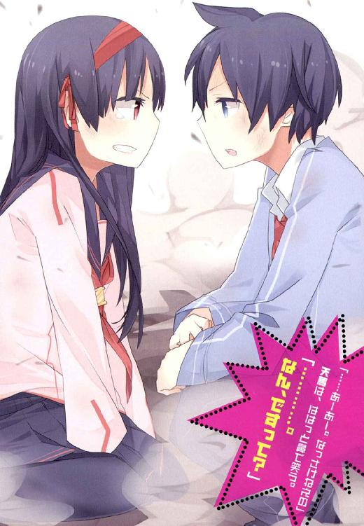

| 1×10藤宮十貴子は懐かない2 (富士見ファンタジア文庫) | |
| 鈴木 大輔 & ＰＡＮＤＡ | |
| 富士見書房 (2011) | |


本作品の全部または一部を無断で複製、転載、配信、送信したり、ホームページ上に転載することを禁止します。また、本作品の内容を無断で改変、改ざん等を行うことも禁止します。
本作品購入時にご承諾いただいた規約により、有償・無償にかかわらず本作品を第三者に譲渡することはできません。
本作品を示すサムネイルなどのイメージ画像は、再ダウンロード時に予告なく変更される場合があります。
本作品は縦書きでレイアウトされています。
また、ご覧になるリーディングシステムにより、表示の差が認められることがあります。
口絵・本文イラスト ＰＡＮＤＡ
ＡＣＴ１ 藤宮十貴子がわからない
一条天馬の朝は早い。
午前三時。
朝というより深夜に分類される時間から、彼の一日は始まる。
「んん......おお？」
まず目に入ったのは天井だった。
古い洋風の天井。
白い漆喰が年月を経てくすみ、しぶい象牙色に変わっているのが夜目にもわかる。
それと同時、壁に掛けられた年代物の柱時計が視界に入って。
（......なんだよー......まだ夜じゃんかー......）
顔をしかめた。
一条天馬、十六歳。決して寝起きのいいほうではない。
ふああああ、と大あくびをひとつ。
半開きのまぶたとぼんやりした頭で考えるのは、こんな時間に目が覚めてしまった人間が誰しも思うことである。
すなわち、あとどのくらい二度寝してもセーフなのか。
（んーと......えーと......）
少なく見積もって、あと三時間は眠っていいはずだった。
まして誰かさんを助けるために身体を張り、おかげであちこちに大ケガを負い、加えてそのケガがまだ本調子ではない今日このごろである。むしろいつも以上に睡眠が必要なのは明らか。誰にも責められるいわれはない。
そうと決まれば善は急げ。
「おやすみ～......むにゃむにゃ」
布団をもう一度かぶり直すべく、寝返りを打とうとして。
そこでようやく気づくのだ。
どうしてこんな時間に目が覚めたのか。
あるいはどうして布団をかぶり直す必要があったのか──つまり、寝起きは悪くても寝相のいい天馬の身体から、どうして布団が引きはがされていたのか、ということに。
「むにゃむにゃ......んんん？」
寝返りを打とうとした天馬の目の前に女の子の顔があった。
ちょっとした奇跡みたいに整っている、よく知った顔が。
二十センチという至近距離な場所に。
「............んんんん？」
ぱちぱち。
まぶたを瞬かせる。
ごしごし。
手の甲で目を拭ってみる。
幻ではない。錯覚でもない。まして夢の続きでもない。
その子は確かに目の前にいた。天馬が横たわるベッドの上に、天馬に寄り添うようにして──というかしっかり両腕で天馬の胴に抱きつきながら、すやすやと眠って下さっていらっしゃるのであった。
藤宮十貴子。
天馬が通う星邦学園の同級生にして魔法使い、そして同居人。ついでにアイドル級のスタイルと見た目の持ち主。
──一条天馬、十六歳である。
あらあらまあまあ、よくお休みになってるようですわねお嬢さん──などと微笑ましい気持ちになれるほど大人ではない。
「........................」
目が点、であった。
え？
あれ？
おれ、ひとりで寝てたよね？
それにここって、おれの部屋であって藤宮の部屋じゃないよね？
なのになんでこの子がここで寝てて、しかもおれに抱きついてて、細身のくせにじつはけっこうある胸をおれに押し付けてきてんの？
あわてた。
あわてて、あわてるままにベッドから起き上がろうとした。
ムチャな話である。相手は女の子とはいえ、天馬の胴回りにがっちり腕をロックしていて、一方の天馬はベッドに仰向けになった体勢。
まともに起き上がれるわけがない。
「うおっ......ちょ、ぬおっ......!?」
半分起き上がったところでバランスをくずした。
しがみついたままの藤宮十貴子をコバンザメみたいにくっつけたまま、ふたたびベッドに倒れ込む。
ぼさっ、と軽い音を立てて着地。
よかった、固い床に落ちなくて──などと安心してる場合ではなかった。
だって、ふたりして倒れ込んだその体勢は。
天馬が上で十貴子が下で。
つまり要するに、誰が見たって『男が女を押し倒している』形にしか見えないわけで。
しかもこれだけ騒ぎになっていながら、同居人の少女はすやすや眠ったままで、なおかつ天馬にしっかり腕を回したままであって。
一条天馬、十六歳。
天然ボケだ昼行灯だ、とか言われるキャラだけど、れっきとした若い男である。
そして藤宮十貴子は、とても可愛いのである。
ついでに言うと今この瞬間、めちゃくちゃ無防備なのである。
「............」
固まった。
いやまて落ち着け、相手はあの藤宮十貴子だぞ──と叫ぶ心の声が、コンマ一秒ごとにしぼんでいく。
......ヤっちまうか？
いや。
むしろ何が何でもヤるべきだ。
だってこいつは、度重なる忠告にもかかわらずこうしてフラフラやってきやがって。それで何も起こらないなんて、そんなことあるわけないのだ。こんな夜更けに男の部屋へやってくることがどれだけ危険か、この女に教育してやる必要がある。そう、これは教育なのだ。うん、教育なら仕方ない。十六年の人生を、のんべんだらりと、だけど品行方正に生きてきたつもりだけど。藤宮十貴子が将来あやまちを犯さないように矯正するためならやむを得ない。ここは涙をのんで、断腸の思いで、断固たる行動に及ぶべし。さあいざ尋常に──
ぱちり、と。
十貴子が目を開けた。
きょとんとしてる少女の視線と、「うげ」と呻いた少年の視線とが絡みあう。
「............」
「............」
次いで、十貴子の視線が天馬の手元へ。
天馬の視線も自分の手元へ。
「Ｏｈ Ｍｙ Ｇｏｄ......」
思わず英語でうめいてしまった。
偶然っておそろしい、と思う。
もちろん意図してやったわけじゃない。バランスを崩して倒れこんだ拍子に起きた、単なるイレギュラーである。
でも、だがしかし、だ。
なにもこんなタイミングで、こんな不幸に見舞われなくてもいいではないか──たまたま体重を支えるために置いた手が、十貴子の胸の上にいっちゃってるなんて、そんな、まさか。ねえ？
「............」
十貴子の視線が天馬に戻った。
ふたたび絡み合う視線と視線。
絡み合う。
絡み合う。
無言のまま、まだ絡み合う。
やがて天馬はため息をついて、
「君の寝起きが悪いのはよく知ってる」
「............」
「ほらね？ その目だよ。今こうしている間も、君は夢と現実の境目をフラフラしてて、いまいち現状を把握できてないんだろう？」
「............」
「何をどう説明したって、何をどう弁解したって、どうせろくに耳に入らないんだろうな、ってこともわかってるつもりだよ。ああわかってるさ、わかってるとも」
「............」
「でも、それでも。おれはそんなこと百も承知で、承知の上でさえこう言わずにはいられないんだ」
首を左右に振り、千年も生きた哲学者のような吐息をついて。
弱々しく微笑み、天馬は言った。
「お願いだから手加減し」
「ねじれて、めくれて、しかるのちに消し飛んでください」
............ですよねー。
どがん。
ばきん。
ぼこん。
深夜にふさわしからぬ鈍い音が、邸内の隅々までひびき渡った。
＊
「名誉の回復を要求する」
夜が明けて、朝食の席。
天馬は断固とした態度で言った。
「それと待遇の改善もだ。これじゃ身がもたん。こんな生活がつづくようなら、おれにも考えがある」
「............」
「おいこら。ちょっと。ちゃんと聞いてる？」
「............」
「あのね藤宮さん」
ハァ、とため息を吐きつつ、『こりゃじっくり腰をすえていく必要があるな』と覚悟する天馬である。
そうするしかない。
額に怒りマークを浮かべている彼に対して『つーん』とそっぽを向いたまま無視を決め込んでいる同居人を、交渉のテーブルに着かせるには。ちょっとやそっとの努力では無理に決まってるのだから。
「あのさ、おれって生身の人間ですからね？ 君とちがって魔法使いじゃないからね？ そのへんちゃんとわかってる？」
「............」
「そりゃまあね、無意識のうちに手加減してくれたのか......それともアレか？ なんて名前なのか知らないけど、例のほら、あれ。『バリア魔法』とでも言うの？ とにかく魔法使いの身体を保護するっていう、例のあれ。そいつをかけてくれたのか知らないけど、とにかく今回はケガらしいケガもなく済んだけどさ。でもね、それはあくまでたまたまそうなった、ってだけじゃん。そうでしょ？」
「............」
「このままだとさ、こういう事故は何度も起こると思うわけですよ。そりゃね、君はおれの命を助けてくれた恩人だし、そのせいで君はおれから生命エネルギー？ みたいなのをいつも補給してないとやってけない身体になってる、ってのはわかるよ？ 君が無意識のうちにおれの部屋に忍び込んでくるのも、そういう理由だよね？」
「............」
「そのへんはわかる。わかってるし、そういう事情にはできるだけ協力していこうって思ってる。結局おれがこうしてここで──藤宮家で同居することになったのも、要するにそのためだし。でもね？ その結果がさ、寝ぼけた君に弁解も聞いてもらえず、問答無用で魔法をぶっ放されるってんじゃさ、おれとしても、こう、ね？ わかるっしょ？」
「............」
わかってくれないらしい。
ハァ～～～～と、さっきより深いため息を吐いた。
そりゃそうだ。
『金髪のちびっこによる学園襲撃事件』のあおりを食って大ケガを負い、しばしの入院生活を経てようやく日常生活に復帰しようかという、その矢先だったのである。昨夜の出来事が起きたのは。
幸先悪い、どころの話じゃない。下手すればふたたび病院送りだったわけだし。
なのに藤宮十貴子のこの態度。
温厚な天馬でなければ、ちゃぶ台をひっくり返しているところだ。
（しかもさ～......）
目の前に座っている同居人へ、ちらりと視線をやる。
なんだか妙なのだ。
十貴子の様子が。
『つーん』とそっぽを向きつつ、ひとことも発さず、黙々と朝食を口に運んでいる彼女だけど。
天馬を無視しまくってるのは確かだし、取りつく島もない態度だって相変わらずだけど。
気のせいだろうか？
その横顔が、その雰囲気が。
なんだかちょっと嬉しそうに見えるのだ。
（なんだろ？ 単なる気のせい？）
野菜サラダをもぐもぐしながら首をひねる。
少なくとも、同居人の様子がいつもとちがうのは確かなのだ。
これまでさんざん痛い目をみてきた天馬はよく知っている。こちらがひとことでも抗議すれば、それに数倍するボキャブラリーで反撃してくる。それが藤宮十貴子という女だったはずだ。
なのに、これって一体どうなってんの？
なんでこいつずっと黙ってんの？
（なんかこう不気味っつーか......いやもうぶっちゃけ、ちょっと怖いっす......）
断固として抗議する意志もしぼみ、天馬は黙って朝食を口に運ぶのだった。
当然の反応だろう。心当たりが何もない彼からすれば、同居人の言動がセオリーから外れれば居心地悪くなるのも無理はあるまい。
だってわかるはずもないのだ。
どうして十貴子の機嫌が良くみえるのか。
どうして表向きの冷淡さに比べてとげとげしさが和らいでいるのか。
理解できなくて当たり前なのである。
なぜなら今の彼は──
「よしわかった」
そんな事情は露知らず、天馬はポンとひざをたたいて、
「ここは歩み寄りといこうじゃないか。君がおれの部屋に忍び込んでくるのはいい。寝ぼけて魔法をぶっ放してくるのも、まあ百歩ゆずって良しとしよう」
「............」
十貴子は相変わらずそっぽを向いたまま。
それでも根気よく天馬は言って聞かせる。
「だからね、せめてその、さ。もうちょっと厚着をしてきてくれません？」
「............」
「というかさ、ネグリジェっていうのはね、下着っつーよりもうハダカに近いと思うわけですよ。それはね、やっぱりちょっとマズいと思うわけですよ。ほら、おれたちってこう、さ。まだ若いからさ」
「............」
「いや、もちろんわかってるよ？ そろそろ蒸し暑い時季になってきたしさ、薄着をしたい気持ちはわかる。もちろんよーくわかってる」
「............」
「でもね、そこをこう、なんとかさ。もうちょっと自重を求めたいというかなんというか。そうじゃないとさ、おれのほうにもこう、都合ってもんが──」
「わかっているなら」
と、ようやく十貴子が口を開いた。
いつもより急いだ様子で朝食を口に運びながら、
「くどくど言わないでください。それともあれですか？ そろそろ梅雨の時季も近いというこの時季に、あえて厚着をさせようなんて。ひょっとしてあなたはわたしを寝汗で溺れ死なそうとでも企んでいるんですか」
「えええ～～～？」
口を開いたら開いたで、いつもみたいにムチャクチャ言ってくる彼女であった。
まあそのほうがホッとするんだけど。ヘンな態度とられるよりはずっと。
「それと念のために言っておきますが」とさらに十貴子。「わたしが厚着をしない理由は、あくまでも気温と湿度が高いからです。それとわたしは毎年この時季、いつも薄着で寝るようにしていますので。その点は誤解がないようお願いします」
「いやまあ、べつに誤解しないけどさ。つーか、今のでどんな誤解をするってのよ？」
「............」
ふたたび『つーん』とそっぽを向いてしまうお姫さま。
あかん。手に負えん。
「ごちそうさまでした」
天を仰ぐ天馬をよそに、食事を終えた十貴子はさっさと席を立ってしまった。
（......ま、いっか）
目玉焼きをもぐもぐしながら気持ちを切り替える。
今日は退院明けの初日で、ようやく日常に戻ってこれためでたい日なのだ。
確かにくどくど言ったって仕方がない。どうせアイツのあの性格は、何を言ったって変わらないだろうし。おーけーおーけー、もっと気楽に行こうぜ、おれ。
なーんてことを考えていたんだけど、
「いけませんね天馬さん」
テーブルの給仕をしていた山田さんが、やんわりたしなめてきた。
「今の態度は、あまり感心できません」
「え。まじっすか？」
あこがれの美人メイドさんに叱られて、天馬はあわててしまう。
「今の、何かおれ悪かったすか？ え、まじで？ どこが？」
「まあ、そこはあえて詳しくは言いませんけど」
天馬のカップに紅茶を注ぎながらお茶をにごして、
「お嬢さまの態度も大人げなかったのは確かですが。そこは男性のほうが上手くリードしてあげないと。女の子はデリケートな生き物なんですから」
「は、はあ」
頭の中が『？』マークだらけになってる天馬を尻目に、山田さんは『言うべきことは言いました』みたいな顔をして、
「それにそのあたりを差し引いたとしても、ちょっとご自分の都合ばかりを主張しているように見えましたよ？ 以前お話ししたことは、ちゃんと覚えてらっしゃいますよね？」
「あー......」
もちろん覚えている。
『金髪のちびっこによる学園襲撃事件』の後、天馬と山田さんとの間で話し合いの場がもうけられ、そこでとある同意が成立したのだ。
それすなわち、
『藤宮十貴子の生命維持に関して、一条天馬は最大限の協力をする』
ということである。
「お嬢さまはああいう性格ですし」
山田さんは眉をハの字にして、
「天馬さんには何かと不自由、不都合を強いることになるとは思いますが。重ねてお願い申し上げます。どうぞ、お嬢さまのことをよしなに──」
「いやいやちょっと！ やめてくださいよそんな！」
山田さんに深々と頭を下げられて、あわてて立ち上がる。
もちろんよくわかっているのだ。
天馬の命を救うために、十貴子が自分の命のほとんどを天馬に渡してしまったこと。
十貴子がこれまでどおりの生活を送るためには、常に天馬から生命力の補給を受け続けなければならないこと。
生命力の補給を受けるには、なるべく天馬のそばにいなければならないこと。
そのためのもっとも効率のいい方法は、天馬に直接触れることであり、その肉体的接触も密であればあるほど高い効果が見込めること。
生命力のやり取りには一種の中毒性があって、身体のほうが当人の意志とは無関係に、生命力の維持を最優先にして勝手に動くケースもあること──『夜中にベッドに忍び込んでくる』のはその一例であること。
など、など。
ぜんぶ承知しているのだ、もちろん。
そうでなくとも十貴子は不可解な行動を取ることが多いし、その理由を何かしらの事情で口にできないこともわかっている。まして彼女は天馬の恩人。少しばかり理不尽なあつかいを受けることがあったってがまんするべきである。いやむしろ、それでもよろこんで協力しなくちゃいけない。
「わかってます。わかってますって」天馬は大きくうなずいて、「ちゃんとおれやりますから。その点は安心してください。いやまじで」
「はい。頼りにしてますよ天馬さん」
「ういっす。任せてくださいっす」
「......ごめんなさいね」
ふう、とめずらしくため息をつく山田さん。
「ちょっと口うるさいかもしれませんね、わたし。ほんとはこんなこと何度も言いたくはないんですが、どうにも心配で」
「いやいやいやいや。そんな、あやまらないでくださいよ。山田さんは何も悪くないっすよ」
うんうん、と大げさにうなずきながら、
「あれっしょ？ 言いたいけど言えないことがたくさんあるのは、山田さんも同じなんすよね？ ほら、例の『禁則事項』ってやつ」
「はい......わたしもいろいろ難しい立場でして。実際のところこう、非常に歯がゆくて、身もだえしたくなる気分といいますか......」
と言って、実際にうねうね身もだえしてみせる。
「は、はあ。そっすか」
というか、身もだえしたくなる気分なのは天馬のほうなんだけど。
だって山田さんって、可愛い顔してるのにグラビアアイドルみたいなスタイルの持ち主だから。そんな仕草をすると、ぶっちゃけとってもいやらしいのである。
「ともあれ、これだけは忘れないでください天馬さん」
「うい。なんでしょう？」
「前にも言ったことですが。お嬢さまは今もまだ、とても危険な状態にある、ということをです」
「あー......」
確かに以前、言われたことだけど。
「それ、まだ解決してないんすか？」
「してません。現状は一応の安定状態と言えなくもないですが、それもあくまで暫定的で一時的なもの。いつどの瞬間に破綻するか、正直予測がつきません」
「うーん。そうなんすか」
首をひねる。
「山田さんの言う『危険な状態』って、藤宮の健康状態のことじゃなかったんすか？」
「それもあります。でもそれだけじゃないんですよ」
「それだけじゃない、っていうと、つまり？」
「禁則事項です」
「ふむ。じゃあ言いたくても言えないっすね」
「そうなんです。しょうがないんです」
ふう、とため息。
天馬もつられてふう、とため息。
「......ともあれ、今後も綱わたりの状況がずっと続くだろうということを、天馬さんには理解しておいてほしいのです。といっても、理解したところで一筋縄でいく問題ではないんですけどね、天馬さんとお嬢さまの関係って」
「なんと。そうだったんですか」
「はい。実はそうだったんです。......まあこの話はこのへんにしておきましょう。どのみち、これ以上ここで言っても仕方がないことです」
と言いつつ、山田さんはいつものほんわか明るい表情になって、
「それとお嬢さまのことですが。今日は遅れて学校に行かれるかと思われますので、天馬さんはどうぞお先に」
「ありゃ。そうなんすか」
登校に際しては、十貴子が天馬のうしろをぴったりついてくる──というのがこれまでの恒例だったのだけど。
まあそれならそれで、むしろ助かるというか。
なぜなら学園のアイドル的立場の十貴子が、平凡な生徒の代表みたいな天馬のそばにいることは、なにかと周囲の目がキツくなることを意味するので。
「そりゃまあ、おれはそれで構わないっすけど。なんでまた？」
「さあ。どうしてでしょうね」
そ知らぬふりをしつつ、禁則事項モードで話題を変える山田さん。
「ところで天馬さん。そろそろデザートのババロアをお出ししましょうか？」
──メイド服の裾をひるがえしてキッチンへ向かう山田さんの背中を見送りながら、天馬は考える。
（いやまあ。わかってはいるんだよね）
転機を迎えていることが、である。
いちどは夢破れ──アンドロメダへ行ってやるという、若気の至りとしか言いようのない夢をあきらめて、のんべんだらりと生きていくことを決めはした。
そのままだらだら人生を送って、ほどほどのジジイになったところで適当に死ぬんだろうな、みたいなことを、ぼんやり思い描いていた。
だけどうっかり十六歳の若さで死にかけてしまって、それでも運よく生きながらえて。
その副産物として、藤宮十貴子というひとつ年下の同級生と知り合って。
しかも彼女は魔法使いだったものだから、魔法に関するあれこれにも関わることになってしまって。
おまけにこの間の『金髪のちびっこによる学園襲撃事件』では、ついつい積極的に関わってしまって。
その際に、ちょっと昔を思い出すような──全力で夢に向かって突き進んでいたあの感覚を思い出すような、まあちょっとした活躍をしてしまって。
（......ムリ、だよなあ）
何がって？
決まってる。
こういう流れで、これまで通りのんべんだらりと生きるのが、である。
「うーむ......」
あらかた食事の済んだテーブルの上で。
天馬は自分の両手をひらき、じっと見つめてみた。
今もまだ確かにある。
電気を消したコタツの余熱みたいに残ってる、あの感覚。
金髪のちびっこ相手にマジバトルした時の──本気の本気を身体中からしぼりつくした、あの感覚が。
（つーかさ。コタツの熱ってけっこうしぶといんだよね。一時間とか二時間とか、平気であったかいままだったりして）
ふう、とため息。
まあね、そりゃ認めるさ。
たしかにあれは気持ちよかった。
そりゃーもう、めちゃくちゃ気持ちよかった。
一流の魔法使いを相手にしたマジバトルで、一歩まちがえたらどうなっていたかわからない、ヤバい状況だったけど。
むしろだからこそ？ 自分の全身をフルに使って、全身全霊、頭も身体もぜんぶフルに使って何かをするってことの気持ちよさを、うっかり思い出してしまった。
思い出して、しまったんだよなあ。
「うむむう......」
まだ立ち位置が宙ぶらりんというか、必ずしも自分の立たされてる状況がクリアになってるわけじゃないんだけど。
どうやら一条天馬の向かう先というのは、おおかたもう決まっちゃってるらしく。
「一条天馬、華麗なる復活！ ......なーんつっててな」
誰もいない食堂でひとりつぶやき、さらに付け加える。
「でもま、まずは目先のことをひとつひとつ......か」
本日の天馬には小さからぬイベントが待っている。
日常への復帰、という大イベントである。
まあ何をするにしたって、足場がしっかりしてなきゃ何もできないわけで。
復帰したら復帰したで、ややこしいこと、面倒なこと、たくさんあるだろうけど。
「まあいいさ、なんとかなるなる。気楽に行こうぜ、おれ」
うんうんうなずいて、山田さんがお手製のデザートを持ってくるのを心待ちにする天馬なのであった。
そんな軽い気持ちで考えていたのだ。
この時は、まだ。
＊
（......おや？）
と思うことになったきっかけは、昼休みのある出来事である。
『金髪のちびっこによる学園襲撃事件』の傷跡があちこちに残る星邦学園に、けっこう久しぶりな感じで戻ってきた天馬は、
『おう天馬！』
『久しぶりだなおい、こら！』
『元気してたか!?』
『ひとりだけ逃げ遅れてケガするとか、相変わらずドジっ子だよなあ！』
みたいな感じで、クラスメイトたちから手荒い歓迎をうけて。
だけど、でっかいゴーレムが白昼堂々と現れた上、魔法使い同士のド派手なバトルまであったにしては、みんなわりと普通の態度だなおい──と拍子ぬけしたり。
って、そういや山田さん言ってたっけ。もともと学園で魔法バトルが起きることは想定していて、あらかじめ色んな手は打っていたとかなんとか。あとで訊いてみたところ、なんでも学園全体にある種の魔法が掛かってるとかで......山田さんいわく『ま、いっか』の魔法です、とかなんとか......要するにマインドコントロール系の魔法なんだろうけど、それにしてもいいかげんなネーミングだなあ──みたいな感想を持ったことを思い出したり、とか。
ともあれ。
いろいろな根回しのおかげでもあるんだろうけど、思いのほかあっさり日常に復帰できたみたいで。
もちろんそれってありがたいことなんだけど、だけどこれはこれでちょっと物足りないよなあ──なんて罰当たりなことを考えたりしてるうちに迎えた昼休み、である。
「よう天馬。久しぶりだな」
やすらぎのひとときを迎えてざわめく教室に、見慣れた人物が顔を出した。
親友にして幼なじみ。沢木悠太郎である。
「よう沢木。おひさー」
「まったくだ。ほんと久しぶりだよ」
「うんうん。ほんとほんと」
「何しろ入院中は、何度見舞いに行ってもおまえに会わせてもらえなかったしな」
「あはは。うん、そうだよなあ」
「でもって、面会謝絶になるようなケガから戻ってきたにしては、ずいぶんぴんぴんしてるようにみえるけどな」
「あはは。うんまあ」
だってしょうがないのである。
ひとことで言って、今の天馬は昔とぜんぜんちがうポジションに立っているのだから。
ありがたいことに、沢木以外にも友人たちが何人も見舞いにきてくれたようだけど、結果として天馬はそのうちの誰ひとりとして顔を合わせられなかった。
お察しください、というやつである。
『藤宮十貴子は、一条天馬から生命力を分けてもらわないと生きていけない』
その事実からいろいろ想像をふくらませていけば、天馬が誰にも会うことができなかった理由はくみ取っていただけるのではあるまいか。
まあそれ以外にも、入院中は実にいろいろな出来事があったのだけど──まあ、それは別の話である。
「ま、そのへんの話は後でいいさ」
と、沢木もいつになくあっさり引き下がってくれるようで、
「天馬が戻ってきためでたい日だ。シケた話はなしにしようぜ」
「おーさすが親友。話がわかる」
「ついでにもうひとつ、親友らしいことをしておこう。今日は昼メシおごるよ。お前の復帰祝いだ」
「おおー。まじで？」
「おうまじだぜ。学食でいいよな？」
「オーケーオーケー。学食大好き。そんじゃま、さっそくいつものメンツ集めて──」
「待ってください」
待ったが掛かった。
え？ 誰から？
と振り向いた先に、
「予定より遅れましたが、間に合ったみたいですね」
藤宮十貴子がいた。
山田さんの予告どおりではあるけど、それにしてもけっこうな遅刻である──なんてことはさておき。
「待つって......何を？」
「昼食をです」
教室中の注目を集める中（存在自体が注目の的なのだ、藤宮十貴子という少女は）、彼女はずいっ、と何かを差し出してきた。
けっこう大きめの風呂敷づつみが、その手に握られている。
「......何？ これ？」
「昼食です」
「はあ」
首をひねる天馬。
「その中に昼メシが入ってるの？」
「そうです」
「......んで？ その昼メシをおれに渡して？ どうすればいいわけ？ どこかへ運べばいいの？」
「あなたはひょっとして頭が悪いのですか」
「なんという暴言!?」
真顔で言われたのでちょっとショックだったけど、
「あなたが食べるんです。決まってるでしょう」
十貴子が続けて発言した内容はさらにショッキングだった。
「......え？ おれが？ 食べるの？」
「我が校の学食は」
ちいさい子供に言って聞かせるみたいに、
「値段も良心的な上、味にも栄養価にも十分な配慮がされた、とても優秀な学食です。学食の職員の方々の努力と成果は尊敬に値します。ですが味にせよ栄養価にせよ、どうしたって予算の壁というものがあります」
「は、はあ」
「なので今後、あなたの食事はすべて藤宮家がまかないます。同居人の健康状態を正しく管理するのは、藤宮家の人間であるわたしの務めですから」
「は、はあ。どうも......って」
さあーっと。
音を立てて血の気が引いていくのがわかる。
「あの、藤宮さん？」
「なんです」
「いま、なんて？」
「『今後、あなたの食事はすべて藤宮家がまかないます。同居人の健康状態を正しく管理するのは、藤宮家の人間であるわたしの務めですから』と言いましたが、何か？」
ざわ。
ざわ。
ふたりのやり取りを聞いていたクラスメイトたちが、ひそひそ声でささやき合うのが聞こえてくる。
『おい聞いたか!?』『聞いた！ あのふたりって同居してたのかよ!?』『なんてこった......あの藤宮さんが天馬と......』
『ねえちょっと！ どゆこと!?』『そりゃあたしが聞きたいって！』『やっぱあのふたりって付き合ってるってこと!?』
なんてこったい......せっかくうやむやになってたそのへんのネタが、また蒸し返される格好に！ というかわざわざ言わなくてもいいじゃん、同居してることとかさ！ どうみたって面倒ごとにしかならないのに！
声にならぬ悲鳴をあげる天馬を尻目に、十貴子は平然とした顔。
クラスメイトたちのざわめきもどこ吹く風で、
「それで？ 昼食はどこで食べるんです？」
「え？ ああいや......」度重なるショックでちょっと放心状態のまま、「ええと別にどこで食べてもいいけど......」
「では教室で。時間ももったいないですから」
と言って、十貴子はさっさと席についた。
天馬の席に自分のそれを並べて、である。
「......あの、藤宮さん？」
「なんです」
「ひょっとしてあなたも、ご一緒されるので......？」
「藤宮家の食事をわたしが食べるのは不自然ですか？」
「ああいえ、むしろ自然ですけど......」
「ではどうぞ席に。ほんとうに時間がなくなってしまいます」
とか言いながら、十貴子が風呂敷づつみを解き始める。
現れる漆塗りの重箱。
ふたを取ると、中からは卵焼きとか唐揚げとかポテトサラダとか──素朴だけどどこか心温まるような、そして明らかに形とかが不ぞろいの、見るからに素人の手によるものだとわかるおかずの数々が。
『手作りだ......』『手作り弁当だ......』
ふたたびざわめく教室。
確かに。
まごうかたなき手作り弁当である、この物体は。
でもって山田さんならたぶん、もっと洗練された、料亭顔負けの弁当を作ってくるはずで。
「......あの、藤宮さん？」
「なんです」
「学校に遅れてきたのって、ひょっとしてこれのため？」
「誤解しないでください」ちょっとむきになった顔で、「何度も作り直したわけではありません。初めてだったし、ていねいに作ってたから、これだけ時間が掛かったんです。次からはもっと上手くやります」
「ああいや」
そこは別に問題にしてないんだけど。
「──ふむ」一部始終を見守っていた沢木が、ひらひら手を振って背中を向ける。「復帰祝いはまた今度、だな」
「お、おお？ ああいやすまん沢木」
「いいさ。話はまた、そのうちじっくり聞かせてもらうことにする」
ああいや、ていうかさ。
むしろここにいてくれない？
でもっていろいろ助け舟とか出してくれません？
──という天馬のアイコンタクトもそ知らぬ顔で（通じてるはずなのに！）、頼りになるはずの親友は教室を出て行ってしまった。
「お先にいただきます」
一方の十貴子は、相変わらず自分のペースを崩さない。お行儀よくお両手を合わせてお辞儀して、お上品にお箸を動かし始めている。
こうなっては天馬も箸を取るしかない。
ざわ......
ざわ......
クラスメイトたちは自分の昼食などそっちのけ。黙々と箸を動かす天馬と十貴子をずっとチラ見している。
（居心地、わるっ！）
正直、弁当の味なんてさっぱりわからない。針のムシロとはまさにこのことか。
対照的に十貴子は堂々たるものだった。
周囲の視線など気にするそぶりもなく、しゃんと姿勢を正し、むしろぐいっと胸を張っている。『大義名分があるから恥ずかしくないもん！』みたいな感じというか。やましいことなんてないし、正しいことをやってるんだから何も臆するところはない、みたいな。
（いやまあ、確かにさ）
筋は通っているのだ。
確かに現在、天馬は正式に藤宮家の住人である。
そこへ至るまでにはまた色々すったもんだがあったのだが......とりあえず今はさておくとして、彼の衣食住はすべて藤宮家が責任を持ってまかなう。そういうことで話はついているのだ。
そして藤宮十貴子という少女は、律儀で真面目な性格である。
ならばいったんそうなった以上、彼女はその取り決めを全力で実行するだろう。内心の感情がどうであれ。
その食事も他人任せにせず、自分の手で用意してくるあたり、実に十貴子らしいではないか。そもそも昼メシまで毎日食わせてくれるってんなら、こっちとしてもありがたいわけだし。むしろ喜ぶべきだよな、これって。うん。
......なーんてことを考えつつ、クラスメイトたちの好奇の視線はなるべく気にしないようにしつつ、天馬は納得しようとしたのだけど。
＊
（......おや？）
と思うことになった次のきっかけは放課後。
『十貴子の手作り弁当事件』の他にも何かと波乱含みだった復帰一日目を終え、ようやく家路についた時のことである。
「いやー疲れた疲れた。復帰初日だってのに、こんなに疲れちゃっていいんだろうか、おれ」
「............」
「まあ前回の事件でのケガは？ 単純な骨折とか打撲ばっかだったし？ おかげさまでもうほとんど回復してるけどさ。それでもブランク明けの身体で今日みたいなのは、ちょいキツかったよなー」
「............」
帰り道。
十貴子とふたり、である。
「君のファンクラブの会員だとかいうやつらから呼び出し受けて、フクロ叩きに遭いかけたりさー。君の元同級生だっていう女子から呼び出し受けて『藤宮さんのことはちゃんと真剣なんでしょうね？』とか詰め寄られたりさー。職員室から呼び出し受けて『これ以上学園でモメごと起こす気なら藤宮とは別れてもらうぞ』とか言われたりさー」
「............」
「なんでこう、みんなそういう勘違いするのかね？ まあしょうがないけどさ、おれと君の関係がどういうものかなんて説明できないし。したところで納得してもらえるかどうかも怪しいし」
学園からあるていど離れれば、当然ながら同じ学園の生徒と鉢合わせることも少ない。
すっかり肩身の狭い立場になってしまった天馬としては、放課後になればかなり気が楽になるし、口だって滑らかにもなるのだ。
ちなみにイヤミを言って聞かせているわけではない。単に間がもたないから適当にしゃべってるだけである。
一条天馬、十六歳。
ふにゃふにゃしててもれっきとした日本男児だ。
十貴子の生命力維持に協力する、といったん決めたからには、その点に関してうじうじ文句を言ったりしない。
「............」
そんな彼の言動をどう思っているのか、となりを歩く十貴子は無言。
『つーん』とそっぽを向いたまま、例によって無視を決め込んでいる。
（......しかしまあ、現実的には困った問題なんだけどね）
十貴子が天馬のそばにいなければならない理由。
以前とはちがって、その点はもうわかっている。
（直接おれに触れなくたって、そばにいるだけでもある程度は効果があるらしいから。まあ金魚のフンみたいにくっついてくるのはわかるけど、さ）
ちらり、と隣を歩いている同居人に視線をやりながら思う。
確かに協力すると決めはした。
決めたからには、男なら黙って──とも思う。
でも、それにしても。
この子がそばにいると、基本的にトラブル続きなんだよなあ。
（ま、心の中でボヤく程度のことは許してもらいたいっす......）
隣を歩く十貴子に聞かれないよう、そっとため息。
せめて彼女がもうちょっと目立たない、普通の女の子ならよかったのかもしれないけど。
残念ながら藤宮十貴子は、学園でもっとも有名な、人気者で。
ましてこれまで浮いたウワサもなかった清純派で、そんな彼女が特定の男のうしろをいつもついて回ってるとなれば。
そりゃまあ、周りが放っておいてくれるわけもなく。
せめてもうちょっと離れてくれれば、こっちの心労も少なくて済むんだけど。あと五メートルぐらい......いや、この際だからほんの二メートルだけでも、
（......ん？ あれ？）
なんだろう？
何か違和感っぽいものに気づいたんだけど。なんだこれ？
まぶたをパチパチ瞬かせながら原因を探る。
歩いている町並みをぐるりと見て──いつもの繁華街、日暮れが近づいていて人出はちょっと多めだけど、特に変化なし──その次に空を見上げてみて──別にＵＦＯが浮かんでいるとか、そういうこともなく──さらに自分の服装をチェックしてみて──着崩れした制服のだらしなさはいつもどおり──さらにさらに、今度は隣を歩いている同居人に目を向けて──
ん？
隣？
（あれ？ おかしくね？）
なんでコイツ、おれの横を歩いてんだ？
前は確か、おれのうしろにずっとくっついてきてたよね？ うんそうだよ、金魚のフン状態だったもんコイツ。
まあ確かに？
夕暮れ時の繁華街は分刻みで人が増えていて、行きかう靴音もじつにせわしなくて。わざわざ何メートルも離れてぴったりついてくる、なんてのはやりにくいだろうし、自然とこっちのそばに寄ってくることになるんだろうけど......
「なんですか。人の顔をじろじろ見て」
ぴたりと十貴子が足を止め、むすっとした顔でにらみつけてくる。
「何か言いたいことでも？」
「ああいや」ちょっとあわてて、「いや大したことじゃなくてさ。ほら、君っていつもおれのうしろを歩いてたじゃん？ それもわりかし離れた感じで。なのにさ、なんで今日はおれの隣に？」
「べつにおかしなことではないでしょう」
何を不思議がってるのかわからない、という顔で、
「こんなに道が混んでるのにわざわざ離れて歩いたら、そちらのほうがよほど不自然じゃないですか」
「そりゃまあそうだけど」
「それに混んでるから、というだけではありません。なるべくあなたのそばにいたほうが生命力の回復に有利だということも忘れないでくださ──」
と、その時だった。
ちりんちりん、というベルの音が鳴り、それに続いて「おーいどいてくれ！」という声。
「......お？」
十貴子の背後から、ねじりハチマキにおかもちという見るからに出前の途中っぽいおっさんのチャリが、
「うおっと!?」
あわてて十貴子を道の端に寄せた。
出前のチャリは、こんな人ごみでそれはどうなのよ、というスピードで天馬と十貴子の脇を通り過ぎて、
「ごめんよ兄ちゃん！」おっさんはそのまま大あわてで遠ざかっていく。
「ほんとだよ！ 気をつけてよ！ ......ったく」
まあ確かに、こんな人ごみの中でいきなり立ち止まったこっちも悪かったけど......って、
「あ」
くちびるの端をひきつらせる天馬。
この、体勢は。
とっさのことだったから何も考えずにやっちゃったけど。
十貴子を道の端に寄せる時、つい彼女の肩を抱きかかえるような格好になってしまって。
さらに悪いことに、たまたまそばにあった電信柱に押しつけるみたいな──もっと言うと、ちょっと聞き分けのない恋人を強引に路上でゴニョゴニョみたいな、そんな体勢というかなんというか。
（やっべ......）
と分かっていても、不覚ながら身体が動かない。車の前に飛び出した猫がうっかり立ち止まってしまう心理みたいなものだろうか、これは。
頭の中でサイレンが鳴る。
思い起こせば今朝もそうだった。おれは何も悪くないのに、藤宮のほうが自分の都合で勝手にベッドに入ってきたのに、なぜかひどい目にあうのはおれのほうで。そうだわかった、度重なる理不尽な攻撃を受けたおかげで、きっと心が縮こまってるんだ。だからこんな風に身体が動かない......ってそんなこと考えてる場合じゃなくて早く逃げ──
（......ん？ あれ？）
なにもない。
何秒待っても、逆巻く嵐はいつまでたってもやってこない。
それどころかその予兆さえも、
「......そろそろ放してもらえませんか」
「え？ あ、うん。ごめん」
「助けてくれたことについては感謝します」
拍子ぬけの気分で身体を離す天馬。
そんな彼を促して歩き出しながら、
「ですが、もっと他にやり方というものはなかったのですか。こんな公衆の面前であんな真似をするなんて、ちょっとどうかと思います。どうせならもっとスマートなやり方を心がけてください」
「は、はあ」
自分の注意不足を棚に上げて何いってんだコイツは──なんてことすら思わなかった。
今の天馬は身も心もきょとん状態なのである。
だっておかしくね？
これまでのこういうパターンだったら『消し飛んでください』確定なんじゃないの？
いやまあ、そりゃさ。ここは人だらけの繁華街で、陽もまだ高いし。藤宮だって朝の寝起きみたいに寝ぼけてるわけじゃないから、それなりに理性もあるんだろうけどさ......いや、ちがうんだ。ちがうんだよ。やっぱぜったいおかしいんだよ。何かわからないけど、何かが、何かがヘンなんだよ......
「なんですか。人の顔をじろじろ見て」
ぴたりと十貴子が足を止め、むすっとした顔でにらみつけてくる。
「何か言いたいことでも？」
「............」
つられて立ち止まりながらも、天馬は無言。
さっきも彼女は同じことを言った。
さっきと同じようにむすっとした顔もしてる。
でも、だけど。
くちびるの内側をぎゅっと嚙んで、何かをガマンしてるみたいな......それも怒りの爆発をかろうじてこらえている、という感じじゃなくて。まるでニヤつく口もとをどうにかして押さえ込んでいるような、そんな仕草に見えて。
え？ なにこれ？
なんなのこの雰囲気？
（──あ）
わかった。
すべての違和感の根本が、唐突に。
となりを歩くことでもない。
弁当を作ってくることでもない。
口を利けばとげとげしいし、表情も冷たいし、突き放すような態度も相変わらずだけど。
（目、か）
そう。目だけは全然ちがう。
以前のような、火を噴く怒りと苛立ちのこもっていた瞳から、いつのまにか激情の色がうすらいで。
ひどくやわらかい──生え変わったばかりの若葉みたいな、あたたかい春の陽を映し返す水面みたいな、そんな目になっている。
あるいは、物覚えの悪い犬を飼っている飼い主が、口では叱ってるのに目が笑ってる、みたいな。
「......何なんです。ヘンな顔して黙ってしまって。先に行きますよ？」
「ああ......いや......」
「ふん。とっくに春が終わって、そろそろ夏も近いというのに。そんなぼんやりしててどうするんです。いつまでもだらしない顔してないで、もっとしゃんとしてください。......まったく、こんな人のそばにいなければいけない運命を呪いたいです。こんな調子では先が思いやられます」
肩を怒らせて、棘のある言葉を吐いて、すたすたと先に行ってしまう同居人の背中を追いながら。
のんびり屋の天馬も、ようやく気づき始めたのだった。
おかしい。
ぜったいにおかしい。
いつもつんけんしてて、炎のような気性の持ち主で、触れれば切れるみたいなキャラだったはずの藤宮十貴子に。
いったい今、何が起きているのだろう......？
ＡＣＴ２ 藤宮十貴子の気が知れない
「というわけで。なんか藤宮の様子がヘンなんです」
「まあ。それは大変なことですねえ」
と大げさにおどろいてみせる山田さんだけど。
当然、そんなことはとっくに気づいているのだった。
天馬が気づくずっと前から。
もっと言うと、彼女はこうなることを十分に予測し、怖れてもいたわけで。
──その日の夜、藤宮家。山田さんの私室。
むつかしい顔をして相談にやってきた天馬の話を、藤宮家のメイドさんはニコニコしながら聞いてるところ。
「いやま、何も問題なければいいんですけど。でもなんかこう、ちょっと嫌な予感がするというか......これから新しい生活を送っていくにあたって、いろいろトラブることはわかってたし、今日の学校で起こった程度のことは覚悟してたっすけど。でもこれ以上ってことになると、ちょっとマズい気もするというかなんというか」
「ふむふむ」
「......てな感じなんですけど。どう思います？ 山田さん」
「うーん。そうですねえ」
などと首をかしげてはいるけど。
実際のところはどうもこうもない。
だって彼女には、すべての事情が手に取るようにわかるのだから。
幼少のころより十貴子に付き従い、十貴子と天馬の『本当の関係』まで知っている山田さんにわからないわけがないのだ。
彼女の主が今、どんな気持ちで、何を考えているか。
（まずいですよねえ......）
顔ではニコニコ、心ではため息である。
『マズい気がする』とか天馬は言ってるけど、実際はそれどころじゃない。
事は当初に想定していたよりずっと、はるかにマズい方向へ進み始めているのだ。
だって考えてみるがいい。
十貴子の心理状態を、である。
十年前。一条天馬という天才に出会い、その存在から多大な影響を受け、いつかその隣に並び立ちたいと願った十貴子。
そのために『世界一の魔法使いになる』と決心し、その代償として天馬の記憶から自分の存在を消し、夢を叶えるまでは決して自分の身分を明かさないことを『誓約』した──いつかお互いに夢を叶えて再会しようと約束して。
だけど天馬は『アンドロメダへ行く』という夢をいつしか捨ててしまって。
それでも十貴子は自分が掲げた目標を追いつづけて自分を鍛え、やがて世界一にもっとも近い魔法使いと呼ばれるまでになって──だけど一方の天馬は夢に近づくどころか、昔の面影すらない、へにょへにょのぐーたら男になってしまって。
不遇の時代だった。
十貴子の心情は察するに余りある。
でも、それでも彼女は決して腐らなかった。
折れそうになる心を何度もはげまし、立ち直らせ、信じつづけた。天馬がいつかまた夢を追ってくれることを。かつての輝きを取り戻してくれることを。
だけどそんな願いもむなしく、天馬はのんべんだらりとした生活を送り続けて。
十貴子は地団駄を踏む思いだったろうけど、『誓約』があるために何も言うことはできなくて。
だけどある日、ひょんなことから天馬が死にかけてしまったことで事態は急変する。
自分の命と引きかえに天馬の命を救った十貴子は、彼といっしょに暮らさざるを得なくなって。でも『誓約』のことがあるから天馬にくわしい事情は説明できず、その歯がゆさとままならなさと、そして長年溜まりに溜まった不満ゆえに、天馬に対してキツい態度を取りつづけて──
決して、口には出さなかったけど。
それは彼女にとって、とてもつらいことだったにちがいなく。長いあいだ大切にし続けてきた信念すら、いつ途切れてしまってもおかしくない状況だったはずで──
そんな折に。
あの事件が起きたのだ。
（......無理もないこと、ですよね......）
十貴子の心のカギがゆるむのが、である。
そりゃそうだ。
だって、そんなギリギリの状況で、十貴子は見てしまったのだから。
一条天馬の底力を。
コレット・ラ＝サール相手に──一流の魔法使いを相手に、生身のまま、魔法も使わず、互角に渡り合うという離れ業をやってのけて。
多少さびついてはいても、天馬の才能が十年前と変わらぬ輝きをもっていたことが、証明されたのだから。
もしその状況で、十貴子の心境に何も変化が起こらないなら。
それはもう、感情ある人間の反応とはいえまい。
まして彼女はまだ、ほんの十五歳の女の子でしかないのだ。たとえ誰しもが認める優等生であっても、天才の名をほしいままにする魔法使いであっても。
むしろよく理性を保てているほうだと思う。
言いたいこと、やりたいこと、たくさんたくさんあるだろうに。そのほとんどをがまんして、だけどがまんしきれなかった気持ちのカケラが、行動の端々に表れてくるわけで。
それがつまり、天馬の言うところの『藤宮の様子がヘンなんです』になるわけで、
（────あああああああもおおおおおおおッ!?）
心の中で身もだえする山田さんであった。
もどかしい。
ほんッッッッ、とに、もどかしい。
十貴子のつらさも十分に理解してるけど、すべての状況が見えてるのに何も言えない山田さんのストレスだって、相当なものなのである。
（ほんとにもー！ 天馬さんのばか！ あほ！）
彼女は大人だから、顔ではニコニコしてるけど。
内心では、鈍感男のカラッポ頭をぽかぽか殴りつけてやりたい気分である。
（しかも何です、今日の学校からの帰り道のアレは!? あんなことしたら、お嬢さまの気持ちがもっと揺らいじゃうじゃないですか！ ただでさえお嬢さまの感情が微妙なところなのに、あんな風に肩を抱いて......この上そんなフラグまで立ててどうするんですか、ほんとにもう！ ほんとにもう！）
そんな山田さんの気持ちも知らず、天馬は春のお花畑みたいにぽわぽわした顔で、にへらにへらと笑っている。
（ほんとにこの子は......もういっそ、洗いざらいぜんぶ話してあげようかしら？）
まあ、思っててもそれだけはできないんだけれど。
そもそも一度は記憶を取り戻した天馬がこうしてヘラっていられるのも、山田さんが魔法を使ってふたたび彼の記憶を封じたからなのだけど。
......ともあれ、彼女はそんな状況で言われたのである。
『どう思います？ 山田さん』なんてことを。
「うーん。そうですねえ」
首をかしげ、考えるふりをしてしばし。
「ごめんなさい。わかりません」
眉をハの字にして山田さんは謝った。
内心のお怒りをみじんも外に出さないあたり、さすがは大人の女性である。
「うーんそっすか、わかんないっすかー。山田さんなら何かいいアドバイスくれるかなー、って思ったんすけど」
「ごめんなさいね。わたしにもほんとにわからなくて」
加えてこれは、まったくの本音でもあった。
たとえ事情はすべて見えていても、はっきり言って手の出しようがないのである。
天馬と十貴子の問題は、どこまでいっても彼らふたりの問題なのだ。
（とはいえ......これはまずい状態ですよね、ほんとに）
天馬が礼を言いつつ部屋を出て行った後で。
山田さんはふたたびため息をつき、物思いに沈む。
これまで彼女は、主である十貴子に全面的な信頼をおいてきた。
どれだけつらい状況でも、あるいはどんな誘惑に駆られる状況でも。
十貴子は並はずれた意志力と信念で、自分の感情をコントロールしてきたから。
だけど今、状況はかつてないほど十貴子にとって甘い魅惑に満ちている。長年保ってきた固い決意すら溶かしかねないほどに。
（だいじょうぶ、よね？ きっと）
そうだとは思う。
いっしょに居てはいけないふたりが、いっしょに居なければならなくなった、このねじれた状況だけど。決してふみ越えてはいけないラインは存在する。
いま現在、かろうじて状況をグレーゾーンに止めている一線というやつが。
もし、万一にもそれを踏み越えれば。
事態はほんとうに取り返しのつかないことになってしまう。
（お嬢さま。わかってらっしゃいますよね？）
祈るような気持ちで、山田さんは主の部屋がある方向へ眼を向けた。
......山田さんの不安も当然なのである。
だって、もしも今の状態で──お互いに誓約を果たしていない状態で、十貴子が天馬に自分の正体を知られてしまったら。
彼らは死ぬまで離れ離れになる運命にあるのだから。
＊
そんな山田さんの気苦労も知らず、一方の天馬は。
「いやー！ 今日も山田さんは可愛かったなあ！」
ほくほく顔であった。
「『うーん。そうですねえ』って首をかしげる感じとか！『ごめんなさい。わかりません』って言う時のしょんぼりした顔とか！ もうぜんぶ可愛いっす！ というか山田さんの部屋も可愛かった！ ぬいぐるみとか普通に置いてあった！ ファンシーだった！ うんうん、いいなあ！」
自分と同居人との関係がどのくらい複雑で微妙なものかも知らず、いい気なものである。
まあ、肝心なことをすべて忘れさせられてるんだから、仕方ないのだけど。
「いやー山田さんはホント最高だったけど」
と、自室に戻った天馬はちょっとアホ面をあらためて、
「しかしどうすっかね、まじで」
同居人の不可解な言動のことである。
藤宮十貴子はいったい何を考え、何をどうしたいと思っているのか。
（山田さんに訊いてもわからないとなると......ちょっともう、おれにはお手上げだよなあ）
長年を十貴子と過ごしているメイドさんでさえわからないのだ。つきあいの浅い天馬に理解できるはずもなく。
（ぶっちゃけワシ、女子の考えることはようわからんけん......）
なんとなくエセ広島弁で考えながら、しかしわからんといって放っておくわけにもいかんけん、とも思う。
あらためて同居人の行動を思い返してみる。
その一。夜中にベッドにもぐりこんでくる。
その二。手作りの弁当を持ってきてくれる。
その三。以前は取りつく島もないくらいつんけんしてたけど、今は何だかんだでだいぶ丸くなってきている。
結論。
藤宮十貴子は、一条天馬に好意を抱き始めている。
（............おっかしいなあ？）
首をひねる。
何度もシミュレーションをくりかえしてみるのだけど、何度くりかえしても同じ結論が出るのだ。
まあ、物事の上っ面だけ見てるからそんな結論になるのだろうけど。
いやほら、だって、ねえ？
ないじゃん。そんな理由。藤宮がそんな感情を抱く理由なんか、ありゃしないって。
出会ったきっかけもムチャクチャで、つるむようになってからはほとんど毎日かみつかれてるような感じで。好意どころか、むしろアイツはおれみたいなタイプに反感もってたっぽいし。
それにほら、こないだ山田さんも言ってたじゃん。おれが『藤宮っておれのこと嫌いなんすかね？』って訊いたら『嫌いでしょうね』って。めっちゃ即答だったじゃん。
うん、やっぱ確定だ。
藤宮はおれのことを嫌っている。
これはもう間違いない。
もし、それでも万が一。
藤宮がほんのちょっぴりでも、おれに対する評価を変える理由があるとすれば。
それはたぶん、おれから生命力を分けてもらわないと生きていけない、ってことが原因になってるはず。運命共同体を強いられてることによる、いわゆる吊り橋効果ってやつなんだろう。おれに頼らなきゃ生きていけない以上、おれを嫌ってばかりもいられない──ってのは、これはもう生きる上での本能だと思う。
それ以外にあるとすれば......例えばあれか。
『金髪のちびっこによる学園襲撃事件』で、おれが藤宮を助けたこととか？
いやでも、それってちょっと単純すぎね？ 確かにあれで、おれの株は上がったかもしれんけど。だけどそもそも、おれよりアイツのほうがぜんぜん強くてすげーじゃん。おれなんかあいつに比べたら米つぶみたいなもんだし。
まあでも、理由にならないこともないか......これだけじゃ理由としては弱いけど。
ほかに理由として考えられそうなのは、
「──ふぎゃん!?」
ヘンな声が出てしまった。
あまり思い出さないようにしてたことを、つい思い出してしまったので。
そう、あれだ。
例の事件の時のあれ。
おれと藤宮のくちびるとくちびるが、その、ごにょごにょしてしまったことが、あるにはあるんだけど。
いやでもあれはちがうっしょ？ だってあれって完全に事故だったじゃん？ うん、というわけであれはなかったことにしよう。ああいうのは数に入らないし。うん、ノーカンノーカン。
......でも、数に入れないにしても。
藤宮って、あれのおかげでちょっと力が戻ってきて、金髪のちびっこをぶっ倒すことができたんだよな。てことはまあ、藤宮の気持ちが変わる理由として数えられなくもないか。
............。
ん？ あれ？
やっぱなんか、わりと理由があるような気がしてきたぞ......？
え？ じゃあまじで？
藤宮っておれのことを？
「うううん？ むむむう......？」
盛大に首をひねる天馬である。
どうも納得できないというか、ぜんぜん信じられないというか。
初期の十貴子のつんけん具合を考えれば、それも仕方ないのだけど。
「──よし。決めた」
こうしてうだうだ悩んでても仕方ない。
藤宮十貴子とは、当分の間いっしょに暮らすことになるはずで。そういう相手が何を考えてるのかわからないってんじゃ、どうみても居心地が悪すぎる。
というわけで。
ここはひとつ、本人に直接訊いてみようじゃないか！
＊
「あなたはひょっとして頭が悪いのですか」
「なんという暴言!?」
翌日。
星邦学園、昼休みの食事の時間。
決心しておきながらさんざん悩んだ末、思い切って訊いてみたら。結果はこのありさまだった。
「どうしてそんな結論に至るのか、理解に苦しみます。あまり言いたくはありませんし、考えたくもありませんが......わたしとしては、あなたの頭がほんとうに悪いのかもしれないと、あわれみをもって疑うしかありません」
「返す返すもひどい！ おれそこまで悪くないよ頭！」
「ではどうしてそんなことを訊いてくるのですか。『藤宮、ひょっとしておれのこと好き？』なんていうバカげたことを」
「えー？ いやだってほらさ、なんてーか」面と向かって言われると、自分のセリフにちょっと照れてしまうけど、「いやほら、たとえば君の行動の端々にさ。なんかそれっぽい雰囲気があったりなかったりするような。そんな気がするんだけど」
「......ひょっとして、ではなくて」
お嬢さまはお上品に弁当をつつきながら──今日も彼女のお手製である──ひどく冷淡な声で、
「ごく単純にあなたって頭が悪いんですね。いま確信しました」
「ひ、ひどい！ ひどすぎる！ これはもう言葉の暴力だ！」
「ちがいます。これは暴力じゃなくて、ただ単に事実を伝えているだけです。そもそも説明はきちんとしたはずですし、そうでなくてもちょっと考えればわかるはずのことじゃないですか」
そう言って箸を置き、天馬に向き直って、
「夜中にあなたのベッドに入り込んでしまうのは、わたしの身体が生命力を求めて勝手に動いてしまうから。お弁当を用意するのは、同居人であるあなたの栄養状態をきちんと管理する必要があるから」
「いやまあ、確かに知ってるし聞いてるよ？ そのへんは。でもさ、なんというかさ、もっとこう、君の雰囲気がちがってきたというかなんというか──」
「雰囲気なんて、ちがってて当然じゃないですか。確かにわたしはあなたの性格や言動に対して反感をもってましたし、それは今でも持っています。ですが、わたしとあなたの運命はもはや一蓮托生で、しかも今さら隠しておけることでもないから。だからわたしだってなるべく努力してるんです。なるべくあなたと上手くやっていくための努力を」
「努力ゥ？」
うさんくさそうな目をする天馬。
「努力って、どこがよ？ ぜんぜんそんな風に見えないんですけど」
「たとえば」十貴子は心なしか胸を張って、
「夜中にあなたのベッドで目が覚めた時、思わずあなたを消し炭にしてしまいたくなる衝動を抑えようとする、涙ぐましいまでの努力とか」
「いやまあ、それは確かに大切なことだけど......つーか何？ 君ってさ、涙ぐましいまでの努力をしなきゃ、おれを消し炭にしてるってことなの......？」
「人が眠ってるのをいいことに襲い掛かってきて、おまけに胸まで触っていたあなたには、そのくらいの対応でちょうどいいと思います」
「ちょっとまて！ あれは事故だからな!?」
「とにかく結論を言うと」
猛抗議を始めようとする天馬をさえぎって、
「あなたとわたしは、あくまでも運命共同体なだけ。それ以上のことは何もありません。わたしの言動をどう受け取ろうと勝手ですが......わたしがあなたに好意を抱いているなどと考えるのは、あなたの自意識過剰が原因だ、とだけは言っておきます」
「......けっ。あーはいはいそうですか」
鼻にしわを寄せてそっぽを向く天馬。
「ふん、おれはどうせ自意識過剰のイタい男ですよ！ すいませんね悪かったね！」
そりゃ彼だって、
『藤宮って、ひょっとしておれのこと好き？』
なんてこと、別に本気で思ってたわけじゃなくて。ただまあいちおう確認しておいたほうがいいか、と思ってただけなんだけど。
だけどこんなふうに鼻で笑われるような感じで否定されたら、温厚な天馬もヘソを曲げるというものである。
（......んでも、やっぱり）
苛立ちまぎれに弁当をむさぼり食いつつ、ちらりと同居人を盗み見る。
『どうしてこんな人と昼食をとらないといけないのかしら』みたいな退屈そうな顔で、黙々と箸を動かしてる彼女だけど。
ハリネズミみたいにとげとげしい感じで、全身から『不愉快です』オーラを出してはいるけれど。
でも、なんかこう、やっぱり。
目だけは、なんだかやさしい雰囲気なんだよなあ。
むしろ、ちょっとうれしそうに笑ってるみたいにも、見えるわけで。
......まあ、いい。
実際の話、肝心なのはそこじゃない。
「えーとさ、藤宮さん？ ところでちょっと相談なんだけど」
「なんです。あなたがわたしにいやらしいことをしていたのは、れっきとした事実ですから。ねじ曲げようとしたってそうはいきません」
「いやそうじゃなくて。もっと別の話」
つーんとあさってのほうを向く十貴子へ、嚙んでふくめるように、
「いやもうぶっちゃけね？ もうちょっと遠慮してほしいな、って思ってるわけです」
「遠慮？ 何をです？」
「ぜんぶ。君のやることなすことぜんぶ」
「ぜんぶとは？」
「とりあえずさ──君がベッドに入り込んでくる理由も、薄着のままでいる理由も、いつもそばにくっついてくる理由も、お手製の弁当を作ってくる理由も、一応はわかった。納得する。突っ込みたいところはいろいろあるけど、無理やり納得する」
天馬はお天道様に雨乞いをする農民みたいな顔で、
「んでもさ、んでもね？ やっぱ現実問題として、いろいろマズいことを引き起こすわけですよ、君のそういう行動ってのは」
「............」
十貴子はそ知らぬ顔で、お茶なんかをすすっていたり。
「たとえば今朝だってさ。また君がベッドにもぐりこんできて、またいつものパターンになったわけで。そりゃ油断してたおれも悪かったかもしれんし、あるていど警戒してれば防げなくもないけど。んでも正直いって、毎晩こんなことやってたら心が休まるヒマがありません。寝られません。このままじゃ不眠症になってしまいます。低血圧なのか何なのか知らんけど、君って本気で寝起き悪いし」
「............」
「そもそもさ、今こうして昼メシ食ってる場所。ここからしておかしくね？」
「............」
「教室じゃない、屋上でもない。学食でもなけりゃ、芝生を敷いたベンチとかでもない。ここってさ、中庭にある庭木の上だぜ？ なんでこんな場所で食ってるのか、わかってるよね？」
「............」
「あのさ、君自身がどう考えてるか知らないけど。君って目立つの。そりゃもう目立ちまくりの有名人なの、この学園じゃ。そんな君がさ、これまでの品行方正で清純派なキャラとは正反対なことをやり出したら......わかるっしょ？ ぶっちゃけみんな君の行動に興味ありまくりだし、そうなると、そばにいるおれだって無関係じゃいられないの。ていうか基本、おれに対する風当たりってめちゃくちゃキツいの。そのへんわかってくれてる？」
「別に、堂々としてればいいじゃないですか」
お茶を飲み終えたアイドル様は涼しい顔で、
「少なくともわたしはそうしています。恥ずべきことは何もしてないんですから」
「無茶言うなっつーの。そもそもおれと君の関係って、他人には説明できないことが多すぎるだろが。それにおれは君みたいな真似できないの。誰に何を訊かれても黙って微笑んでるだけとか、そういうことできないの。そんなに心臓強くないのおれは」
「何を言ってるんですか」
十貴子は本気で不思議そうに、
「一流の魔法使い相手に生身で渡り合ったあなたが。どうしてその程度のことでびくびくする必要があるんです」
「いやね、それとこれとではぜんぜん違うっしょ？ なんつーか、カテゴリーというかジャンルがさ......」
だんだん疲れてきた天馬である。
どうしてこう、この同居人はガンコで一本気というか......これと決めたらまっしぐらに突き進んでしまうのか。もうちょっと融通を利かせるというか、柔軟に世の中を渡っていけばいいのに。どれだけ速い球を投げれたって、それだけじゃエースピッチャーにはなれないんだぜ？
つーかあの時ってさ。
なんでか知らないけど、そういう気分だったんだよ。
あの時──金髪のちびっこの魔法に藤宮がやられそうになって。それをかばったおれが吹っ飛ばされて気絶して、そこから目が覚めたあと。
なんだかヘンな気分だったんだ。
自分に対してめちゃくちゃ腹が立って、でもって藤宮のためにとにかく何かしてやりたい、みたいな。そんな気分。
まあ、説明してもわからないだろうけど。おれ自身からしてよくわからんし。
でもほんと、何だったんだろな？ あれって。
なんでおれ、藤宮に対してあんな気持ちになったんだろ？
なーんかこう、いろいろ大事なことを忘れてる気がするんだよな......。
「まあ、あなたの言ってることもわかります」
黙り込んでしまった天馬に、十貴子は少しだけ声のトーンを変えて、
「なるべくあなたの意向にも沿えるよう、前向きに検討しましょう。『わたしだってあなたと上手くやるために努力しているんです』と言ったからには、それを行動で示さないといけませんし」
＊
（前向きに検討する、ねえ）
十貴子にしてはめずらしく、歩み寄りの姿勢が見える発言だったけど。
はたしてどこまで期待できるやら。
とにかく融通の利かない性格だし──それに彼女からすれば自分の命に関わることでもある。正直、あまり期待できないだろうとも思うわけで。
（ハァ......まいったねえ、こりゃどうも）
トイレの窓から顔を出しつつ、ため息の天馬であった。
星邦学園の特別教室棟にある、男子トイレである。
犬みたいにうしろにくっついてくる十貴子も、さすがにここまではついてこない。天馬としてはトイレ休憩のわずかな時間が、ほとんど唯一心が休まる時間なのだった。一般の教室からは離れた場所にあるから、めったに他の生徒は来ないし。
（まあこっちとしても、さ）
なるべくなら十貴子の力になってやりたいのだ。
なにしろ彼女は命の恩人なのだから。
その心理があるゆえ、天馬はあまり強い態度には出れないわけで。
（でもさ、なんかヘンな話だよね）
十貴子が天馬の命を救ったことが、である。
前々から不思議に思ってたことだけど──どうしてあいつはそんな真似をしたんだろう？
そりゃ、助けられる命があるなら助けるのが自然だけど。でも自分の命をリスクにさらしてまで助ける必要なんてあるか？ 大して面識もないおれ相手に？
『命を助けるのは理屈じゃないと思うんだ。うん』
『自分の命を大事にするのにも理屈が必要ですか？』
みたいな話をあいつとしたこともあるけど。
あいつのほうこそ、自分の命を大事にしてないじゃん。
ま、ああいう性格のヤツだし。おれが死に掛けてるのを見たら、何も考えずに助けちゃったのかも知れないけど......いやでもやっぱ、それにしたって不自然だよなあ。そもそもあいつ、タイミング良すぎじゃね？ おれがもう今にも死に掛けてるところに現れて命を救うとかさ。偶然にしても、ちょっと出来すぎだよなあ。
「よう天馬。苦労してそうだな」
「んお？」
背後から掛けられた声に振り向けば、そこには見慣れた顔。
「おーっす沢木。なんだ、わざわざこんなところまで？」何しろ一般教室棟からはかなり離れたトイレである。「よくわかったな。ここにおれがいるの」
「ま、なんせ長い付き合いだからな」幼なじみにして親友でもある沢木悠太郎は、イケメンスマイルでこちらにやってきつつ、「で、調子はどうだ？」
「まあ......だいたいお察しの通り、みたいな」
「だろうな」
天馬のとなりに並んで、
「誰の手も届かなかった学園のアイドルが、今じゃ冴えない野郎のそばにベッタリだ。いってみりゃ有名税みたいなもんだよ、お前の苦労は」
「冴えない野郎かー。ひでえなあ」
「しょうがないさ。それが今のお前の現実だ」
さらりと言う親友に、天馬は「ふむ」と鼻を鳴らして、
「しっかし有名税ねえ......そんなもん払うほどにはイイ思いしてないんだけどな、おれ」
「お前がどう思うかじゃない。周りがどう思うかだ。最近じゃお前のおいしい立場に歯軋りしてる連中が、お前の暗殺計画を練ってるくらいだからな。本気半分で」
「冗談半分じゃなくて本気半分なのね......」
「ま、藤宮ファンのやつらにしてみりゃ、そんな気持ちにもなるだろう。やつらの間じゃ『一条天馬は卑劣な手段を用いて藤宮十貴子の生殺与奪を握り、その生命の保障を盾に取って彼女を夜な夜なベッドに侍らせてる』ってことになってるらしいし」
「そりゃまた......すごい悪役だね、おれ」
あはは、と渇いた笑い。
始末に負えない話だ。あながち間違ってないあたりが特に。
「それもこれも、お前と藤宮が何も言わないからだ」
親友は肩をすくめて、
「なんでいきなりお前らふたりがくっついたのか、ひとこともしゃべらないから。そりゃウワサだけ一人歩きして当然」
「ですよねー」
「しかも俺にだって言ってくれないんだろう？ その理由」
「うん。禁則事項だから」
「禁則......？ なんだそれ」
「いやまあ。最近のおれの流行り？ みたいな」
「ふうん？ まあいいけど」
そこで会話がとぎれた。
ふたり並んで窓枠に身体をあずけ、ぼへーっと空を眺める。
そろそろ梅雨入りも近いか、という時季にしては落ち着いた空模様だった。少しばかりスモッグで煙った青をバックに、細い筆で刷いたような薄い雲。
この幼なじみとは、昔からよくこうして空を見上げたものだ。
何もしゃべらず、公園の芝生とか川べりの土手に寝転んで。何時間だって見ていられた。
もう、沢木悠太郎との付き合いも十年になる。
（あれから十年たって......今じゃ高校二年生なんだよな、おれって）
かつての自分から見れば、高校生なんてのはものすごい大人で。
いつかそこにたどり着くことなんて、ちっとも想像できなかった。
アンドロメダへ行くことよりも、ずっとはるかに遠い想像だった。
それが今や、高校二年。
高校どころかその先の進路も考えなきゃいけない立場になってきたというのに、アンドロメダへの距離は一歩だって縮まらないまま。
（いろいろ考えなきゃなー）
一条天馬の身の振りかたを、どうするべきなのか。
一度は心に決めたとおり、このまま平凡でぼんやりした人生を消費しきるのか。
それとも。
「──なあ沢木」
「おう」
「お前ってやりたいこととか、ある？」
「む？」
イケメンの友人は眉を片方だけ上げて、
「めずらしいな。お前がそういう話を振ってくるのは」
「そりゃまあ、な。いくらおれでもさ、高校二年にもなれば進路のことも考えるって」
深い意味で話を振ったんじゃないんだぜー、とさりげなくアピールしつつ、
「んで？ なんかやりたいこととかあるの？」
「あるさ。もちろん」迷いのない感じで沢木は言う。「あるし、そこへたどり着くための準備もしてるつもりだ」
「へー、さすが。んで、やりたいことって何？」
「秘密だ」
「秘密かあ」
「それで？ なんかあったのか天馬？ そんなこと今まで訊いたことなかったのに」
「んー？ いやまあ。特に」
「ふむ。そうか」
「うむ。そうなんだ」
............。
............。
（あれ？）
と思った。
いつものパターンなら、ここで毎度のお説教が出るところなんだけど。『天馬。お前は昔はもっとすごかったじゃないか。サボらずにもっと本気だせ』みたいな。
そういえばその前の会話でも。
いつものお説教パターンになりそうなところを、『しょうがないさ。それが今のお前の現実だ』みたいな感じで、すぱっと言い切って終わってたし。これってどういうこと？
はっ!?
ひょっとして沢木のやつ、とうとうおれに愛想を尽かして何も言う気をなくしたとか？ 小うるさいお小言がなくなるのはありがたいけど、それはそれでちょっとさみしいというか何というか......
「ふわ～～～あ」
と。
勝手なことを考えているうちに、盛大なあくびの音が出た。
天馬ではない。
セイウチみたいに口をあけて大あくびをしたのは、彼の幼なじみのほうで。
「へーえ？」
今度は天馬が不思議がる番だった。
沢木悠太郎という男は、十貴子とはまた別の意味できっちりしていて。何ごとにもだらしない天馬とは正反対の、びしっと背筋の通ったタイプだから。こんなふうに人前であくびするなんて珍しいんだけど。
「そういや、お前にしてはちょっと疲れてる感じだよな、沢木。目元らへんとかもさ、なんか隈とかできてね？」
「まあな。ちょっと疲れてるのは確かだ」
「なんかあった？」
「秘密だ」
「秘密かあ」
親友の間で隠し事とは！ けしからん！
自分のことを１００％棚にあげてぷんすか怒りつつ、いかにして秘密とやらを聞き出してやろうかと考えてるうちに予鈴が鳴った。
「そろそろ時間だな。行こうか天馬」
「む。しゃあねえなー」
命拾いしやがって......という目でにらみつけながら、ふたり連れ立ってトイレを出た。
自分たちのほかに誰もいない廊下を、長年の友人と並んで歩く。
（やりたいこと、か）
こうして沢木と歩いていると、自然に十年前を思い出してしまう。
まだエネルギーとやる気に満ちていた──夢の実現を信じきってひたすら突っ走っていたあのころを。
もちろん自覚はしているのだ。
近ごろ、かつての自分を思い出すことが多くなったこと。
古い昔を思い出すことが、前ほどには苦じゃなくなっていること。
そしてどうやら一条天馬の人生が、過去最大クラスの分かれ道に立たされているらしいということ。
（うーむ......）
そっと手を開き、見つめてみる。
こうしてみると、あの感覚が今でも鮮烈によみがえってくる。
『金髪のちびっこによる学園襲撃事件』において、めちゃくちゃ久しぶりにサビついた身体を全力で動かした時の──頭のてっぺんから足の先まで稲妻が走りっぱなしみたいな、あの感覚が。
一度は挫折した。
夢を捨て、がんばることをやめ、ぼんやり生きることを心に決めた。
でも、周りの状況がそれを許さなくなって。
長かった昼寝の時間はどうやらおしまい、ってことになるようで。
一条天馬、十六歳。
高校二年生。
確かに若くはあるけれど。
他人の何倍もの速度で人生を突っ走ってきて、他人の何倍もの速度で疲れ果てて。あげくに走ることすらやめてしまったこの自分に。
もう一旗あげる時間は、まだ残っているだろうか？
夢を追うだけの気力は、まだ残っているだろうか？
＊
──なーんてことを、らしくもなく考えてみたけれど。
今すぐにでも対処しなければならない現実的な問題が、彼の前にはいくつも立ちはだかっている。
千里の道も一歩から、ではないけど。まずは目先の問題を片付けていかなければ。
「というわけで。どうしたらいいっすかね？ 山田さん」
「うーん。そうですねえ......」
その日の夜、藤宮家。山田さんの私室である。
天馬と十貴子の事情を理解し、なおかつ相談にも乗ってくれる唯一のひとのもとへ、今日もいそいそお邪魔しているのであった。
「わたしとしても、今の状況がよろしくないのはわかってます」
と、困り顔でメイドさんはおっしゃる。
「ですが正直なところ、状況がデリケートすぎて下手に手出しができないというのが現状といいますか。なんとかしたいのは山々なんですけど......」
「うーんなるほど」うんうん頷きつつ、「山田さん言ってましたもんね。『もどかしくて身もだえしそう』みたいなこと」
「そうなんです。細かいことは禁則事項に触れるので話せないんですけど......ともかく根本的な解決法というものがないんです、今の状況って。いえ、あるにはあるんですけど......今すぐどうこうできる話ではないといいますか」
「ふむ。困ったもんっすねえ」
「はい。困ったものです」
ふう、とふたりそろってため息。
『もうちょっとなんとかして、藤宮サンにご遠慮していただくわけにはいくまいか』
というのが本日の議題である。
ミニテーブルをはさんで難しい顔をしつつ、ふたりして知恵を出し合っているのだけど。いいアイデアはなかなか思い浮かばないのだった。
（藤宮をいちばんよく知ってる山田さんにもわからないってなると......こりゃいよいよ打つ手がないなあ）
紅茶のカップを撫でながら、天馬はややあきらめ気味。
一方の山田さんは、なにやら物思いに沈んでいるご様子。とはいえ何か名案を探っているというよりは、名案なんて存在しないことを確認する作業をしている感じ。
見た目の印象に似合わずけっこうな切れ者らしい彼女の頭の中で、果たしてどんな思考が張り巡らされているものか。天馬にはうかがい知ることができない。
彼にわかるのは、そんな山田さんもやっぱりかわいいな、ということぐらい。
（というか山田さん......この時間になってもメイド服なのね......）
そろそろ就寝時間も近く、邸内の業務も終わっているはずだけど。
ていうかこのひとっていつ着替えてるんだろう？ おれってこのひとのメイド服姿しか見たことないよなあ。メイド服も最高だけど、ぜひ他の服を着てるところも見てみたい！
「──やっぱり」
ついつい見入ってしまっている天馬の視線にも気づかぬ様子で、山田さんが口を開く。
「ささっと解決できる方法はなさそうです。急がずゆっくり探っていくしかないですね。解決法を──というより、折り合いのつけられそうな方法を」
「うーんそっすかー。やっぱそうなりますかー」
「ただ、近ごろのお嬢さまが天馬さんに近づきすぎてる、ということについてはわたしも問題だと思っています。できればもう少し距離を取っていただきたいと思うのですが......まだわたしの口からどうこう言う段階ではないとも思いますし......」
「む。そうなんすか？」
ちょっと意外である。
「山田さんって前は、にくたいかんけー推奨とか言ってませんでしたっけ？」
「ええ、大いに推奨するところです。そのほうがお嬢さまの生命の安全にとって明らかに有利ですから。ですがこれには一筋縄ではいかない事情がありまして。わたしとしては、むやみに推奨するわけにもいかなくなったんです。『事情』さえなければ、あらゆる手段を使って肉体関係まで持っていくんですけど」
「......まあおれとしては、『事情』とやらのおかげで命拾いしてるっぽいすけどね......で、その『事情』ってのは？」
「禁則事項です」
「ういーっす」
「ともあれ」山田さんはコホンと咳払いして、「問題があるのは事実ですから。わたしとしては、何かしらの行動に出てみることをおすすめします」
「行動っていうと、たとえば？」
「それは天馬さんにお任せします。くり返しになりますが、これはあくまで天馬さんとお嬢さまの問題。わたしは手出ししたくてもできないんですから」
（ふむう）
お礼を言って山田さんの部屋を辞し、天馬は考える。
確かに問題はあると思ってるし、問題があるからには解決しなきゃならない。『行動を起こす』のは彼としてもまったく同意である。
はてしかし、いったいどうしたものか。
（凶暴だけど、いちおう藤宮ってあれでも女子だしなあ。女のあつかいってのはようわからんけん......）
人生の前半を無我夢中に突っ走り、後半をぼんやりマイペースに過ごしてきた天馬にとって、女の子という生物は未知のそれに等しい。小学生かそこらの女の子ならともかく、ほぼ同い年の女の子となると、もうどう扱っていいものやら。
（あいつらって、わけのわからんところで怒ったり喜んだりするし。どこに地雷があるのかわかんないんだよなー。まったく困ったもんだぜ）
自分の鈍感さを差し置いて、うんうんうなずく天馬であった。
（まあいいや。どうせよくわからんのだし、わからんくても動かなきゃいけないんだし。だったらあれこれ考えず、まずはやってみるか）
決めたらすぐ、動く。
環境がはげしく変化したゆえか、天馬にしてはいつになく行動的である。
（藤宮と距離をおく方法か。どんなのがあるだろ？）
十貴子だって、自分の命が懸かってるから天馬のそばにべったりなわけで。でもちょっと前までの彼女はもっとつんけんしてて、天馬から距離を置いていたのだ。やってできないことはないはず。
ちょっと前までの十貴子はどうしてつんけんしていたか？
天馬のことが嫌いだったから、だろう。
じゃあどうして今はつんけんっぷりが減ったのか？
天馬がちょいとばかり活躍してしまって、それで彼のことを見直したから、だろうか。
（てことはつまり......）
たとえば、こういうこと？
＊
「しょうゆ」
「............。はい？」
明けて翌日の藤宮家。朝食の席である。
「しょうゆ、つったんだよ」天馬は物分かりの悪い犬でも見るような目で、「二度も言わせんな」
「はあ」
言われた十貴子のほうは、ナイフとフォークを動かす手を止めてきょとん顔。
「今日の朝食は洋風ですが。しょうゆを何に？ オムレツにでもかけるんですか」
「おれの好みに文句でも？」
「いえ、べつに」やたらとデカい態度で言い放つ天馬に、十貴子は目を白黒させて、「文句はありませんが」
「だったらさっさと取ってこい」
「............」いぶかしむような沈黙も数瞬。そばに控えていたメイドさんに向かって、「山田さん。おしょうゆを──」
「おい。人の話を聞いてねーのかお前」椅子にふんぞり返って天馬がさえぎる。「おれはお前に言ったんだよ藤宮。さっさと行ってこいや」
「............」
今度こそ同居人は眉間にしわを寄せた。
しめしめ──と心の中で思いつつ、顔にはそんなことおくびにも出さず、天馬はえらそうに脚を組んで、
「できないってか？ しょうゆひとつ取ってくることも？ いい歳して子供以下かよ、ったく使えねえ」
「............」
一方の十貴子は、全力で『わけがわかりません』という顔。
当然だろう。普段は事なかれ主義で、主張らしい主張もない草食系の天馬が、いきなり肉食っぽさ丸出しの牙を露わにすれば。そりゃ戸惑うというもので。
「......わかりました」
ややあって立ち上がる十貴子。
天馬の意図はわからないけど、まあとりあえず従ってみようという態である。
「どうぞ」
「おう」
ふんぞり返ってしょうゆを受け取り、オムレツにだばだばふりかけ、「これがたまんねーんだよな」とか心にもないことを言いながら口に運ぶ。
十貴子は何か言いたそうな表情だったけど、けっきょくは何も言わずに席に戻って食事を再開し、
「おっと。こぼしちまったな」
その直後であった。
しょうゆまみれのオムレツを天馬がこぼしたのは。
「おい藤宮」
あごをくいっくいっと下げて、汚れたシャツのすそを示してみせる。
「......なんですか」
「なんですか、じゃねーよ。早くしろや」
「............」
「まさか何をしたらいいかもわからない、ってんじゃねえだろな？ ああん？」
「......さっきからどういうつもりです」極力感情をおさえた声。「納得のいく説明をしてください」
「納得のいく説明、ね」
脚を組みなおし、鼻で笑う天馬。
今にもふところから葉巻を取り出してくわえかねない勢いの、デカい態度で、
「お前さ。誰に向かって口きいてんの？ お前にとっておれの存在がどういうものか、ちゃんとわかってる？」
「というと、つまり？」
「つまりじゃねーよ、んなの決まってんだろ？ お前はおれから生命力を分けてもらわなきゃ生きていけない──ってことはつまり、おれがお前の命を握ってるってことじゃねーか。お前を生かすも殺すもおれ次第......そうだろ？」
──もういちど株を下げればいいのではないか、と思ったのである。
藤宮十貴子から距離を取る方法の話だ。
つんけんしてた彼女がちょっと丸くなったのは、たぶん彼女からみた天馬の評価が上がったからで。つまりその評価が下がりさえすれば、また前みたいに戻るはずで。
で、いちばん手っ取り早いのがこれだろう、と。
（あいつの命を握ってることを盾にとって、横暴の限りを尽くす......そんなことやってれば、ぜったいおれの株って下がるだろーし。ていうか藤宮の性格からして、こういうのガマンできないだろうし。株が下がる以前にケンカになるな、絶対）
それはそれで歓迎なのである。
この際『ねじれてください』の一度や二度は覚悟の上。それで今の状況から抜け出せるなら安いもの──
「わかりました」
「へっ？」
「汚れたところを拭きますので、食事を続けていてください」
「え？ いや、ちょっと──うおっ!?」
止める間はなかった。
テーブルの上の布巾を手に取るやいなや、十貴子は天馬のそばにかがみ込んで、
（うひ!?）
シャツの裾を拭きはじめたのである。
問題は『シャツの裾』という場所。
いまの天馬は、長めのシャツを着て椅子に腰掛けていて。
つまり『シャツの裾』というのは、彼の太もものつけ根のあたりに位置しているわけで。
（ちょ、おま、そこ、待──）
ついでに言うと一条天馬、十六歳。かなり感じやすいほうであった。
（うひゃっ──はうっ──ぬひっ──）
一方の十貴子は。
そんな天馬の内心を知ってか知らずか──たぶん後者だろうけど──『えい、えい』みたいな感じで一生懸命に汚れをふき取ろうとしている。この際、彼女の真面目な性格は完全に凶と出た。ついでに彼女の手先が思いのほか不器用なことも。
「やっぱりすぐには取れないみたいですね、汚れ」
さんざん天馬の背すじをびくんびくんさせてから、ようやく十貴子は立ち上がり、
「すぐに洗えば汚れも残らないと思います。替えのシャツを持ってきますので着替えを......って」眉をひそめ、「なんて顔してるんですかあなた。まるで温泉につかって悦に入っているお猿みたい」
「ああいやね、うん......その原因である君にだけは言われたくなかったな......」
「？ 何を言ってるのかわかりませんが、まずは着替えを。早ければ早いほど汚れは落ちやすいはずです」
「いや、ていうかその前にさ」
ヘヴン状態からやっと立ち直って、
「君、何も言うことないの？ おれのこういう態度とか、やり方にさ。でもって、なんでそんなあっさり従っちゃうわけ？ もうちょっとこう、ほら、別の反応みたいなのがあってもいいっしょ？」
「？ 何が言いたいのかよくわかりませんが」
小首をかしげて、
「先ほどのあなたの主張はもっともだと思いましたから。今後はなるべくあなたの身の回りの世話をするように心がけようと思ってるんですけど」
「........................」
「なんですかその顔は。元はといえばあなたが言い出したことでしょうに」
「いや、まあ、そりゃそうなんだけどさ......」
「あなたとわたしは一蓮托生の身ですから」
なんと言っていいかわからない天馬の気も知らず、十貴子は自分の主張を展開する。
「あなたにとっての不利益はわたしにとっての不利益でもあります。あなたの利益を守り、あなたの害を取り除くことは、わたしにとって当然のこと。ましてあなたはいわば、わたしの命の源でもあるわけですから。むしろあなたのケアはもっと積極的にするべきでしたね。まして『なるべくあなたと上手くやっていけるよう努力する』とも言ったばかりなんですから」
「........................」
「なんですかその、いかにも『不本意です』とでも言いたげな顔は。ともかくこれからは方針を変えます。これまでは遠慮していましたが、これからはもっとあなたのそばにいなければいけませんね。あなたのお世話をするために」
完全に読みちがいだった。
彼女の性格からして、天馬の亭主関白っぷりをガマンできるはずないと思ってたのに。
（つーかまずいだろこの展開......）
作戦が外れるだけならまだしも、これじゃ結果があべこべだ。なんとかしないと。
「えーと藤宮さん。やっぱいいや」
「？ やっぱいいや、とは？」
「んーとね、おれのケアするとか世話するとか、そういうの。やっぱやめにしよーぜ？ やっぱほら、自分のことは自分でやらないとね。何でもかんでも君に任せてるようじゃいけないよな、うん」
「......どういうつもりですか」
十貴子の表情が変わった。
「朝令暮改という言葉がありますが、何分も経たないうちに前言を翻すなんて。納得のいく説明を聞かない限りは承知できません。それともあなたというひとは、ちょっとした気分だけでころころ発言を変えるような、そういう軽薄なひとなんですか」
「いやまあ、ほら。しょせんはおれの言うことだし。あんまり真面目に聞くものでもないっていうかさ。まあそんな感じで。ね？」
「............」
「つーか君もよくないぜー？ そんなふうに人の言うことをホイホイ聞いちゃってさ。そんなだと、そのうちヘンなやつにだまされちゃうよ？ たとえばおれみたいなろくでもないやつにさ」
「............」
あ、あれ？
なんか藤宮の表情がさらに険悪になってきたような......でもって、なんかちょっと肌寒くなってきたような気も......
ちょっと焦り気味に弁解していた天馬も、ようやく気づき始める。
同居人の背後に、黒々とした雷雲が渦巻き始めているのを。
『女の考えることはようわからんけん』とか言ってた天馬だけど。
ほんとうに、まったくもって、これっぽちも。その手のことがわかってないのだ。
藤宮十貴子のことについては特に。
彼女が低気圧を発生させるのがどういう時なのか。これまで何度か経験しているはずなのに。
気をつけてるつもりでも地雷を踏み、よけた先の足すら地雷を踏む。
悲しいかな、それが一条天馬なのであった。
「──なーんていうのはもちろん冗談で！」
ことさら明るい声を出して『ぱん』と手を叩く。
このままじゃほんとにまずい、と判断して方針変更。
「いやごめん、あまりにも嬉しかったからさ！ それでつい、あんな心にもないこと言っちゃったんだよね！ だってほら、『あの』藤宮十貴子にいろんな世話をしてもらうなんてラッキーすぎるっしょ!? おれにこんな幸運が舞い込んでくるわけない、みたいに疑っちゃってさ！」
「............」
「いやーでもマジでおれのために色々やってくれるわけ？ いや参ったなあ、これじゃクラスの連中にまた恨まれちゃうなあ！ でもうれしいなあ！ いやほんとに！」
「............」
同居人から向けられる視線の刃に耐えられず、翻した手をさらに翻す。
一条天馬、十六歳。ヘタレであった。
「というわけで！ これからもよろしくお願いします藤宮さん！」
「......そういうことであれば、まあ」
ようやく雷雲を引っこめた十貴子が、それでも形ばかりはむすっとした顔のまま、
「納得します。そこまで喜ばれるのであれば、わたしも悪い気はしませんし。今日からはもっといろいろ工夫しなければいけませんね......あ、そうだ。そろそろお昼のお弁当を作らないと」
と言ってさくっと朝食を済ませると、いそいそキッチンのほうへ駆けていった。
「............天馬さんって」
一部始終をだまって見守っていた山田さんが、テーブルに突っ伏して頭を抱えるヘタレに向かってひとこと。
「やることなすことぜんぶ、わりとズレてますよね。一般的な感覚から離れてるといいますか、とんちんかんといいますか......」
「うううううう」
反論できず。
いいんだ。見てろよちくしょう。
次は本気だす。
＊
（要するにおれは優しすぎたんだよ）
というのが天馬の見解であった。
朝食の席でおかした失敗の原因が、である。
（まだまだ甘ちゃんだったってことだ。しょうゆを取ってこさせるとか、シャツの汚れを拭かせるとか。考えてみればショボいにもほどがある）
非情の男になることだ。
十貴子にかける負荷が、ストレスが。まだまだ足りない。
もっと理不尽に、もっと不合理に。あの女に対してもっともっと、いろんな無茶ぶりをしてやればいい。そうすれば短気でケンカっぱやい十貴子のことだ。遠からず大噴火を起こし、天馬と距離を置こうとするにちがいない。
その結果として『消し飛んでください』をやられたとしても、そこは歯を食いしばって耐えるにしかず。必要なコストとして、そのリスクは甘んじて受けいれようではないか！
「というわけで。弁当がまずい」
「............。はい？」
朝食での失敗からしばし。
星邦学園、昼休みの時間である。
「『はい？』じゃねーよ。弁当がまずいっつったんだよバカヤロー」
天馬はえらそうに脚を組んで、「例えばコレだ」弁当のおかずを箸でつまみ、
「この卵焼き。なんのつもりだこりゃ？」
「はあ」お手製弁当にいきなりケチをつけられた十貴子はきょとん顔で、「なんのつもりだ、というと？」
「バカヤロー。見てわかんねーのか」天馬は嫌悪もあらわに顔をしかめ、「なんだよこれ。海苔が入ってんじゃねーかよ。どういうことだこりゃ？」
「どういうことかと言われても。卵焼きに海苔が入ってるのが何か？ そんなにめずらしいものではないはずですし、普通のことだと思いますが」
「世間一般の話はどうでもいいんだよ。要するにおれがどう思うかなんだよ。でもっておれはな、卵焼きには梅干しを入れる派なんだよ」
「卵焼きに梅干し......それはむしろあまりメジャーではないというか、わたしとしてはまったく初耳の組み合わせなんですが」
「何度も言わせんな。世間一般の話はどうでもいいつってんだろが。そもそもこの卵焼き、出し巻きタイプじゃねーか。ふざけんな。卵焼きっつったら砂糖入りの甘いやつに決まってんだろ」
「......それって、単にあなたの好みの問題では？」
「だったらなんだ？ お前はおれのために弁当作ってんだろ？ だったらおれの好みに合わせて作るのが当然だろが」
「............」
「それともあれか？ ありゃウソだったのか？ なるべくおれと上手くやってくために努力するとか、ご大層なこと言ってたのはぜんぶデタラメか？」
「デタラメではありません。ですがあなたの味の好みについては、いま初めて聞くことですから。そのあたりはあらかじめ言ってもらえれば、それなりの対処を──」
「あらかじめぇ？ ちっ、使えねーヤローだな。そんなんでよくこのおれの弁当を作るなんて言えるもんだぜ」
「............」
わがままでエラソーな言い方に、十貴子が口をつぐんで黙り込む。
（そうだ。それでいい）
くちびるをひょっとこみたいに曲げてデカい態度を示す天馬は、心の中で『しめしめ』である。
そりゃそうだ。
彼にしてみれば、この作戦が失敗すればもう後がないのである。
なにせ今回は、非常に危険なリスクを覚悟の上で臨んでいるのだから。
というのも、昼食を取っているこの場所。
人目を避けたいつもの庭木の上ではない。
天馬と十貴子が籍を置く、二年Ａ組の教室なのである。
むろん昼休みの教室ともなれば、無人の空室であろうはずもなく。
『ちょっと......あれってどういうこと？』
クラスメイトたちのささやき声が聞こえてくる。
『いまの見た？ 聞いた？ 何あの天馬くんの態度』
『めちゃくちゃえらそーだよね。亭主関白ってやつ？』
『なんか意外～。天馬くんってわりといい人だと思ってたのに』
『あの藤宮さんにお弁当作らせておいて、あの態度はないよね。殴られても文句言えないよね』
『ていうかさっき、藤宮さんのファンクラブの子が目の色変えて走ってった。これは天馬くん、無事では済まないかも？』
（ふふ......いいぞいいぞ......）
デカい態度を取り続けつつ、内心で脂汗をかきつつ、しかし天馬はいよいよ『しめしめ』である。
どうせなら学園で、生徒たちの前でやったほうが効果がある、と踏んだのだ。
十貴子にストレスをかけるのが目的なら、そのほうがいい。
まして『理不尽な要求を押しつける男＆横暴に耐える女』というコンセプトでいくのなら、他人の目があるところでやるべきである。そのかわり、天馬のほうも少なからず痛い目にあうだろうけど。
まさしく肉を切らせて骨を断つ。
自ら傷つくことを厭わないこの捨て身の策こそが、彼に一条の光明をもたらす最良の一手であり、今度こそ作戦成功の美酒を味わうことができ──
「ごめんなさい」
その、たったひと言が。
天馬の楽観を粉々に打ち砕いた。
「わたしのミスです。『なるべくあなたと上手くやっていけるよう努力する』と言ったからには、あなたの好みをあらかじめ訊いておくのは当然のことでした。ごめんなさい」
「............。あーいや......えーと......」
「時間さえもらえるなら今から作り直してきます。待ってもらえますか？」
「あ、ぐ、いや」
いやいや。作り直すとか。なに言ってんのこいつ。これから材料買ってくるってか？ それともいったん家に帰るつもり？ まだ授業のこってんじゃん。ないないムリムリ。バカ言ってんじゃないよまったく。
でも、どうする？
コンセプトどおりなら、ここは藤宮の言うとおり作り直させて──いやむしろ『そんなに待てるかバカヤロウ！』みたいな感じでキレたほうがいいのか？ それともこっちが『ごめんなさい』して白旗あげちゃう？ いやいや、それじゃ元も子もないっつーか、けっきょく状況がなんも変わらないっつーか......。
『藤宮さん......なんか健気だね』
迷ってる天馬の耳に、ふたたびささやき声。
『あんなにかわいくて、しかもお嬢さまで頭もいいのに。あんな風に尽くしてさ』
『だよね。藤宮さんって、ちょっとウチらとはレベルがちがう？ みたいな感じで、ちょっと近寄りにくい雰囲気もあったんだけど』
『なんかこう、ああいうの見てると親近感わくよね』
『天馬くんにはもったいない子だよね、どうみても』
『ていうかあたし、なんかイラッとしてきたんだけど』
『うん。あたしも』
『あとで天馬くん、軽くシメとく？ ファンクラブの人たちがやる前に』
ただでさえ高かった十貴子の評価は、天井しらずの急上昇。
ただでさえ低空飛行だった天馬の評価は、燃料の切れた飛行機みたいに急降下。
これじゃ単なる肉の切らせ損であった。
そもそもにおいて、いろんなことを見落としすぎなのである。
たとえば、藤宮十貴子がつんけんする相手は特定かつごく少数の相手だけ、ということとか。
それ以外の人間に対しては誰にでも人当たりのいい優等生であり、むしろそっちのほうが藤宮十貴子の地のキャラであることとか。
でもって天馬自身が基本的にいいやつであり、とてもじゃないけど理不尽で横暴なキャラになりきれるタイプではないこととか。
藤宮十貴子が、いちど口にしたことは言葉どおりにやる子だっていうこととか。
そもそも彼女が、言葉や態度で表明しているほどには嫌々やってるわけじゃない、ということとか。
もし、ここに山田さんがいれば。
そのあたりをぜんぶ解説してくれるかもしれないし、ひょっとすると天馬に少しばかりのアドバイスもくれたかもしれないけど。もちろん世の中そんなに上手くできてるわけもなく。
「......まあ、それなりに反省してるみたいだし」
けっきょく天馬のとった選択は。
「今日のところはこの弁当でがまんしておいてやるぜ。ふん、命拾いしやがったな」
保身と妥協とあきらめの悪さが入り混じった、中途半端きわまるものであった。
一条天馬、十六歳。ヘタレであった。
なお、昼食を終えたあとの彼がどんな種類のトラブルに見舞われたかについては。
まあ、あえて描写する必要のないものと確信する次第である。
＊
（くっそ、えらい目にあったぜ......）
その日の学園生活を命からがら乗り切り、藤宮家に奇跡の帰還を果たして。
食事と風呂を終え、自室で人心地ついている天馬である。
（藤宮のやつ、なんかヘンな悟りでも開きやがったのか？ あれだけ言われても大人しく従うだけなんて、ちょっとありえんだろ）
まったく抵抗しないのがむしろ面倒だった。ちょっと前までの跳ねっかえりっぷりはどこへ消えたのだろう？ 箸が転げても怒り出すくらいカリカリしたやつだったのに。これじゃ計算ちがいにもほどがあるってもんだ。
（しかしどうしたもんかね、こりゃ）
とはいえ、グチってばかりもいられない。
過ぎたことはさっさと忘れ、次なる手を打たなきゃいけないんだけど。
（つっても、残ってる手ってあれしか思いつかないんだけど......）
それはまさしく究極の手段。
最終兵器であり、禁断の奥義でもある。『肉を切らせて骨を断つ』つもりだった昼間の作戦より、さらなるリスクを伴う荒業だ。
（でもやるしかない、か）
こうなると天馬も意地になってくる。
迷いを断ち切り、気合いを入れて。背水の陣を敷いた少年は最後の勝負に打って出た。
「こんな時間になんの用ですか」
呼び出しを受けて天馬の部屋にやってきた十貴子は、不審と不機嫌の色を隠そうともしなかった。くりかえし瞬きしているところをみると、寝入りばなを起こされたのかもしれない。
「そろそろ消灯の時間ですから。用件があるなら手短にお願いします」
「手短にお願いします、ねえ......」
椅子に座ったまま天馬はゆっくり振り向いて、ニヒルな笑みをくちびるに刻んだ。
彼としてもここが正念場。すでにフル稼働で演技が入っている。
「どの口でそんなこと言うわけ？ 少なくとも毎晩毎晩おれのベッドにもぐり込んできては、おれが寝てるのを邪魔するやつのセリフじゃないよなあ？」
「............」
「おー怖い怖い。やめようぜそんな顔すんの。ていうかそういうのってマズいんじゃないの？『なるべくあなたと上手くやっていけるよう努力する』とか言ってたお前がさ、おれの話を聞く前にキレそうになってるのはさ。そこんとこどうなのよ？ ん？」
「............肝に銘じます。それで？ 用件は？」
「思ったんだけどさ。初めからこうすりゃよかったんだよな」
急かす十貴子をはぐらかしつつ、もったいぶって、
「こうしておけば真夜中に起こされることもないし、寝ぼけたお前に魔法をぶっ放されることもないし、何より手間が省けるし。しかもそれは藤宮、誰よりお前にとってプラスになることなんだよな」
「遠まわしな言い方はやめてハッキリ言ってください。何が言いたいんですか。それともひょっとして、これから寝ようとしているわたしに対する嫌がらせなんですか」
「嫌がらせ？ 冗談だろ？ むしろお前に気を遣って遠まわしに言ってやってるのに。こう見えてもおれ、紳士だからさ」
白いシルクのガウンを羽織って、右手に葉巻、左手にブランデーグラス。
天馬のイメージとしてはそんな感じでしゃべっている。
ぶっちゃけ似合ってない。
似合ってないけど、それだけに見てるほうはイラッと来るはずで。
「............」
案の定、十貴子は眉間にしわを寄せて『わけわからん』的な顔をしている。
狙いどおりだった。
ターゲットのムカつきを高めに高めておいた上で、さあ最後のひと押しを。
「ったく、察しが悪いやつだな。わざわざ前フリまでしてやったのに。お前ほんとにまだわかんねーの？」
「わかりません。ですからハッキリ言ってほしいとさっきから言ってるじゃないですか」
「しょうがねえな......」
ため息をつきながらゆっくり首を振る天馬。
ここが最後のタメであった。
彼だって、本来ならこんなセリフ、口にできないタイプだけど。今回ばかりは腹の据え方がちがう。
照れも迷いもなく、ずばっと。
「お前さ。今夜はおれと寝ろや」
「............。はい？」
「今夜はおれと寝ろ、って言ったんだよ。おれの部屋の、おれのベッドで。最初からおれと一緒に」
「────っ!?」
目を丸くしている十貴子へさらに畳みかける。
「いちおう念のために言っとくけど。『おれと寝る』って言ったって、言葉どおりただ寝るだけじゃないからな？ 男と女がヤるって意味での『寝る』だ。まあお前だってお子様じゃねえんだ、そのくらいわかってるとは思うけどさ」
「............」
「何びっくりしてんの？ 当然、そのうちこうなることはわかってたんだろ？ 真夜中に、女が男の部屋に来て、ベッドにもぐり込む。お前が毎晩やってるこった。その状況でヤることっていったら、もうひとつしかねーだろ？」
「──でも、わたしの場合は、その」
「生命力を補給するために無意識のうちにやってること、ってか？ んなタテマエが通用するかよ。いま言ったばかりだぜ？ 本来ならどうみたってアウトな状況なのよ、お前のやってることって。それをこれまで大目に見てやったんだから、むしろ感謝されたっていいくらいだと思うけど？」
「............」
「それに、おまえが生命力を補給するためにもそのほうがいいだろ？ べつにいつもそばに居なくたって、一発ヤっちまったほうが手っ取り早く済むはずだし。ちがうか？」
「............」
「てことで、今日から毎晩な。これまでお預け食らってたまってた分、おれが満足するまできっちり付き合ってもらうぜ？ おっと、恨むなら自分を恨んでくれよ？ 元はといえばお前がまいたタネなんだからな？ 毎晩ベッドにもぐり込んでくるし、それ以外でもなんのかんの理由をつけていつもおれのそばにくっついてくるし......それってさ、男を誘ってるって思われてもしょうがねえだろ？ ていうか誰だって普通はそう思うし」
「............」
十貴子、無言。
顔をうつむけ、くちびるを嚙んで。怒らせた肩もいい感じにぷるぷる震えていて。
（しめしめ。怒ってやがる怒ってやがる......ていうか怖ええええええ）
ニヤリと笑いつつ、同時にガクガクブルブルの天馬であった。
あの藤宮十貴子をこれだけ追い詰め、挑発しているのだ。いつどの瞬間に『消し飛んでください』をやられても不思議ではない。ましていかにも生真面目で潔癖そうな彼女のことだ。この手のことが原因で噴火する場合は、ハルマゲドン並みの大惨事を覚悟しなくてはならないだろう。
もちろん天馬としてはこの後、
『ま、それがいやなら』
と続けるつもりなのだ。
『それがいやなら、もうちょっとおれから距離を取るようにするんだな。家でも、学校でもだ』
みたいな感じで。
さんざんワルい男を演じ、相手をキレにキレさせておいてから、妥協案を提示する。
ハイレベルな交渉テクニックであった。
ただし自分の命をリスクにさらす、極めて危険なものだけど。
（でもってそろそろ潮時だよな）
これ以上挑発をつづければ確実に爆発する。
交渉を持ち出すタイミングは、まさしく今をおいてほかにない。
そっと深呼吸。
外道を演じていた表情を『なーんちゃって』みたいな感じでゆるめながら、
「ま、それがいやなら」
「わかりました」
「もうちょっとおれから距離を──って、え？」
「確かにあなたの言うとおりだと思います」
目をぱちくりさせる天馬。
そんな彼の姿が見えているのかいないのか、十貴子はうつむいたまま、もごもご口を動かして、
「ただわたしは、男のひとのことが、よくわからないから。世界一の魔法使いになるために、ずっと魔法ばかり勉強してきたし。学校の勉強も忙しかったし。それに今はわたしが実質的に藤宮家の責任者ですから、家のことも色々やらなくてはいけなくて。だから、普通の子たちがするようなことは、ほとんどやってこなくて」
ええと。
なに言ってんの？ この子。
「だから、その、やりかたとか。よくわからないけど。満足するまで、とか言われても、たぶん、無理だというか。でも、やるからには一生懸命やりたいというか」
あ、あれ？
なんか空気おかしくない？
さっきまでは前髪に隠れてよくわからなかったけど。こいつの目ってなんか妙にキョドってるし、やたらと潤んでるし。頰も赤いには赤いけど、ブチキレてるというより恥ずかしがってる？ みたいな感じだし。怒らせていたように見えてた肩も、今じゃ単に緊張してこわばってるだけに見えるし。
そういうのがぜんぶこう、妙に女の子っぽくて。
そんな風にされると、なんかこっちまでどぎまぎしてくるじゃん。
いいんだぜ？ 別にそんな無理しなくても。むしろ『消し飛んでください』とかやっちゃっていいよ？ そっちのほうがおれも気が楽だよ？
「えーっと......」
『言うべきことは言いました』みたいな感じで、十貴子がうつむいたまま黙り込んでしまって。
順番的には、天馬が何かリアクションしなきゃいけない感じになってるのだけど。
「あー......うー......」
まったく予想してなかった展開に、言語らしい言語を何も口にできなくて。
え？
どうすんのこれ？
なんか引っこみつかない感じだよ？
引っこみつかないってことは、ほんとにそうなっちゃうってことなんだけど？
それはちょっと、さすがにまずくない？
「えー......んー......その......」
「............」
「ぬ......む......ん......」
「............」
天馬はすっかり言葉の不自由なひと状態。
かといって十貴子のほうからこれ以上なにも言えることはない、ということは、いくら鈍い彼でもさすがにわかっていて。
一条天馬、十六歳。絶体絶命のピンチ！
だったのだけど。
「と───────────き──────────こ──────────ッ！」
運が味方してくれた。
藤宮家の庭のほうから。なにやら聞き覚えのあるトーンの高い声。
「天才魔法使いコレット・ラ＝サール、華麗なる復活！ なので、ふじみやときこはさっさと出てきてこのあたしにひざまずくよーに！ でもって、一秒待たせるごとにおしり百叩きの刑だからね！ 十秒待たせたら千回だからね！」
雰囲気をぶち壊しまくる、しかし天馬にとっては神の御使いにも等しい人物のご登場だった。
コレット・ラ＝サール。
十貴子をライバル視し、『世界一の魔法使い』の夢に待ったを掛けようとする、しつこくてしぶとくてちびっこい魔法使い。
なんでも十貴子は『世界一の魔法使い』になるために、『ケンカ上等だれでも掛かってこい』みたいなスタイルを取っているらしく。
さらには何かしらの『誓約』に縛られているらしい彼女は、誰かから挑まれた場合はそれを断れないのだとかいう話で、それをいいことにチビっこ魔法使いは事あるごとにケンカを売ってくるのだとか云々。
「あンの──」
果たして十貴子は。
先ほどまでの、しおらしくて女の子っぽい雰囲気をすっかり消して。
「空気、読まないにも、ほどが、あるで、しょうにッ......！」
阿修羅みたいな顔になっていた。
あまりに恐ろしい顔だったので、天馬はちょっとチビった。
「今日という今日は、堪忍しません」
怒りをかろうじて抑え込んだ声でつぶやき、ずかずか部屋を出ていく十貴子。
天馬はあわててあとを追う。ほうっておくと、なにやら殺人事件が起きかねない雰囲気だったので。
「にゃ────っはっはっ！ 出てきた出てきた！」
自分の命が危機にさらされてるなんてこれっぽっちも知らず、ちびっこ魔法使いはキャッキャと手を叩いてお出迎え。
いつもみたいにでっかいゴーレムの肩に乗り、高みから下界を見下ろす格好でびしっと指をさし、
「久しぶりねときこ！ ていうか何!? あんた、なんかしばらく見ないうちにちょっと太ったんじゃない!?」
「言いがかりはやめてください。一般のひとたちの前で魔法を使いまくったあげく、学園を破壊しまくるなどという初歩的なヘマをやったあなたが『協会』から謹慎処分を食らっていた間。わたしの体重はプラマイ５００グラムの間できっちり安定していました」
「ふうん？ じゃあ気のせい？ なんかいかにも『幸せ太り』みたいな雰囲気あったんだけど。──まあいっか！ そんなことはどうでもよし！」
ずびしっ、とふたたび指をさして、
「謹慎が終わったから、さっそく来てあげたわよっ！ さっそく勝負しなさい勝負！」
「ほんとにこりないひとですね。謹慎期間中に少しは学んだかと思えばこの有様ですか。もういっそのこと、一生ずっと引きこもってればいいのに」
コレットのほうはやたらと機嫌がよさそうだった。真夏の陽を浴びたヒマワリみたいに生き生きしていて、一ヶ月ぶりの散歩に出かけた子犬みたいに嬉しそう。
それにひきかえ、十貴子のほうは不機嫌の絶頂をきわめている。もしあんな顔でにらまれたら──たぶん天馬は雷を怖がる子供みたいに布団にもぐりこみ、一生外には出ないぞと心に誓ってしまうことだろうけど。
（まあ、とにかく助かった）
まったく想定していなかった方向へ流れていた天馬と十貴子の空気も、これで完全にリセットされるだろう。
しかしまさか、あの藤宮十貴子とこの自分が。あんな妙な雰囲気になるなんて。
（なんだかんだいって、ひとつ屋根の下で暮らしてるしなあ。ひとつの命をふたりでシェアリングしてる、みたいな話もあったし。一歩まちがえると、普通ならありえないことも起こってしまうんだなあ。いやはや恐ろしいことだ）
などとしみじみ思っている天馬だけど。
もちろん、ほんとに肝心なところは何ひとつわかってないのだけど。
（まあ、とりあえずこの方向はもうナシかな？）
ということだけは理解した。
亭主関白路線で十貴子にプレッシャーを掛けていく戦術が、である。
もちろんこっちの方向にひたすら徹していれば、そのうち彼女の反応も変わってくるかもしれないけど。その前に天馬の心がギブアップしそうだし。いろんな意味で。
「──今日という今日は、手加減するつもりありませんから」
無言のにらみ合いを経て、十貴子が最後通告。
「死にたくなければさっさと回れ右して帰ってください。そして二度と来ないでください」
「いーだ！ どっちもお断りだもんね！ ──いくよっ！」
始まった。
天割れ地裂け、大気がとどろく──一流の魔法使いふたりが織り成す、ファンタジックな異能バトルが。
（それにしても、なかなか思い通りになってくれないなあ）
地を駆け、天を翔け、とどろく大気と共に舞い踊る、同居人の姿を見守る。
古なじみの魔法使いによほど腹が立っているのか、今日の彼女はいつにもまして圧倒的だった。
（生真面目なのも一本気なのも、思い込んだら一直線なのもいいけど。もうちょっとこう、融通を利かしてくれればというか。そのほうがもっとかわいい子になると思うんだけどなあ）
他人事みたいに残念がりながら考える。
（どうすれば自重してくれるのかね、あいつ）
藤宮十貴子が前みたいにもうちょっと落ち着いてくれるには、どうしたらいいのか。
いろんな最終手段が失敗してきたけど、それでもまだあきらめずに考えている。
べつに彼女のことが嫌いなわけではない。
確かに今のままだと身がもたないし、学園での天馬の評判は落ちる一方だし、各方面からの風当たりも強くなるだろう。事あるごとに衝突してきた相手だし、わけのわからんことで一方的に非難されたりもしたし。心の中にまったくわだかまりがないかといえばウソになる。
でも、そんな理由だけで十貴子を遠ざけようとしているわけではないのだ、決して。
なぜなら、彼女がもうちょっと離れてくれないと、天馬としては困ることがあるから。
今の天馬には、ちょっとばかり『やりたいこと』ができてしまったから。
（つーか、あいつのことが嫌いなんて。冗談じゃねーや）
ちょっと苦笑いしながら思う。
だって見てみるがいい。
光と炎の間を縫うようにして空中でステップを踏み、自称・天才魔法使いを手玉に取っている藤宮十貴子を。
『世界一の魔法使い』であることを証明するべく、いつ終わるとも知れない戦いを続ける藤宮十貴子を。
世界一の魔法使いになるという夢に向かって──彼女にとって人生のすべてを賭けるに値する夢に向かって突き進む、そのあり方を。
（美しいんだよなあ）
天馬は本気でそう思っている。
ちょっと、うらやましいとさえ思っている。
そしてこうも思うのだ。
かつての自分は、ひょっとしてあんな風に輝いていたのだろうか、と。
いや、きっと輝いていたのだろう。あのころ天馬の周囲にいた人たちは、口をそろえてそう言うし。沢木悠太郎なんかは、天馬から人生観が変わるくらいの影響をうけたと公言しているくらいだし。
でもそんな輝きもいつしかくすんでしまって。
くすんでいることが、もう当たり前のことになっていたけど。
（思い出しちゃったからなあ......）
ちょっと前に、コレット相手に渡り合った時の、あの感覚。
あの脳内物質ばりばりの、十年前は当たり前だった、鮮烈な感覚。
あの感覚をもう、なかったことにはできなくなってしまっていて。
しかも、彼の目の前には。
その感覚をたっぷり全身で味わっているヤツがいるのだ。
翼を失い、地べたを這いずり回っているヘボ野郎へ、まるで見せつけるみたいに輝いているヤツが。
状況は激変した。
ヘマをやって死に掛けたばかりに、よりによって藤宮十貴子と運命共同体になってしまって。
のんべんだらりと人生サボりまくってたところを蹴り起こされ、首根っこをひっつかまれ、激動の舞台に放り投げられてしまった。
降りられる舞台ではない。
藤宮十貴子との間にできた関係がそれを許さない。
ならば、その状況とうまく付き合っていくやり方を考えないと。
その上で、一条天馬の身の振り方を考えないと。
一条天馬にやれること、一条天馬にしかやれないこと。
一度は終わったはずの、拾いモノのこの人生で。
自分はいったい何をやるべきなのか。
（......って、そんなの決まってるよなあ）
やることなんてひとつしかない。
一条天馬のこれまでの来し方を見れば自ずと知れる。一条天馬が一条天馬である理由そのもの、存在意義。
「いっちょ、やってみっかね」
声に出して言ってみた。
それは、もはや引けない立場にあることを自らに言い聞かせる言葉であり、鈍った心と身体を自ら鞭打つ言葉でもあった。
＊
十貴子の戦いは、最初から最後まで圧倒的だった。
コレット・ラ＝サールはわずか三十五秒で負けた。
ＡＣＴ３ 一条天馬は夢を見る
「お願いします！ この通り！」
翌日の夜。藤宮家。
いよいよ追い詰められた天馬は今まさに、最後の切り札を使っているところだった。
「せめて夜、寝てる時だけは！ 寝てる時だけは自由にさせてください！」
これが最終手段だ、捨て身の切り札だ──とか何とかいって、これまでいろんなリスクを覚悟で十貴子に自重を求めてきたけれど。
じつは、今日この時まで取っておいた秘策こそが本命。正真正銘、最後の最後まで残しておいた究極の裏技なのであった。
「たとえば部屋のドアにカギを掛けておくとか！ 藤宮サンが無意識のうちにおれのベッドに入ってくるのを止める手段は、いくつかあると思うっす！ どうか今日からは、そのあたりの手段を真剣に検討していただきたく......！」
「ちょっ──」
天馬の繰り出した裏技に、さすがの十貴子も動揺したらしい。
「や、やめてください、そんな。顔をあげてください」
「それはつまり、ワタクシめの願いを聞き届けてくださるということで？」
「いえ、それとこれとは話が別──」
「云と言っていただくまでは！」一段と高い声で、「云と言っていただくまではこの一条天馬！ 頭を上げることはできません！ なにとぞ、なにとぞ......！」
彼がいよいよの時まで使わなかった最終手段。
果たしてどれほど非情で悪らつな手段であろう──と思えばなんてことはない。
床にヒザとスネをつけ、ついでに手のひらとおでこも床にくっつけてお願いする。
要するに、単なる土下座であった。
「やめてください」
なんなら靴とかも舐めます、と言わんばかりの天馬の低姿勢に、藤宮家の主は心底イヤそうな顔をして、
「やめてくださいほんとうに。それ以上やると怒りますよ？ 体裁が悪いだけではなく、ごく単純に気分が悪くなってきます。これではまるで、わたしがあなたをいじめてるみたいじゃないですか」
「さすればどうか、ワタクシめの望みを聞き入れてくださいませっ！」
ハァ、と十貴子はため息をついて、
「............そんなにいやなんですか。わたしが部屋に来るのが」
「はい？ 何かおっしゃいましたか？ 声が小さくて聞きとりづらく──」
「なんでもありません。......ともかく」
両手を腰に当てて天馬を見下ろし、
「理由を聞かせてください。通りいっぺんの建前ではない、ちゃんとした理由を。あなたがそこまでこだわるからには、必ず何かあるはずです」
「畏れながら」少しだけ顔をあげて、「理由はこれまでも申し述べている通りでございます。あなた様がワタクシめのそばにおられますと、どうにも周りからの風当たりが強く。そのあたりを改善できればと愚考いたします次第」
「それだけじゃないでしょう。確かにあなたは、普段はふにゃふにゃしててヘラヘラしてますけど。かといって、その程度の理由で土下座するほど軟弱とは思えません。理由をちゃんと話してください。そうすればちゃんと考えますから」
「さすれば申し上げます」
平身低頭が過ぎてだんだん時代がかってきた天馬、ふたたびおでこを床にこすりつけ、
「このまま事が進みますと、ワタクシめがストレスで潰れるのは時間の問題。そうなった場合にお困りになるのは、まずあなたさまでございます。藤宮さま」
「というと、つまり？」
「すなわち、今のワタクシめとあなたさまは運命共同体。ワタクシめの生命力によってあなた様の命は繫がれている状態。そのワタクシめにもしものことがありますれば、あなた様は生命力を補給する手段を失うことに」
「......なにもそこまで、急に事態が変わることはないと......」
「それでも万に一つということがございますし、ひとたびそれが起こってしまえばもはや手遅れ。そうなる前に転ばぬ先の杖を用意しておく──それが賢者の道ではございますまいか」
「............」
「ご安心ください。このことによって、あなたの生命力が不足気味になるであろうことは承知しておりますゆえ。その不足分は今後、他のやり方で埋め合わせをいたします所存」
「............」
「そのような形で、いかがでございましょう？」
「............わかりました」
しばしの沈黙の後、あきらめたような声で、
「ひとまず今日は、寝ぼけてあなたの部屋に行ったりしないよう、わたしが責任をもって処置します。明日以降についてはまた検討することにしましょう」
「ははっ！ ありがたき幸せ！」
「それではおやすみなさい。今日はお互い、朝までゆっくり休みましょう。誰にも邪魔されず、真夜中に目を覚ますこともなく。それでいいですね？」
十貴子が去ったのを確認してから、ようやく天馬は土下座をやめて立ち上がる。
よかった。
もしこの手でもダメだったら、ほんとのほんとに打ち止め。途方に暮れるしかないところだった。
十貴子にくっつかれて周囲からヒンシュクを買うのはまだいい。でも彼女がそばにいることによって行動の自由が制限されると、これからのことに差しさわりが出てくる。
天馬の『やりたいこと』を始めるには。
彼女の目があるところでは、ちょっと困るのだ。
「さて。そんじゃ始めるとしますか、ね」
＊
場所はとっくに決めていた。
いいロケーションだなあ、とかねがね思っていた場所である。
深夜の星邦学園、中庭。
十貴子といっしょにお昼を食べたりする、ひときわ立派な庭木を見上げてひとこと。
「うん。やっぱこれだよな」
ここらでは一番なじみがあって、藤宮家からもほどよい距離にある。なにより枝の具合がいい。
まるでこの日が来るのを知っていたかのような、おあつらえ向きの舞台。
「さーてと」
こき、こき、と首を鳴らす。
こっそり藤宮家を抜け出してここへ来るまでの間に、きっちりランニングは済ませてきた。学校についてからもたっぷり時間をかけて身体をほぐしている。
準備運動はすでに万全。
「やりますか」
ひざを曲げ、ひょいっ、と。いかにも軽い調子でジャンプ。
それだけで身長の倍ぐらいの高さにある枝に手が届き、そのまま軽々と逆上がり。
逆さになった体勢のまま、そのままの勢いで次の枝に足をひっかけ、さらなる高みへと身体をリフトし、それでもまだ止まらず次の枝へ。
木登りが始まった。
それもただの木登りではない。
鉄棒、鞍馬、平行棒、つり輪といった器械体操の動きに、フリークライミングのそれを足したような。
あるいはもっとシンプルに、サーカスみたいな、というか。
複雑かつ高度な組み合わせで手足をひねり、伸ばし、あるいは縮めて、枝から枝へ。
野生のサルも舌を巻く機動力であっという間にてっぺんまで登りきり、そこでも止まらず今度は下へ下へと降りていく。
地面に足がつくと、ふたたびてっぺんへ向かって。
（うおー。やっぱ鈍ってんなー）
歯を食いしばって身体をリフトしつつ苦笑い。
五年ではきかない。
六年か、七年くらいか......ともかく長いあいだ遠ざかっていた運動だ。
思い通りに動けない。
イメージでは届いてるはずの手が、枝をつかもうとして空をつかむ。
『そこはいけるだろう』と思って踏み出した足が空を切り、あやうく頭から地面に落ちそうになる。
（やべえやべえ。よくこれで金髪のチビとやり合えたなー）
我ながらあきれつつ、黙々と手足を動かしつづける。
早くもバテ始めた心臓と肺が悲鳴をあげるけど、それでも手は抜かない。
登る。
降りる。
また登る。
くりかえし、そのまたくりかえし。
今の天馬を見ている誰かがいれば『いつまでやってんだアイツ』と言いたくなるだろう、ってくらい同じようなことをくりかえして。
やがて彼の中で変化が起きる。
木と枝と、自分の手足。
それ以外の風景がすべて溶け去り、やがて木と枝と自分の手足の区別すらつかなくなっていく。
『鈍ってんなー』とか『やべーなこれー』なんてことさえ頭には浮かばなくなって。
ただ『木に登る』という行為だけが、世界のすべてになる。
三つ子の魂百まで、というやつだ。
長年離れていたとはいえ、かつては血よりも濃く身体に染みついていた行為。分刻みに、一秒おきに、身体が思い出していく。
しばらく会ってなかった友だちと久しぶりに会って、最初はお互いにしゃべり方がぎこちなくて──それでもしばらくたつと、また昔みたいに話すことができてる、みたいな。そんな感じ。
登る。
降りる。
また登る。
身体はどんどんバテていくのに、心にはゆとりができてくる。
まるでジャムセッションのように。
毎回ちがった動きで、毎回ちがったアドリブを入れて。天馬は思う存分に踊り狂った。
やがて体力の残りに赤信号がともり、本当に限界スレスレ、半歩まちがえれば酸欠で意識がブラックアウト、というところまできて、
「────ぶっは！」
一気に息を吐き、そこでようやく世界が戻ってくる。
地面に倒れ込み、大の字になって天を仰いで、せわしない呼吸をくりかえして酸素をむさぼる。
中庭にある時計をちらりと確認。
（短かっ!?）
十分ぐらいだった。
木登りを始めてから終わるまでの時間トータルで、たったそれだけ。昔だったら軽くその倍はいってたのに。
まあでも、ン年ぶりにしてはまあまあだ、と思う。
トリップしてた時の脳内物質の出っぷりも、まあそこそこだったし。
そもそもこの行為自体が準備運動というか、いわばこの先にある『目的』を意識するための儀式みたいなもんだし。
それにあくまでも今のは一本目。
ちょいと休んだらすぐに二本目を、
「どういうことですか」
声。
ことさら平板で、むりやり感情をおさえこんでる、みたいな。
「げっ!?」
声のしたほうに目をやり、天馬はうめく。
「怪しいとは思ってましたけど」藤宮十貴子、仁王立ち。「これはいったいどういうことです？」両手を腰に当て、頭にツノを生やして。
「......おま、なんでここに？」
「あとをつけました」
「......それ、卑怯くね？」
「なにが卑怯なもんですか。わざわざうそをついてわたしを遠ざけて、こそこそ隠れて何かやってる人のほうが、よっぽど卑怯じゃないですか」
「いや、それにしたってさ......」
「言い訳は聞きたくありません」ぴしゃり。「どういうことか説明してください。こんな深夜に学校へ来て、木に登ったり降りたりして。いったいどういうつもりなんです。あなたはいったい何をやろうとしてるんですか。そもそも最近のあなたは明らかにおかしいでしょう。あらゆる行動が不審です。ぜったい何か企んでます」
「いやいや、ほら、さ」
のらりくらり。ここは適当にごまかしておきたいところ。
「ええとつまりね、リハビリだよ。リハビリ」
「リハビリ？」眉間にしわを寄せて、「この間のケガはもう完治してるはずでしょう。お医者の先生も『こんな短い期間でよくぞ』みたいな感じでおどろいてたくらいですし。リハビリなんて必要ないはずです」
「いやいや何いってんの。そんなわけないって。そりゃレントゲンとかでは何の異常もなくたって？ 本人的にはぜんぜんパーフェクトじゃないわけですよ。けっこう長い間ベッドで寝かされてたしさ、もうほらね、身体がなまっててしょうがないわけよ」
「確かになまってはいるでしょうけど」
ジト目の十貴子。まったく信用されてない感じ。
「だとしてもあそこまでやる必要があるとは思えません。一部始終をぜんぶ見てましたけど、あんな激しい動きはどうみてもオーバーワーク。リハビリが目的ならもっと効果的なやり方があるはずです」
「つってもねえ。他人からみたらそうかもしれんけど、これがおれのやり方だし。ちょっとは身体を痛めつけるくらいじゃないと、身体が元に戻ってくれんのよ」
「だとしても、こんな場所でこそこそやる必要はないはずです」
「だって他にやる場所ないもん。ここがいちばん都合がいいのよ。いつも登ってる木だから慣れてるしさ」
「............納得いきません。ぜったい何か隠しています」
「隠してないよー。納得してよー。事実なんだからさー」
「............」
「ね？」
「......あなたは」ぼそり、と。「あなたは昔から、そういうひとでしたよね。肝心なことは、いつだって何も言ってくれない。ガンコで、見栄っ張りで──」
「え？ なに？ ごめんよく聞こえなかった」
「なんでもありません」
それきりムスッとした顔で黙り込んでしまったので、天馬もちょっと反撃。
「つーかさ、それってやっぱよくないべ？」
「............なにが？」
「おれのあとつけてくるとか。そりゃまあ、おれも何も話さなかったのは悪かったけど。でも君のやってることってさ、どうみても褒められたことじゃないっしょ？ よくないよ、やっぱ。そういうの」
「それはあなたが」
目を伏せ、ちょっとしょんぼりした感じで。
「だまってひとりで出歩いたりするから。......心配に、なるじゃないですか」
「む」
反撃失敗。
というか、むしろカウンター食らった感じ。
そんな風に言われると天馬もちょっと弱い。
まあそう言ってる十貴子からして、夜中にひとりで出歩いてるんだけど。心配といえば、そちらのほうがよほど心配になるわけで。
（つーか、こんな風にひとりで出歩かれるくらいなら）
と思う。
（話しちまったほうがいいか？ いっそのこと）
こっそりやるつもりがさっそくバレてしまったからには。おそらく今後、十貴子は何かしらアクションを起こしてくるだろう。
どういうつもりなのかしつこく訊いてくるかもしれない。
彼女にとって不可解な天馬の行動を、やめさせようとするかもしれない。
あるいはひょっとすると、今日みたいにまたあとをつけてくるかもしれない。
いずれも天馬の『目的』にとって、まったくプラスにならないことである。むしろ全力でマイナスになってしまう。
（しゃーねーな。そうすっかー）
こうなったら話せる範囲で。話せることは話してしまおう。
「あー......」
頭をかきながら言葉をさがす。
なかなか上手い話し方が思いつかない。
というか、ストレートに話を切り出せない。
一条天馬、十六歳。
たしかに見た目はへらへらふにゃふにゃしてるけど、実際のところはかなりの恥ずかしがりやなのである。年ごろの少年のほとんどがそうであるように。
「えーと、なんつーか、さ」
さんざん迷い、照れくさそうにそっぽを向きながら。
「......夢が。あんのよ」
「はい？」
天馬がもじもじしてるのを辛抱づよく待っていた十貴子が、小首をかしげる。
「いや。夢、つーのは大げさかな」言葉を探りながら、「まあとにかく、あるのよ。そういうのがさ。おれには」
「......？」
「いやだから」告白でもするみたいに顔を赤くして、「つまり、できちゃったの。おれ。この先の人生でやってみたいことが──いや、おれにとってぜったいやらなきゃいけないことが、さ」
「............」
十貴子は猫だましでも食らったみたいに、目をぱちくりさせている。
何を言っているのかわからない顔、というか。
不意打ちを食らって啞然としているというか。
とにかく天馬の言葉の意味を理解するのに、だいぶ時間が掛かったみたいだけど。
「............ゆめ？」
ぽつんと。つぶやくような疑問形。
「いやまあ」
そんな十貴子の反応に、むしろ天馬のほうが戸惑いつつ、
「夢っつーのは大げさかな？ まあ正直、周りから見たらぜんぜんちっぽけなことだろうし。でもおれにとっては、何があっても、一生をかけても、ぜったいにやり遂げなきゃいけないこと──みたいな。そういうことが、できちゃったんで」
「............」
「でもって、そのための準備運動というか。まあウォーミングアップの手始めに、こんな感じで鈍ってた身体を鍛えてた、みたいな......って。おーい？ 藤宮さん？ ちゃんと聞いてる？」
「......じゃあ」
あんまり聞いてないみたいだった。
ほとんど茫然自失にちかい感じで、天馬をぼんやり見つめながら、
「また、目指して。くれるん......？」
「え？ なに？ ごめんよく聞こえない」
「────あ。あ、いえ。す、すいません、なんでもありません」
なぜかあたふたする十貴子。
だけでなく、「え。うそ。そんな。うそ」とか何とか。ひとりで小さくつぶやきながら、やたらと挙動不審で。まるで『今日の晩ごはんはカレーですよ』と言われた子供みたいに浮き足立ってるというか。
「あのー？ 藤宮さん？ だいじょうぶ？ おれ、そんなにヘンなこと言った？」
「い、いえ。べつに」
だいじょうぶかこの子？
と、能天気な天馬でさえ心配になるくらいおかしな様子だったけど。
やがて「こほん」と咳ばらいして、
「話はわかりました。まあそういうことであれば、あなたの行動も一応は納得できます。あくまでも一応ですが」
「はあ、そりゃどうも。......ていうか」
天馬、ジト目。
彼にしてはめずらしい。
というか、十貴子に対してこんな態度を取るのは、たぶん初めて。
「なんか君さ、さっきから笑ってない？ ずっと」
「えっ？」
「うん。やっぱ笑ってる。なに？ なんか楽しいことあった？ いまの話の流れで？ 楽しそうなことなんて何もなかったと思うんだけど」
「何を言うんです」
十貴子はあわててくちびるを引き結び、むすっとした顔を作って、
「笑ってなんかいません。言いがかりはやめてください」
「そおかあ？ 気のせいじゃないと思うんだけど......」
「ともかく」
また「こほん」と咳ばらい。
「理由も話さずに始めたことは問題だと思いますが。身体を鍛えるというのは、ぐうたらなあなたにしては上出来だと思います。せいぜい励むのがいいでしょう」
「はあ。そりゃどうも」
よくわからないけど、とにかく認めてはくれたらしい。
それに何だかんだしゃべってるうちに、体力も回復してきたし。
「さて、と」
立ち上がり、軽く身体をほぐす。
休憩は十分。そろそろ再開したいところ、なんだけど。
「......あのさ」
「なんです」
こちらをじっと見ている同居人へ、
「そんなふうに見られてると、すっげーやりにくいんだけど？」
「それは仕方ないでしょう。わたしにうそをついて別の何かを企んでる可能性が、まだ捨て切れませんから」澄ました顔で、「あなたの言葉が本当かどうか確認するまでは、ここにいます」
「あ、そ......」
まあしょうがないか。
やりにくいからといって、こんな時間にひとりで帰すわけにもいかないし。それに誰かに見られてるから調子が出ないなんて言うのは、ちょっとダサいし。
（そんじゃ、やりますかね）
ひざを曲げ、ひょいっ、と。いかにも軽い調子でジャンプ。
二本目スタート。
一本目の疲れは残ってるけど、そのぶん身体は温まっている。さっきよりもさらに速いスピードで、天馬は庭木を駆け上っていく──のだけど。
（......集中、できねー）
手足や枝がすべて溶け合って、木と戯れることだけにのめり込めた先ほどとは大ちがいだった。
木の根元あたりに陣取った十貴子が、じっとこちらを見上げているから。
いや、ただ見ているだけなら大して気にもならないのだけど。
（......やっぱあいつ、めっちゃ笑ってんじゃん）
そうなのである。
めまぐるしく上り下りする天馬を見上げる彼女は、以前に庭で猫とじゃれ合っていた時みたいな、とてもリラックスした、それでいて機嫌のいい様子で。
要するに天馬にとっては激レアな顔で、にっこにこしているのである。
（なんなのアレ。わけわからん......）
そりゃまあ確かに？ ああいう風に笑うと、藤宮十貴子はやっぱりとても魅力的な女の子なんだけど。
でも天馬に対してはムスッとした顔が標準であるところの彼女が、急にそんな顔をし出すと。正直いってちょっと不気味というか。なんだか天変地異の前触れみたいでコワイというか。
そんな失礼なことを考えている天馬だったけど、枝から枝へと渡る手足の動きはいささかも鈍らない。
十分ほど運動してはまた十分休み、というサイクルを一時間つづけて、その日の『リハビリ』は終了した。
呼吸を整えつつ、汗をぬぐいつつ、
「これで満足？」
と十貴子へ。
「まあ、おおむねは」お嬢さまは大げさなくらいしぶい表情で、「うそはついていなかったようですし、今日のところは納得しましょう」
（いやまあていうか）
今さらそんな顔を作られても、というか。じゃあさっきまでの機嫌よさそうな顔はなんだったんだよ、みたいな。ひょっとして見られてないとでも思ってるんだろうか？
「ん？ ていうかちょい待ち」
「なんです」
「『今日のところは』ってどういうこと？ 君、おれがやってることぜんぶ見てたじゃん。それでバッチリ納得でしょ？」
「なにを言ってるんですか」十貴子は不思議そうな顔で、「一度や二度くらい言葉どおりにやったからといって、そのあとも続けられるとは限りません。当分の間はあなたの行動を監視させてもらいます」
「えええ～～～!?」
「なにか不満でも？」
「あるよ！ 大ありだよ！ そんな疑わなくたってちゃんとやるよ！」
「わたしだってそう信じたいところですが」じとり、目を細くして、「なにしろ色んな前例がありますから。あなたのグータラな性格を証明する例が、それはもういくらでも。なんならその例をここで挙げていっても構いませんが？ あなたが藤宮家で暮らすようになってからの短い期間だけでも、そういう例は山ほどありますので」
「むぐっ」
ぐうの音も出ない天馬へさらに追い討ち。
「それにわたしの監視をどうあっても拒もうとするのは、何かしらやましいことがあるからだと解釈することもできるわけですが。やはり身体を鍛えるなどというのは方便で、ほんとうは何か別のことを企んでるのではないですか？」
げんなりだった。
げんなりだけど、これ以上抵抗するのも無駄っぽい。
「わかった。わかったよ」あきらめ顔で手を振り、「好きにしてくれ。でも見てるだけね？ 邪魔になることとかしないでよ？」
やれやれだった。
（これで毎晩、藤宮がくっついてくることになるのか）
それっておれの『目的』にとってはプラスにならないんだけどなあ。というか明らかにマイナスで。やれやれ、ちょっと見通しが甘かったか......。
まあしょうがない。そのうち納得して引き下がってくれることを願おう。おれにはおれの、あいつにはあいつの。それぞれにやるべきことがあるんだから。
「そんじゃ、今日はこれで終わりだから。帰るか」
「わかりました」
とうなずいて、歩き出した天馬に並びかけようとして、
「ん？ どしたん？」
ぱたり、と十貴子の足が止まった。
何かを迷っているような、ためらっているような。そんな顔で、じっとどこかを見つめている。
視線をたどってみると。
その先にあるのは天馬の左手。
（？）
汚れでもついてるのか。それとも木登りしてる時にケガでもしたのか。と思って確認してみるけど、特に何もなし。
何だ何だと思って反応を待っていると、「こほん」と咳ばらいして、
「これは特に他意のあることではないのですが」
「はあ」いきなりそんなこと言われても。「何が？」
「つまり」また咳ばらい。「今のわたしが、生命を司る根源的な力の面からみてきわめて不安定な状態であることは、すでに承知のことと思います」
「はあ、まあ、うん。生命力のほとんどをおれに渡しちゃった、ってやつでしょ？ それで君は、何だかんだでおれと接触して、小まめに生命力を補給しなきゃ生きていけなくなった、と」
「はい。それで、つまり、これまでは。おおむね夜の間に、主だった補給がなされていたわけなんですが」
「ああうん。そうね」
無意識のうちにベッドにもぐり込んでくる、ってやつ。
「それで？」
「............」
うつむく十貴子。
うつむいたまま、沈黙。
「............？」
なんで黙っちゃったんだろ。
あとこの子、なんだか妙に肩のあたりがこわばっていて、やたらと緊張してるんだけど。
「ええと......？」
うながしてみるけどうつむいたまま。その表情は髪に隠れてうかがい知れなくて。
やがてうつむいたまま、無言のまま。
十貴子はスッと手を差し出した。
自分の右手を。
天馬の左手に向けて。
「............。ええと」
ぽりぽりほっぺたを搔く天馬。
なんでこの子、おれと手をつないでるの？
「さっきあなたは」うつむいたまま、ぼそりと。「足りなくなる生命力は他のやり方で埋め合わせをする、って言ってました」
「はあ」藤宮家を抜け出してくる前の話か。「まあ、確かに言ったけど」
「はい。言いました」
「ええと、それで？」
「............」
「............？」
「............」
「............。あー」
ぽりぽりほっぺたを搔きながら、目を逸らしながら。
天馬の中にようやく理解が広がる。
あーなるほど。
つまり、そういうことね。
いやでもしかし、これって......うむむむ。
「そ、それに、これは」ちょっと上ずっている十貴子の声、「これは罰でもあります。わたしにうそをついたこと。わたしにうそをつくために、無様な土下座までしたこと。その罰を、あなたは受けるべきです」
「は、はあ」
ぽりぽり。
まあ確かに？
罪とか罰とかはともかくとして、十貴子の生命力維持に協力するのが基本方針だから。そのためにできるだけのことはするつもりだけど。
それに考えてみれば、無意識のうちにベッドにもぐり込んでくるよりも、こっちのほうがよっぽど健全なわけだけど。
でも、それにしても。
何なんでしょう？ この身をよじりたくなるような、穴があったら入りたくなるようなこっ恥ずかしさは。
「......まあ、そんじゃ」ぽりぽり。「行こか？」
「............」
こくん、とうなずく。
歩き出す。
半歩遅れる感じで十貴子がついてくる。
手をつないだまま。
「............」
「............」
お互いひとこともしゃべらない。
え？
何これ？
何なのこの雰囲気？
みたいな感じでどぎまぎしつつ、頭の中が『？』マークでいっぱいの天馬だけど。
誰も応えてくれる者はなく、十貴子もまたずっとうつむきがちに口をつぐんでいて。
ぎくしゃくしたまま藤宮家に到着。
「ええと。そんじゃ、おやすみ？」「......おやすみなさい」ぐらいの会話だけ交わして、それぞれの部屋に戻って。
なんだったんだろね、今日は。まあいいや、久しぶりの運動で疲れちゃったし、寝よ寝よ──みたいな感じで。
まあ何だかおかしな感じだったのは今日だけのことで、また明日になればいつもみたいに戻るんだろな、と思ってたんだけど。
思ってた、んだけど。
翌日の十貴子は、いつものようにつんけんした態度でふるまっていたけど、どこかしら昨夜の雰囲気を残しているようで。
その証拠に、十貴子と連れ立って登校する際には、彼女のほうから黙って手を差し出してきて。
星邦学園の生徒たちの注目を浴びる中、天馬は学園のアイドルとふたり、手をつなぎながら歩くことになって。
昼休みに食べるお手製弁当は前よりもっと豪華になっていて、豪華なだけじゃなくやたらと栄養バランスに気が配られていて──それは一般人用というよりも、完全にアスリートの食事を意識したもので。つまるところ単に『天馬の栄養を管理する義務』で作っているという弁当のレベルを、かなり超えてしまっているものだったりして。
そして何より、そのあたりの変化を十貴子に問い質すと、前みたいにつんけんした態度で反論してこなくなって。
え？
何これ？
いったいどういうこと？
＊
「......というわけで。なんか藤宮の様子がヘンなんです。いやもう本気で」
「まあ。それは大変なことですねえ」
その日の夜。
頃合いを見計らって山田さんの私室を訪れ、平身低頭してヘルプを求める天馬であった。
「何とかならないっすか」
「なりません。諦めてくださいな」
にっこり笑顔には一点の曇りもなかったけど。
山田さんの答えはけっこう容赦なかった。
「えー。そんなあ」天馬は世にも情けないツラで、「お願いしますよう。正直、山田さんしか頼れるひとがいないんす。おれと藤宮の事情がわかるのも山田さんだけだし。それに山田さんなら藤宮のこと、おれよりよく知ってるし」
「何とかしたいのは山々なんですが」困り顔の山田さん。「以前にもお話ししましたとおり、これはあくまでも天馬さんとお嬢さまの問題。わたしには基本、どうすることもできないんです」
「うう......じゃあせめて、なにかヒントだけでも」
「それもできかねます。下手に何か教えてしまいますと、禁則事項に触れてしまうおそれもありますから」
「えええ～？」
「意地悪を言ってるみたいで申し訳ないのですが、どうかご理解ください。この問題はほんとうに微妙なので。わたしとしましても慎重にならざるを得ないんです」
「......とはいえそろそろレフェリーストップ、ですか」
すごすご退散する天馬の背中を見送りながらつぶやく声は、おだやかで落ち着いたものだったけど。山田さんの瞳には真剣で切羽詰まった色がにじみ出ている。
「学園生活を送る上で天馬さんが受けるストレスも無視できませんし......人並み以上の耐性はあるほうですけど、天馬さんだってひとの子ですから。いつ『どかーん！』ってなっちゃうかわからないですもんね」
はぁ、とため息。
バランサー、あるいはコントローラーとして、天馬と十貴子の関係をより良いと思われる方向に導いていく。
それが今現在、山田さんが自らに任じている立場なのだけど。
（言うは易し、というやつですよねえ......）
初めからわかりきっていて、わかりきった上でやってることではあるけど。
返す返すも無茶な話であった。
天馬と十貴子の間に起こりうる致命的な事態を回避させるべく動く？
冗談も休み休み言ってほしいと思う。
一緒にいてはいけないふたりが、どうあっても一緒にいなくてはならなくなった──その時点ですでに、破局へのカウントダウンは始まっているというのに。
いや、すでに一度は破局を迎えている。
先日、封じられた天馬の記憶が蘇り、『世界一の魔法使いになるまで、十貴子は天馬に自分の身分を明かさない』という誓約は破られた。
その際は山田さんがすぐに記憶を封じ直すことによって、いわば『応急処置』を施したわけだけど。いつまたどの拍子に同じ事態が起きるか知れたものではない。十貴子といっしょに暮らしている以上、彼の記憶を封じたカギは、いつどの瞬間にも緩みうるのだ。
しかも今ある危機はそれだけではない。
（お嬢さまもひとの子、ですから）
百年に一度の天才と呼ばれ、世界一に最も近い魔法使いとの誉れ高く、並外れた固い意志で自分を律し続けてきた十貴子だけど。
（あんなに近づいてしまっては......天馬さんの記憶がまた蘇ってしまう）
十年にわたって天馬の記憶が封印されてきたのは、ひとえに彼との距離を十貴子が慎重に取ってきたからだ。
だけどその距離は劇的に縮まり、今もなお急速に縮まりつつある。
天馬の記憶がふたたび蘇るリスクは致命的なまでに高まった。
もしまた、彼の記憶が蘇ったら？
そうなったら今度こそ破局を回避する手立てはない。
天馬と十貴子、彼らふたりにかけられた魔法は一切の効力を失い、魔法をかけた十貴子は誓約をたがえた代償を支払うことになるだろう。おそらくは二度と取り返しのつかない代償を。
（天馬さんが記憶を取り戻したなら、もういちど彼の記憶を封じれば？）
いや、おそらく無理だろう。前回はとにかくタイミングがよかった。天馬の記憶が蘇ったことを知っているのは山田さんのみであり、十貴子はそのことを知らない──そういう状況に収められたからこそ、きわどいところで誓約は保たれたのだ。
それより何より『魔法を使うためには相応の対価を支払わなければならない』という厳然たる事実がある。十貴子やコレットのような天才たちが派手な魔法を気軽にぽんぽん使うから、つい忘れがちになるけれど──本来魔法とは極めてデリケートな技術。山田さんが使った『記憶を封じる魔法』だって、それ相応のリスクを負っているのだ。
もしあの魔法をもういちど使えば、おそらく山田さんはもう──。
（......とはいえ、ためらっていられる状況ではないですよね）
大切なものを守るためにはリスクを恐れていられない。
天馬と十貴子がかつて追いかけた、そしてこれからも追いかけるべき、夢。
それこそが自分にとっていちばん大切なものだと、山田さんは考えている。
ある意味ではちっぽけで、ある意味ではかけがえのない──処女雪のように無垢に輝くすてきな夢を。これからも見守っていきたいから。
彼らにかけられた魔法を、できれば幸せな形で──ふたりそろって誓いを捨てるのではなく、ふたりそろって誓いを叶える形で、解いてあげたいから。
そのためなら山田さんはなんだってするつもりだった。
自分にできることなら何だって。
コンコン、とひかえめにノックすると、すぐに主の声が返ってきた。
「山田さん？」
「はい。少しお時間よろしいでしょうか」
「ええ。どうぞ」
手ずから部屋のドアを開けてくれた十貴子は、ちょっと訝しげな様子で、それでも笑顔で迎え入れてくれた。
「どうしたんです？ こんな時間に」
「はい。実は」山田さんもまた混じりけのない微笑をつくって、「今日はお屋敷の銀器類をお手入れする日だったのですが。うっかりお嬢さまのお部屋の分を忘れていました。このような夜分ではありますが、もし差し支えなければ少しお時間いただきたく」
「銀器の手入れですか」
目をぱちくりさせて、
「めずらしいですね、山田さんにしては。うっかり忘れるとか」
「はい。わたしもこのお屋敷にお仕えして十数年。すっかり歳を取ってしまって、近ごろではちょっと物忘れが激しくなってきたようで」
「まあ。冗談ばかり」
くすくす笑って、
「どうぞ、存分にお仕事をなさってくださいな。山田さんのことだから、仕事を残したままでは気になって眠れないんでしょう？」
こころよく許可を出してから、十貴子は部屋つきの机に向かった。
机の上には何かの本が開いたままになっている。十貴子の格好もまだ制服のままだし、しばらくは眠るつもりもないのだろう。
戸棚の銀器を取り出しつつ、十貴子のうしろから本のページをのぞき込んで。
山田さんは少し、笑った。
ちょっと前まで十貴子がよく読んでいた魔法書の類ではなかった。
料理の本。
それを十貴子はひどく熱心に、時にはメモを取ったり、「ふむふむ」なんてうなずいたりしながら読みふけっているのだ。
ああ──と山田さんは嘆息する。
もし彼女がごく普通の女の子で、普通の幸せをごくまっとうに求められる立場であったなら。料理くらい自分がいくらでも教えてあげられるのに。
だけど、藤宮十貴子は普通の女の子ではない。
他のすべてを犠牲にしてひとつの目的に向かって突き進む、最高位の魔法使いなのだ。
銀製のティースプーンを磨きながら、山田さんの記憶は過去にさかのぼる。
十年前。
彼女の主が『誓約による制約を代償にした魔法』を使った時、普段はおだやかな山田さんもツノを生やして怒ったものだ。
第一に、それは十貴子のような子供が気軽に使っていい魔法ではない。
第二に、誓約による制約の縛りが強すぎる。
第三に、一条天馬という少年を想う気持ちが長続きするはずがない。
何度となく説得した。
一度使ってしまった魔法は取り消すことができない。でも今ならまだいくつか対処できる方法がある。お嬢さま、お願いですから考え直してください──と。
だけど十貴子は云とは言わなかった。
いかに理を説いて翻意を促しても、頑として受け入れなかった。
理に抗し得ないことを悟ってかんしゃくを起こし、感情のままに拒否したのではない。
ただおだやかに微笑んで、ゆっくり首を振る。
信じきっている顔だった。
夢を託した相手と、託す相手を選んだ自分とを。
山田さんは、折れた。
信じようと思った。自分が仕える主と、主が選んだ相手とを。
それに口にこそしなかったけど、山田さんは心の底からおどろいてもいたのだ。
当時の十貴子は、魔法使いの血を引く自分のことを嫌っていたし、魔法の勉強も徹底してサボっていた。
そんな彼女が『誓約による制約を代償にした魔法』を──まさか魔法使いにとっての奥の手、いわば究極ともいえる魔法を使うとは。
『誓約による制約を代償にした魔法』とひとくちに言ってしまえば簡単なように聞こえるけど、誰でも気軽に使えるものではない。まして魔法使いとしては落ちこぼれであった十貴子にそれが使えてしまうなんて、これっぽちも想定していなかったのである。
確かに魔法というものは、使用者のメンタル面に大きく左右される。いわば人間の心そのものを動力源にした内燃機関のようなものであり、誤解をおそれずに極論してしまえば『やる』と心に決め『やれる』と信じることさえできるなら、奇跡を起こすことは不可能ではない。
でも、それにしたって常識を超えていたのだ。藤宮十貴子がやってのけたことは。
つまるところそれは彼女が秘めていた才能の片鱗の表れであり、山田さんとしては自分の仕える小さな少女に芽生えた将来の可能性を、むやみに摘み取るわけにはいかなかったのである。
苦難の日々が始まった。
『世界一の魔法使いになる』という雲をつかむような目標は、その誓いを立てた十貴子に多大なコストを要求する。
たゆまぬ努力。
そして結果を出し続けること。
これもまた、言葉にしてしまえばひどく簡単なことである。
でも山田さんは知っている。
苦難の日々をずっと見守ってきた彼女は、痛いほどよく知っている。
十貴子がこの十年、一度たりとも弱音を吐かなかったことも。
だけどひとりきりで居る時はしばしば、歯を食いしばって涙をこらえていたことも。
時にはこらえきれず、声を殺して涙を流していたことも。
正直、いずれは音を上げると思っていた。
なぜなら十貴子の夢はあまりにも遠く、なのに彼女の支えになってやるべき少年はそばにいない。
そばにいないどころか、十貴子の存在は彼の中で『なかったこと』になっている。
自ら選んだとはいえ、あまりにも酷な道だった。
だけど。
何度も何度もがけっぷちに立たされながらも。
彼女は決して折れなかった。
くじけなかった。
時に立ち止まり、時にはうしろを振り返って。歩みが止まりそうになったことは一度や二度ではないけれど。
でも、決して前に進むことをやめなかった。
山田さんはそんな彼女を支え続け──十貴子が背負ったものを肩代わりすることはできなかったし、そもそも肩代わりできるものではなかったから、してあげられることはわずかだったけど──それでも陰になり日向になり、自らの主を支え続けて。
やがて十貴子の夢は、山田さんにとってもかけがえのないものになっていったのだ。
（ほんとうに......ほんとうに。よくここまでがんばってこられました）
すごいことだと思う。
よくぞここまで、腐らずに努力してきたと思う。
天馬が夢を捨てたと知った時でさえ、その歩みは止まらなかった。
天馬を信じ、黙々と努力を続けた。
逃げなかった。
現実から目をそらさず、現実を正しく理解し、それでもなお未来を信じ続けた。
それどころか進んで天馬と同じ学園に転入して──まるで自らを傷つける諸刃の剣のような道を選んで、己の身を鞭打つようにしてがんばってきた。
何があってもゆるがない鉄の意志。
不運な成り行きで天馬と同居せざるを得なくなった時でさえ、彼女の意志は変わらなかった。頑として天馬との距離を置き続け、十年前のいきさつについても決して明かそうとはしなかった。
ほめてあげたいと思う。
ほんとうによくやったと思う。
だけど今、何があってもゆるがなかった意志に、ついにヒビが入りつつあって。
このままでは誓いが毀たれ、取り返しのつかない破局を迎えることになる。
（もう少し、だったのに）
磨きおえた銀食器をそっと置きながら、山田さんは歯嚙みする。
ほんとにあと少しの辛抱だったのだ。
いまの天馬はかつての輝きを取り戻しつつあり、しかもふたたび夢に向かって突き進もうとしているのだという。
一度は立ち止まってしまったけど、彼ならば。まばゆいばかりの可能性を持っている一条天馬なら。文字どおり夢物語のような願いだって、きっと叶えることができる。
だから心を確かに持ってくださいお嬢さま。
このままでは本当にすべてが終わってしまうんですよ？
あなたの血のにじむような努力も、ひびわれるほど歯を食いしばった忍耐も。
すべてを賭けて望んだ夢も。
あなたと天馬さんにかけられた、この上なくつらい、だけど同じくらいすてきな魔法も。
その、すべてが。無に帰してしまう。
それでもよろしいんですか......？
──叫び出したいほどに、希うようにそう思うけど。
もうそんな正論を聞き入れてもらえる段階ではないことを、山田さんはよく知っている。
何度も何度も試みてきたことだから。
遠まわしに、あるいは単刀直入に。
主に自分の思うところを進言し、思い直してくれるように願い出て──そのたびに、あいまいな笑顔ではぐらかされてきたから。
事態がここまで進行してしまうまで、後手後手に回ってしまったから。
（もっと早く手を打つべきだった？）
そうかもしれない。
こんな方法を使うことなく、もっと別の未来へたどり着く道がいくらでもあったのかもしれない。
（だけどもう、これ以上黙って見ているわけにはいかないから）
そっと戸棚から離れる。
音もなく十貴子の背後に立つ。
料理本を熱心に読みふけっている彼女は、山田さんの気配に気づかない。
──使うだけなら、すこしも難しい魔法じゃないのだ。
痛みも苦しみもない、相手には一切の負担を強いない。必要なのは術者のわずかな才能と、リスクを背負う覚悟だけ。
注意しなければいけないことは、たったひとつ。
それは相手の頭が混乱している状態だと、この魔法はとても掛けにくいということ。
（ごめんなさいお嬢さま）
頭がカラッポになるほど本に夢中になり、この上なくリラックスした状態の主へ、声にならない謝罪をつぶやいてから。
艶やかな黒髪の流れる頭の後ろへ、そっと手のひらをかざした。
光も音も何もない。
いかにも魔法らしいエフェクトは何もないまま、まるで全身麻酔にかかるみたいに、すうっと。彼女の頭の中にある大切な部分はどこかへ隠れていくことだろう。
後悔はすまい。
大切な主のもとへ十年ぶりにおとずれた、小さな幸せを。
待ちに待ち焦がれた──だけど本物ではない幸福を。ニセモノだけどこの上なくやさしくて甘い至福を。いまここで摘み取ろう。
ためらいを振り切り、心を鬼にして。
わが身のすべてを捧げて仕える人に、あるべき姿を取り戻してもらうため──
「うれしいなあ」
小さな声だった。
ともすれば聞き逃してもおかしくない、まるでひな鳥が生まれて初めて漏らす鳴き声のような。
たぶん、当の本人は気づいてないのだろう。
知らず知らずのうちにつぶやいていた声が、山田さんの手を止めたことに。
「うれしいなあ。ほんまにうれしいなあ」
読み慣れない料理本のページを大切そうにめくりながら。
「テンマがまた、戻ってきてくれた。昔みたいなテンマが、また」
天才魔法使いでもない、学園のアイドルでもない、藤宮十貴子というひとりの少女が。
ただひとりの少年を想って。
（ああ──）
山田さんの心を、ほとんど絶望にも似た気持ちが満たしていく。
ただ、そばにいるだけだというのに。
夢が叶い、晴れて身分を明かせたわけでもないのに。
それどころか、ようやく夢に向かっての一歩をふたたび踏み出せるかもしれないという、ただ、それだけのことでしかないのに。
どうしてこのひとは。
こんな顔ができるのだろう。
こんな顔を、してしまうのだろう。
おだやかで、満ち足りて──まるで世の中のありとあらゆる安息をその身で享受しているかのような。
わかっている。百も承知している。
ニセモノだ、そんなのは。
ここで決断しなければすべてが水の泡になる。わかっているのに。なのに。
「──山田さん？」
気づかれた。
本から目を離し、こちらを振り向いて、
「どないしたん？ 青い顔しはって。具合でもわるいん？」
こてん、と首をかしげて心配げな顔をする。まるであどけない童女のように。
「ああ、いえ」笑顔を作り、とっさにうそを。「難しそうな料理のページを見てらっしゃったから。ちょっと不安になりまして」
「不安に？」
「はい。お嬢さま、その料理は──パエリアはあまりおすすめできませんよ？」
「え？ そ、そうなん？」
「天馬さんのお弁当のメニューを考えてらっしゃるんでしょう？」
「う、うん」
うなずく十貴子に微笑みかけて、
「パエリアはやっぱり、熱々の出来たてを食べてこその料理です。それにシンプルに見えて奥の深い料理ですから、お嬢さまにはまだ少し早いかと」
「あ......そうなん......」
しょんぼり肩を落として、
「喜んでくれるかな、て思たんやけど......最近テンマいろいろがんばってるみたいやし、おいしいもの食べさせてあげたいな、て......」
「きっと喜んでもらえますよ。もう少し腕を上げてから、また別の機会に作ってあげましょうね。......それとお嬢さま」
「うん？」
「しゃべり方、しゃべり方」
「──あ」

目をぱちくりさせたのも一瞬、あわてて口もとを手で押さえ、それからこほんと咳ばらいして──この十年で彼女が懸命に作り上げてきた『藤宮十貴子』に戻って、
「わかりました。アドバイスにしたがって、明日のお弁当のメニューは別のものを考えることにします」
「それがいいと思います。......それじゃわたしは」一点の曇りもない微笑で、「仕事も終わりましたからこれで失礼します。夜分にお邪魔して申し訳ありませんでした」
「ご苦労さまです。......あ、待って」
「はい？」
ドアを開けて退出しかけた使用人へ、十貴子は一点の曇りもない微笑を向けて──山田さんのそれとはちがう、裏表の何もない純粋そのものの微笑で。
「ありがとう山田さん。おやすみなさい」
「......はい。お嬢さまもどうかいい夜を」
部屋を出て、ドアをそっと閉じた。
（ああもう......）
ため息すら出なかった。
自分の甘さはよく知っていたつもりだけど。
（わたしの馬鹿。ほんっと馬鹿）
もう無理だった。
できない。自分にはとてもできない。
まがいものと知りながら、それでも嚙みしめている幸せを。この手でリセットするなんて。冗談じゃない。
山田さんだって十年もの間待ち続けてきたのだ。あの笑顔が戻ってくるのを。
（今、やらなきゃ。ぜったい手遅れになるのに）
十貴子は自分を律することに厳しいから。これまでは誰に言われるでもなく、常に正しい道を歩んできた。
でもここへきて、その歩みが大きく道をそれようとしている。
今、山田さんが動かなければ。
坂道を転がり始めた運命を、誰も変えることができないというのに。
心を鬼にして冷徹な判断に従う──ただ、それだけのことが。
これまで幾度となくやってきたはずのことが。こんな肝心な時にできないなんて。
こんなに弱い生き物だったのか、この自分は。
（......ちょっと頭を冷やしましょう）
首を振り、ようやく鉛のようなため息を吐き出す。
もういちど気持ちを建て直して、それからにしよう。どのみち今日はもう無理だ。こんな状態ではぜったい。だから明日。明日、必ず。
久しぶりにお酒でも飲んで気分を変えようかしら──なんてことを考えつつ、山田さんは重い足を引きずって十貴子の部屋を後にした。
むろん、この時は知るよしもなかったのである。
彼女のいう『明日』が決してやってくることがない、ということを。
坂道を転がる運命を修正し直す機会がこの瞬間、永遠に失われたことを。
注意深くて慎重な山田さんがめったに出さない隙を、まるで狙い澄ますようにして──真の意味でもっとも危機的な状況が、今まさに迫っていたことを。
＊
もちろん天馬だって知るはずもなかった。
自分が今まさに、破局のトリガーに指をかけていることなんて。これっぽちも。
（やっぱあれだ、直談判？ しかないよなあ）
山田さんの姿が消えたのとほとんど入れ替わりで。
難しい顔をして腕組みした間の悪い少年が、冗談みたいなタイミングで廊下を歩いてきていたのだ。
（この件に関しては山田さん、ぜんぜん頼りにならないし。というか意地でも手を出しません、なにがあっても傍観します、みたいな。藤宮のことをいちばんよく知ってるのは山田さんなんだし、もうちょっとこう、ちゃんとアドバイスしてほしいんだけど......）
いずれにしても、こうなっては己の身ひとつが頼り。
一条天馬みずからの器量で状況をなんとかするしかない。
（こう見えて、おれだってけっこう妥協してんだけどね）
『再開したトレーニングを見られないようにする』のはもうあきらめたし。
十貴子のおかげで学園での立場がどんどん微妙になっていくのも、近ごろじゃあきらめ気味だし。
まあいいけどね──と思う。
実際、そこまで優先順位は高くないのだ。そのへんのことは。
たぶん十貴子がまだ気づいてない、天馬のほんとうの目的に比べたら。笑って済ませられるちっぽけなことでしかない。
（さて。起きてっかな？）
部屋の前に立つ。
これからふたりきりで、腹を割って話し合う。
『目的』のためには明らかに不利に働いている状況を、可及的すみやかに打開する方法は。そのくらいしか思いつかないから。
軽く深呼吸してからドアをノックした。
コンコン。
コンコン。
「──山田さん？」
ややあって、部屋の主の応答あり。
よかった。まだ寝てなかったらしい。なんだか勘違いしてるみたいではあるけど。
「どうしたんです？ 何か忘れ物でも？」
がちゃり。
まるっきりすっぴんの油断しまくった十貴子が、ドアを開けて顔を出して、
「よう。起きてた？」
「........................」
「藤宮？」
「........................」
ばたん！
屋敷中を揺るがすような勢いで閉まるドア。
どたん！
ごてん！
がしゃん！
部屋の中から聞こえる、なにやら不吉で痛々しい音。
「......？」
何だ何だ。人の顔みるなりドア閉めやがって。失礼な──みたいな感じで、口をへの字に曲げてる天馬だけど。
もちろんこれは彼が悪い。
何の前触れもなくいきなり男が部屋にやってくるだけでも一大事なのに、天馬が十貴子の部屋にやってくるのは今回が初めてだし。
ましてつい先日、『おれだって男なんだぜ？ そのおれのベッドに毎晩もぐりこんでくるってことは......どういう意味かわかってんだろ？ ああん？』みたいなことを口にしていたヤツが、こんな夜中にひっそり訪ねてくれば。女の子のほうがそれをどう解釈するかといったら、そんなのひとつしかないわけで。
「おーい？ 藤宮さーん？」
コンコン。コンコン。
ノックをくりかえしてみるけど、中からは何やらあわただしい気配がするのみ。ドアは固く閉じられたまま。
残念ながら天馬にはわからない。
今の十貴子がどんな気持ちでいるかなんて、これっぽちも。
才能はあっても基本的に鈍いヤツだし、まして女心などというデリケートなものに対しては、幼稚園児にとってのフェルマーの定理ていどにしか理解がないから。
そのまましばし待ってみるも反応がなく、
（こりゃ出直したほうがいいかな？）
すっかり開かずの扉になってしまったドアを前に、天馬が踵を返そうとした時。
「......何の用ですか」
がちゃり、ドアが少しだけ開いた。
むすっと不機嫌そうな、でもなんだか心なしかほっぺたが赤いようにも見える十貴子が、ドアの隙間から顔だけ出して訊いてくる。
「ああうん。ちょっと話したいことがあったんだけど」眉をひそめて、「ていうかだいじょうぶ君？ なんかおでこのところが腫れてない？」
「なんでもありません。虫に刺されただけです」
「虫に？ 蚊の季節にはまだ早いはずだけど」
「するとあなたは、わたしが滑って転んで床におでこを打ちつけたとでもいうんですか。言いがかりはやめてください。とても不愉快です」
「はあ。すんません」
「というかそんなことはどうでもいいんです。早く用件を」
「ああうん。ちょっと時間もらっていい？ ゆっくり話したいことがあるんだけど」
「............」
「だめ？」
「............。いえ」
うつむき、黒髪でかくれてしまった顔からは、どんな表情も読み取れなかったけど。
「構いません。どうぞ」
うなずき、招き入れてくれた。
「......へえ」
中に入ってみて、天馬はちいさく感嘆をもらす。
めちゃくちゃいい部屋だった。
調度品に関する知識なんて高が知れてるけど、この部屋にある品の数々がどのくらい価値があるものかはわかる。
職人が丹精をこめた透かし彫りの椅子。金細工をふんだんにあしらった大理石のテーブル──高級住宅地のバカでかい屋敷にふさわしい名品の数々が、当たり前のように並んでいて。
しかもそれらの品々がまた、いい趣味してるのだ。
すんごい高そうできらびやかで、それでいて派手すぎず、かといって地味すぎてもいないというか。ぎりぎりのところでちょうどいいバランスが保たれてる感じ。
さすがは藤宮家の主の部屋。おみごと。
（んでも......）
きょろきょろ物珍しそうに視線を散らしながら、天馬は思う。
（なんかこう、味気のない部屋だよな？）
もちろん調度品は最高のものばかり置かれてるし、それらひとつひとつについては何の文句もないけど。
なんというか、部屋の主のにおいがしない。
十貴子自身がそれらを選んで愛用してる感じがぜんぜんなくて。ぜんぶ藤宮家の人間としての義務感でそろえてる、みたいな。
（山田さんの部屋は、もっとちがったよなあ）
藤宮家の住み込みメイドさんの部屋は、ここよりずっとせまくて素朴だったけど。でももっとこう『人間がちゃんと住んでる部屋』みたいな感じがあった。
山田さんという女性の、血の通った温かみがあった。
でもこの部屋にはそれがない。
藤宮十貴子という女の子の雰囲気が、すこしもにじみ出ていない。
そう。誰かの私室というより、どこかのホテルのスイートルームみたいな。
（こいつ、こんな部屋で暮らしてんのか）
藤宮十貴子という人間が、これまでどんな道を歩んできたか。
ちょっとだけ見えた気がする。
「............そんなに」
その十貴子がなんだか恨めしげな声で、
「そんなにじろじろ、見ないでください」
「お？ おお、ごめんごめん。ええと......」
「どうぞ。そちらのソファに」
「ほいほい。失礼しますよ、っと」
ふかふかなのに柔らかすぎない。
そんな奇跡みたいな座り心地のソファに身を沈めると、ここへ来た目的もつい忘れてしまいそう。
「すげー。この座り心地まじで最高だわ。もうここで寝てっちゃおかなー。いやもうむしろそうしちゃいたいなー」
「............」
「？ 立ってないで座ったら？ いやまあ、おれが言うのもヘンだけど」
促すと、ようやく部屋の主も向かい側に腰をおろす。
ぴったり合わせた両ひざの上に、ぎゅっと握りしめた両手を置いて。
肩の辺りをやたら強張らせ、相変わらずうつむきがちで。
「............」
「あー......」
そんなふうに黙られてしまうと、めちゃくちゃ話しづらいんだけど。
「いや、いい部屋だねほんと。この家ってたいがいのものは立派だけどさ、ここはほんと別格だよなー」
「............」
「ちゃんとキレイに掃除もしてるよなー。いやほんと、居心地いいよね、ここ」
「............」
（うほっ。ノーリアクションですか）
お手上げ状態の天馬だけど、これは彼が悪い。
年ごろの女の子の部屋に、それも夜中に訪れたにしては。ちょっと能天気すぎるのだこの男は。
「............」
十貴子は自分のつま先あたりを見つめたまま、相変わらず無言。
さて。
ノーリアクションならしょうがない。
世間話はそろそろ切り上げて、本題に入りたいところなのだけど。
（──やべ。なんかこっちまでヘンな感じになってきた）
伝染、というやつである。
だって半端じゃないのだ。十貴子の張り詰めた様子が。
まるで指でつつくだけで割れてしまう風船みたい。
「あー......」
もちろん天馬だって、それなりの心構えはしてきたつもりである。
曲がりなりにも女子の部屋に入るのだから、その雰囲気に呑まれないように、と。
目的を明確にして、男女にありがちな妙な緊張感からは無縁でいられるように──みたいな感じで。
「ええと......」
問題なのは、目的は明確だけど手段が明確じゃないこと。
『とにかくとことん腹を割って話す。そうすりゃなんとかなる』くらいにしか考えてなかったのだ。
実際のところ天馬なら──見た目の印象とは裏腹に、意外と話し上手で聞き上手の彼なら、たいていはそのやり方でいけたのだろうけど。
「うー......」
すっかり予定が狂ってしまった。
「............」
「............」
時間が経つごとに緊張が増す。
緊張が増すと、いよいよ話を切り出しにくくなる。
話が切り出せないと、どんどん時間が経っていく。
以下、最初からくりかえし。
完全にドツボ。
「............」
「............」
ついに『あー』とか『うー』とかも言えなくなって。
やたらとチクチクする沈黙が部屋を満たしていって。
（やべ。耐えらんねー）
天馬でさえそう思ったのだ。
ましてそんな空気を作った張本人が耐えられるわけもなく。
「──おッ、お茶をッ！」
いつもより一オクターブは高かった。
これから戦場に向かう兵隊みたいな顔で十貴子が立ち上がり、
「お茶を持ってきます！」
「え？ ああいや、お茶とかいいからさ、ちょっと話を──」
「えっ!?」
呼び止めた間も悪かった。
かちこちの手足で歩き出そうとしていたところを、十貴子が勢いよく振り向いて。
「あ──」
普段ならぜったいそんなところで、というタイミングで足をもつれさせて。
「うお、ちょっ!?」
転びかける彼女の手をとっさに摑んだはいいけど、天馬のほうだってかなり無茶な体勢だったから。
どてん。
ばたん。
けっきょくふたりして、もつれ合うように倒れ込んでしまって。
「────っ!?」
「────うげ」
いや。
より正確に言えば、天馬が十貴子の上に乗っかる形で。
つまり傍から見れば、まるっきり押し倒す格好で。
「............」
「............」
視線が。
絡み合う。
やばい──と思った。
魔法をぶっ放される──と思ったわけではない。
一条天馬はたしかに鈍感男だ。
だけどいわゆる『第六感』というやつだけは、人並み外れてすぐれている。
その第六感が、思考や論理を超えた生物的な本能が、やかましくサイレンを鳴らすのだ。
逃げろ逃げろ逃げろ。
おまえ今ヤバいよマジで、早く逃げちまえ──と。
もちろん、これまで何度もニアミスは経験してきた。
十貴子が夜中にベッドに入ってきたりとか、不本意ながら天馬のほうが彼女を押し倒す形になったりとか。
お互いの距離が、単なる同居人の一線を超えてしまう場面が。一度ならずあった。
でも、今回のはちがう。
なんだかわからないけど確かにちがう。
これまでとは別の、危険なにおいが、明らかに、
「............テンマが」
ぽつん、と。
ちいさくて、弱々しくて、かすかに震える声が。
「テンマが、それで、ええなら。ぼくも──ええよ」
頰を真っ赤に染め、うるんだ瞳を泳がせて。
一条天馬の知らない藤宮十貴子が、なんだかよくわからないことを言っている。
いやいや。なに言ってんのお前──と笑い飛ばすこともできない。
しゃべり方が変わってることも、彼女が初めて自分の名前を呼んだことにも気づかないまま。
まるでクモの糸に捕らわれた、あわれな昆虫みたいに。
動けない。
目を逸らすことも、瞬きすることさえもできない。
ただ頭の中でだけ、嵐みたいに勢いよく言葉が躍っている。
ええと？
どうすんのこれ？
『それでええよ』ってのは、たぶんだけど、つまりそういうことだよね？
そりゃまあ、山田さんもにくたいかんけー推奨とか言ってたし──いやでも今はもうダメなんだっけ？ まいっか──まあここまできたなら、おれとしても何というか、やぶさかではありませんけどね？
いやいや。落ち着けよおれ。そんなことないって。そんなわけないって。やっぱマズいっしょ。なんかよくわかんないけど、これぜったいマズいって。
おーい？ 誰か止めてくれるひとー？ どこかにいませんかー？
はーい。どこにもいませんよー。
いやいや。いませんよじゃないよ。どうすんのこれ。
やっちゃうよ？ ほんとに。
さすがのおれも、もう止めらんないよ？
やばい。ほんとに止めらんない。ブレーキはどこだ？ どこを見回してもアクセルしかねえぞこれ。
──焦れたのだろうか。
口をつぐんで小さく震えていた十貴子が、意を決したようにもういちど口を開いて、
「テンマやったら、ぼく、ええもん。後悔せんもん。ぜったい。だいじょうぶやもん」
......ほんっとに。
アクセルばっかだな、おい。誰か自重しろよまじで。
いやもう正直、アクセル踏んじゃったほうが楽よ？ ていうかおれ、むしろ積極的にそうしたいよ？ そりゃーぼくだって、男の子ですもん。やりたいっすよ。藤宮かわいいんだもん。特に今日は。
でもさ、しょうがないんだよ。
だってわかっちゃうんだもん。
ここでそれをやっちゃいけない、ってさ。
心の中で、どうしても引っかかってることがあって。
それはほんとにちっぽけで、でっかい象の身体に刺さった一本のトゲぐらいの、そんな感覚なんだけど。
でも、そいつがじくじく痛んでるのがわかってるのに、ここでアクセル踏んじゃうのは。ぜったいまずいんだ、ぜったい。
それにそのトゲっていうのが、ここ最近いつも感じてる、なんだかとても大事なことを忘れてる感覚と、なんか関係あるような気もしてて。
だからここは耐える。
このままお預け食らったら気絶しそうになるくらいのストレスだけど。
でも、がまんする。つーかいっそのこと気絶しちまえ、おれ──
薄氷一枚で踏みとどまっている天馬の様子を知ってか知らずか。十貴子はまるでうわごとのように、なおも呟いている。
「ぼく、ヘンなことを真面目にがんばってるテンマのこと大好──ううん尊敬、しとるから。だって、テンマだけやもん。アンドロメダに行くなんて、本気で考えとるんは。そんなひと、他にどこにもおらんもん」
え？ と。
一気に目が覚めた。
真っ赤に燃える石炭みたいに熱くなっていた頭が、氷水でも浴びたみたいに一気に冷え切った。
引きずり戻される。
現実に。
いやむしろ、地の果てのどん底にまで。
「なんで知ってんの？」
「──え？」
「アンドロメダのこと。おれ話したっけ？ 君に」
表情を変えた天馬に、半ばのぼせ上がっていた十貴子もようやく我に返ったらしい。
自分が何を口走っていたか、いま自分がどんなことになっていたかに気づき、あわてて言葉づかいを戻して、
「そ、そんなのはどうでもいいんです。とにかくわたしは、あなたが自分の夢を──アンドロメダへ行く夢に向かって進んでくれるなら、それで──」
「いや、ていうか」
吐きすてた声は、自分でもぞっとするくらい冷たかった。
「行かないよ？ アンドロメダ」
「......え？」
「なんでそんな勘ちがいしてるのか知らないけど。おれ、行く気なんてないし。アンドロメダなんか」
「............」
今度は十貴子がどん底に落とされる番だった。
まるで『明日になったら地球は滅亡する』とでも宣告されたみたいに、目が焦点を失っていく。
ひらいた瞳孔の奥に、底なし沼のような暗い淵が広がって。
そっと身体をのける天馬を、食い入るように見つめながら。
「あは」
と笑った。
人間、あまりに理解不能なことが起きると笑ってしまうものらしい。
「何を、言ってるんですか」
あは、と。
ひどく乾いた笑いを、もういちど漏らして。
「わたしをだまそうとしたって、そうはいきません。ずるいです。そんな、みえみえのうそをつくなんて。ずるいじゃないですか。やめてくださいほんとに。ほんとに──」
「ええと」
ぽりぽり頭を搔く。
声からは、さっきまでの冷たさは消えてくれたけど。
「いや、なんで君がそこにこだわるのかよくわかんないんだけど。まあでもとにかく、おれ別にウソはついてないよ？ ほんとに目指してないんだ、アンドロメダなんて」
「............。うそ」
「いやだから。ウソじゃないってのに。そりゃね、確かに昔は目指してたよ。アンドロメダ。だけど今は目指してない。ていうか行けないってアンドロメダなんか。常識的に考えてみ？ むりむり。いくらなんでも遠すぎるって、人間のいける場所じゃないって」
──色が、抜け落ちた。
十貴子の顔から。
表情も、感情も──ひょっとすると心そのものまでも。
天馬は戸惑う。
なんで？ なんで君そんな顔すんの？ ていうか君、なんでそのへんのこといろいろ知ってんの？ おれ君に何も話してないよね？
「でも、それじゃ」
と。
抜け落ちたままの、真っ白なままの十貴子がぽつりと、
「あの訓練は、どうして......？」
「あの訓練？ ──ああ」
あれか。最近またやりだした木登り。
「確かにあれは、アンドロメダを目指してた時によくやってたけど。今回はそういうのじゃなくて。目的が他にあるから。そのためにやってたんだけど」
「............」
「いちお、もう一回ちゃんと言っとくけど。おれ、アンドロメダには行かないからね？ 目指したりもしないからね？ それだけは保証する。賭けてもいい」
色が。
感情が、戻ってくる。十貴子の顔に。
だけどそれは、天馬が思わず目を逸らしてしまうほどの。
「────した、のに」
怒りではない。激情の類ではない。
そんなのはとっくに慣れている。そんなのは、これまでにもう何度も彼女から向けられている。とびきり強烈なやつを、何度も何度も。
だけど、いま目の前にいる藤宮十貴子は。
まるで主人に捨てられた子犬みたいな。
手ひどい裏切りを受けたことが信じられなくて、信じたくなくて。だけどこのままの気持ちでいたら、次の瞬間にも悲しみと絶望で死んでしまいそうな。
灰になり、塵になり、風がそよいだだけで散り散りに消えてなくなりそうな。
「やくそく、したのに」
十貴子が何か言っている。
「ぜったい行くって。したのに。やくそく......ぜったい......」
聞き取れない。
呆然とつぶやく声はあまりに小さくか細くて、何を言ってるのかほとんどわからないけど。でも彼女が、この上なく打ちひしがれているのは、わかる。
壊れる、と思った。
このままじゃまずい。
壊れてしまう。どうにかしないと、ぜったい。こいつは。
あせった。
状況もよくわからないまま、なんだかいきなりこんなことになってしまったから──というのもあるけど。
それより何より、藤宮十貴子にそんな顔をしてほしくなくて。
だから口を開く。
何を言ったらいいのかわからないけど、とにかく何か言わなきゃ。
「えーと、ほらさ。なんかよくわかんないけど、君って根本的なところでカン違いしてると思うわけよ。考えてみ？ おれがアンドロメダ行くとか思ってたみたいだけどさ、そんなことあるわけないじゃん。できるわけないじゃん。月より遠いんだぜ？ 太陽よりもっと遠いんだぜ？ そもそも人間に行ける場所じゃないんだぜ？ ましておれなんてさ、ぜんぜん大したヤツじゃないし。ぶっちゃけぐーたらでいい加減なショボいやつだし。身の程をわきまえろ、っていうかさ。しょせんおれなんて、どこにでもいるフツーの高校生......ですらないわけで。むしろそれ以下なわけで。そんなおれがアンドロメダに行くとか、ちゃんちゃらおかしい話っしょ？」
まくし立てる。
気ばかりが逸って。思ったことをそのまま、なんの吟味もなく、なんのフィルターも通さずに、ただそのまま。
結論から言おう。
『どうにかしないと』という彼の想いは叶えられた。
彼女をどうにか壊れないようにするという目論見は、みごとに成功した。
ただし、考えうる限り最悪の形で。
「──ちゃんちゃらおかしい話？」
あは、と。
十貴子が笑った。
今日はなんて日だろう、と天馬は思う。
なにもかも初めてだらけで、手に負えないことばかり起こる日で。
そしてやっぱり、これも初めてのことだったのだ。
笑顔を向けられているのに、なのにこんな──こんな風に、背筋が寒くなるなんてことを経験するのは。
「大したヤツじゃない？ ぐーたらでいい加減でショボい？ 身の程をわきまえろ？」
「おい藤宮──」
「あなたは！ どうしてあなたは！ いつもいつもいつも！ ほんっと信じられない！ どうしてどうしてどうしてどうしてッッッ！」
十貴子だって、心のどこかでわかってたはずなのだ。このままじゃ本当に自分が壊れてしまうことを。
だから本能的に探していたはずなのだ。壊れないで済む方法が、どこかにないかと、必死で。
そして見つけたのだ。
もっとも手っ取り早く目的を叶える方法を──感情のすべてを怒りに変えて、爆発することを。
「どうして、そんな、せまく小さく、自分を、抑え込んで！ どうして、そんな、あなたは！ どうして、どうして、どうして、どうしてッ！」
無自覚とはいえ天馬も悪かった。
彼の行動は、数ある選択肢の中でも最悪のものだったから。
十貴子がもっとも怒りを示す瞬間は、天馬が自分自身を貶める時なのに。
これまで何度もそんな場面を経験してるにもかかわらず、彼にはそれが、どうしても理解できないから。
（......なんでだよ、藤宮）
心臓を両手で絞るみたいにして絶叫する十貴子を、呆然と見つめながら。
『なぜ？』を天馬はくりかえす。
なぜ、どうして。彼女はこんなに憤っているのか？
一条天馬のことで、なぜ、ここまで？
そりゃたしかに、もう赤の他人ではないけれど。
同じ屋根の下に暮らして、同じ命を共有している間柄だし。お互いの人生にとって大きなウェイトを占める相手ではあるけど。
でも、なぜ？
どうして彼女はそこまで、一条天馬に対して真剣なのか。
......そういや藤宮のやつ、前にもこんな風に怒ったことなかったっけ。
ていうかこいつ、なんか。おれのこと、前から知ってるみたいな。そんな雰囲気があるみたいな。でもいつ、どこで？ おれこいつと会ったことある？ そんな昔から？ 昔っていうといつ？ 中等部で？ 小等部で？ それとも？
あれ？
ほんとにおれ、こいつと会ったことあるような、気が......。
と、その時。
「と──────────き────────────こ──────────ッ！」
間の悪さでは並ぶ者のない天馬だけど、彼女だってその点では負けてなかった。
コレット・ラ＝サール。
打倒・十貴子を目指してわが道をつき進む、空気を読まない魔法使い。
「こらときこ！ はやくでてきなさい！ このあたしコレット・ラ＝サール様が！ 今日こそ生意気なあんたをコテンパンにするために、わざわざ出向いてあげたわよッ！」
藤宮十貴子には誓約がある。世界一の魔法使いになるという誓約が。
そして彼女にとって世界一の魔法使いとは。
他のどんな魔法使いにも負けず、他のどんな魔法使いに挑まれても逃げないこと。
「────ッ！」
床にへたり込んでいた十貴子が、雷にでも打たれたみたいに跳ね起きて。
飛び出す、という表現がぴったりの勢いで、部屋を走り出ていく。
「ちょ、待──」
やばい、と思った。
ちょっと前にも似たようなことがあって、その時もこんな風に十貴子は表に出て行って、やばいぞこれは殺人事件が起きる、とあわてたけれど。
今度はたぶん、冗談じゃ済まない。
あまりにも、あまりにも間が悪すぎる。
「にゃーっはっはは！ 出てきた出てきた！ 今日こそはあんたをぎったんぎたんのメチャメチャに──て、ちょっ!?」
案の定だった。
全速力であとを追った天馬が見たものは。
コレットお得意のゴーレムが──強力無比な無機質の巨人が、どてっ腹にあっさり大穴を開けられる光景だった。
「一撃!?」
崩れ去るゴーレムの肩から飛び降りたコレットが、驚愕の表情のまま落下。
「こンの、ときこのくせに──って、ちょおっ!?」
ちびっこ魔法使いの目が大きく見開かれた時にはもう、十貴子はエネルギーのカタマリみたいなものをまとって追撃をかけてきている。
「うひぃ!?」
泡を食ってコレットが逃げ出した直後。
『ずどん！』と爆発でも起きたみたいに地面がゆれ、無数の土くれと石くれが冗談みたいに舞い上がり、滝のように降り落ちてくる。
「な、何!? 何なの今日は!?」
早くも泥まみれのコレットが悲鳴を上げるのも無理はあるまい。
天馬だって見るのは初めてだった。
（......やばくね？ これ）
ゆらり、と。
クレーターみたいに抉れた地面の底で立ち上がる人影を見ながら思う。
別人のようだった。
あの藤宮十貴子が。
いつも冷静で、つんと澄ましていて、だけど凜とした立ち居振る舞いをめったに崩さなかった彼女が。
こんな風に感情むき出しの、歯をむいた野良犬みたいな顔をするなんて。
「──おい藤宮ッ！」
声が勝手に出た。
「ちょっと落ち着けお前！ 頭ひやせ！」
が、届かない。
たとえ聞こえていても、聞き入れてはもらえまい。
天馬がいま何を言ったところで、効果なんかあるわけないのだ。むしろ燃え上がる十貴子の感情に油をそそぐようなもので、
「コレット・ラ＝サール！」
十貴子が咆える。
咆えた勢いそのままに、弾丸みたいに突っ込んでいく。金髪の魔法使いめがけて。
「んぬっ──！」
が、今度はコレットのほうも態勢は整っている。
ずがん、と。
新幹線が最高速度でトンネルに突っ込む時のような衝撃。
大気が震える。光の粒子が飛び散る。エネルギー同士の衝突のあおりを食らった庭木がみしみしと音を立てて裂けていく。
（なんだこりゃ......）
天馬は呆気にとられていた。
そりゃもちろん、こいつらのインチキ魔法バトルは何度も見てきたけど。
でもあれって、ここまでヤバそうな感じだっけ？
「ふ、ふーんだ！」
金髪のチビっ子が震える声で虚勢を張る。
「ときこにしてはまあまあやるじゃない！ そのくらい歯ごたえがなくちゃ、倒しがいがないってやつよね！ だけどあたしだって、いつもいつもやられてばかりじゃ──」
「うるさい馬鹿！ 死んじゃえ！」
「ば、ばか!? 死!?」
ずどん。
十貴子がエネルギーのカタマリとなって突進する。
どがん。
コレットが歯を食いしばって受け止める。
「みんな馬鹿！ だれもかれも何もかも、みんなみんな馬鹿ばっかり！ あなたもあなたよコレット！ どうしてわたしにばかり突っかかってくるの!? どうしてわたしの邪魔ばかりするのよ!? いつもいつもいつも、馬鹿のひとつ覚えでケンカ売りにきて！ わたしはあなたなんかと顔も合わせたくないのに！ あなたなんか、あんたなんか──コレットなんか、この世界から消えちゃえばいいんだ！」
「な──」
絶句する金髪の魔法使い。
まるで信号が切り替わったみたいに童顔が真っ赤に染まり、次いで血の気のない青に、さらには青を通り越して紙のような白に。
その紙がくしゃっと丸めたみたいにゆがんで、しかしそれも一瞬。
「あ──あんたこそ！ あんたこそ馬鹿の中の馬鹿、この世にふたりといない大馬鹿じゃんか！ 世界一になる世界一になるって、馬鹿のひとつおぼえみたいに馬鹿なことばかり言ってさ！ 世界一の魔法使い!? はん！ そんなのなれるわけないじゃない！」
「そんなことない！ わたしはなる！ ぜったい！ 世界一の魔法使いに！ 誰になんと言われようと！」
「ふん、なれるってんならなってみなさいよ！ いつ!? どうやって!? あんたはそれになるつもり!? あんたが世界一になるって言い始めてから何年たった!? あんたなんかね、あんたなんか──ときこになんか、なれるわけないんだ！ 世界一の魔法使いなんて！」
「──なん、ですって？」
「は！ 聞こえなかったの!? だったら何回でも言ってあげる！ どれだけ馬鹿みたいにがんばって！ 馬鹿な夢をどれだけ馬鹿正直に追いかけたって！ そんなのぜんぶ無駄なんだから！ ほねおりぞんのくたびれもうけなんだから！ いい!? あんたはぜったいに、ぜったいのぜったいのぜったいに、世界一の魔法使いになんかなれない！ だってあたし知ってるもん！ だってあんたは──」
......ブチキレるのを、誰が止められる？
最悪のタイミングの、最悪の罵倒だそいつは。
「────ッ！」
どんっ、と。
またしても衝撃波。
まともにあおりを食らった天馬が両腕で顔を覆い、数秒たってようやく衝撃波が収まった、その時。
今日だけでもう何度目になるのだろう。
ぞっ、と。
背中をつめたい手が這うような感覚。
「......藤、宮？」
十貴子は一歩も動いていなかった。
なんだか全身の力が抜けたみたいにだらりと、中庭の一角に立っていて。
そう、立ってるだけ。
立ってるだけなのに、それなのに。どうしてこんなに不吉な予感がするのか。
「......ときこ？」
コレットの声もまた震えていた。
長い付き合いのはずの彼女も、こんな十貴子の姿を見るのは初めてなのだろう。
まるで夜の沼地に現れる幽霊みたいだ、と思った。
焦点を失った瞳。
一切の表情が抜け落ちた顔。
それと気のせいか？ なんかあいつの髪が──つやつやできれいだった黒い髪が。夜目にもわかるくらい、真っ白になってるような、気が。
そもそもさっきの衝撃波。いつ、どのタイミングで放たれた？ 藤宮のやつ何かしたっけ？ 声も出してなければ指一本動かしてもいなかったんだけど？
「よろしくありませんね」
背後から掛けられたその声と同時だった。
ふたたび衝撃波。
コレットが悲鳴をあげ、しかしかろうじてそれを防ぐ。
天馬もまたさっきみたいにあおりを食って、吹き飛ばされそうになる身体をかろうじて支える。
「泣きっ面に蜂ですね、まさしく」
「──山田、さん」
「悪いことが重なりすぎました。わたしはいつもこうですね。肝心なところで選択をまちがえる......やっぱり多少の無理は承知で手を打っておくべきでした。もう、今さら手遅れだけど」
ほんとですよ、もっと早く出てきてくださいよ──と言いたいのをがまんして、
「つーか山田さん。なんか藤宮のやつ、まじでヤバくないっすか？」
「ヤバいですね。見ての通り、完全にトランス状態に入ってしまいました。ああなったらもうお手上げです。あそこまで感情が高ぶってしまっては、ちょっとやそっとでは戻ってこれな──」
どんっ。
またしてもおなじみの感覚。
コレットの前方で衝撃波が弾け──目に見えない空気のカタマリか何かなのか──今度はその衝撃を受け止めきれず、ちいさな身体が数メートル以上押し下げられてようやく止まる。
「むうっ──ぬぐぐぐぐ！」
状況は不利と悟ったか。金髪の魔法使いは飛び退って距離を取ろうとした。
が、叶わない。
退いた先に空気のゆがみ──衝撃波が。
「!?」
間一髪のところで気づいたコレットがあわてて回避したけど、回避したそのまた先に衝撃波。
「完全に」と山田さん。「先を読まれてますね、あれは」
その通りだった。
ノータイム＆ノーアクションで放たれる衝撃波の連続に、コレットは避けるのが精一杯。反撃の糸口すらつかめず、ただひたすら逃げ回るのに終始している。
「......ヤバくないっすか。あのちびっこ」
「ヤバいですね。お嬢さま、ぜんぜん手加減できてませんから」
「なんとかしなくていいんすか？」
「なんとかする？ どうやって？」
「どうやって、って......」
「少なくともわたしには無理です。お嬢さまほどの魔法使いがあそこまで我を失ってしまったら、もう止めようがありません。台風とか火山の噴火とかといっしょです。間に入ったところで犬死にするだけです」
犬死に。
そう。普通に考えたら死ぬ。
作動原理のよくわからない力を、手加減なく振り回す十貴子の前に立てば。力の巻き添えを食うのが当たり前。
「──つっても、なんとかしなきゃでしょ？」
「それはそうなのですが、わたしにはどうにも」
「ちょっとちょっと！ こういう時は山田さんだけが頼りなんすけど!?」
「ええもちろん。ここから先はわたしの仕事だと理解しています」
「おお！ てことは、この後どうするかちゃんとアテがあるんすよね!?」
「ええ、事後処理についてはどうぞわたしにお任せを。コレットさんのご遺族との示談は、わたしが責任をもって成立させますので」
「............」
状況のマズさがようやく身にしみてきた。
まずい。やばいぞこれ。
どうすんだ？ まじで。
ずどん
ずどん
ずどん
衝撃波の三連発。
襲いくる不可視のエネルギー塊を、しかしコレット・ラ＝サールは辛くもかわしているようだった。一見するとただの頭の弱いちびっこだけど、魔法使いとしての実力だけは確からしい。
だけどそれもいつまで続くことか。
彼女にはもはや、憎まれ口を叩く余裕すらない。
その童顔にはあせりを通り越して恐怖の色が浮かび始めていて。
今でこそ致命的な事態は免れているけど。それも時間の問題だろう。
よくもって数分。いや希望的すぎる数字か、それは。
現実的に考えてせいぜい数十秒。
それがタイムリミット。
さあ。
選択の時だぜ一条天馬。
（......つってもよー）
くちびるの端がひきつった。
十貴子がインチキくさい力を使って放つ衝撃波のおかげで、藤宮家の中庭は空爆を受けたみたいになっている。
木は折れ、地はえぐれ、もうもうたる土煙が深い霧のように立ち込めているあんな状況を。いったいどうしろと？
ちょっとまえに藤宮のやつから『魔法使い同士の戦いに生身の人間が首をつっこむな』みたいな説教されたこともあるけど。いやほんと、まったくそのとおりだわ。ていうかおれ、よくコレットとケンカなんてできたよな。正気の沙汰じゃねーぞ、まじで。
しかも今回はちびっこが相手じゃない。
ちびっこよりぜんぜん強い、しかも怒りで頭ん中が真っ白になってて話すら通じない、藤宮十貴子が相手だ。
前回はちゃんとちびっことコミュニケーションが取れたから、そのおかげでいろいろ小細工することもできたけど。今回はそれさえできない。
八方ふさがり。絶体絶命。
でもそれでも、なんとかしなきゃいけない。
完全にターミネーター状態になってる藤宮のやつを、どうにかして止めないと。
なぜって？
決まってる。
おれにはやらなきゃいけないことがあるから。
そのためには、藤宮のやつにこんなところでつまずいてもらっちゃ困るんだよ。
死ぬのはもちろんこわい。一個しかない命はとても大切なもの。
だけど一条天馬の優先順位はなんだ？ 自分の命を守ることか？
そりゃね、普通だったらそれがいちばん高い優先順位でいいんだけど。
でも残念ながらおれの場合は。それが許される立場じゃなくなってるんだよなあ。
............。
ああ、なんだ。
だったら端っから選択肢なんかねえじゃん。
一度は夢をあきらめた──アンドロメダをあきらめて腐ってたおれにできること。一条天馬が存在してる意味。おれが生きてる価値。
うん。迷うことじゃなかったよなあ。
さっきの訂正。
『選択の時』だなんてうそっぱちだ。
これってもっと単純な話──『決断の時』なんだよな、つまるところ。
ああいいさ、わかったよ。
びびってるケツを蹴っ飛ばして、前に進めばいいんだろ？
「天馬さん？」
山田さんの声を置き去りにして、特攻。
狩りをする猫科の動物みたいに、地を這うようにして駆ける。
（さてどうする？）
飛び出したはいいけど、ぶっちゃけ何も考えてない。
「むぎゃ!?」
だけどそれが正解。
致命的な一撃をよく回避していたコレットが、とうとう足をもつれさせる。
一瞬だけ動きが止まる。
その一瞬があれば十貴子には十分。
空気が圧縮される気配。
その気配が金髪のちびっこを取り囲むようにして弾ける直前、トンビが油あげをかっさらうようにして細っこい胴を抱え、すぐさまダッシュ。直後、背中から衝撃波。
「あんた!?」
「黙ってろ！ 舌嚙むぞ！」
言い捨てつつ、天馬は駆けるのを止めない。少しでも止まればやられる。
ずどん
ずどん
ずどん
左右前後、遠慮なく襲ってくる衝撃波。かすっただけでもゲームオーバーになりそうなそいつを、天馬は不規則な動きで──ジグザグにステップを刻んだり、進むと思わせておいて反転したり。あるいは庭木や庭石の陰になるよう巧みにコースを取りつつ、どうにか回避していく。
（くそ！ キリがねえな、やっぱ！）
ただひとつ天馬にとってプラスに働いたのは、コレットが思いのほか大人しくしててくれたことだ。
この跳ねッ返りのちびっこのことだ、荷物みたいに抱えられることにぜったい反発すると思ったのだけど......『黙ってろ！』という言葉どおりひとことも発さず、されるがままになっている。
くちびるを嚙み、青い顔で震えながら。
それは敗北と死を前にして恐怖しているというより、もっと別の感情の表れにも見えたけど。もちろん今はそんなこと考えてる場合じゃなく。
（どうする？）
このあいだ再開したばかりのトレーニングが少しは役に立ってくれたらしく、前回よりは身体が軽い。それに十貴子の攻撃はまったく容赦がないけど、我を失っているぶんだけ単調になっている。
しばらくは時間を稼げそう。
でもこのままじゃジリ貧なのは明らか。
（どうすんだ？）
おれにできるのは逃げ回ることだけ。正気をなくしてるあのバカに近づくことさえできそうにない。反撃？ そんなの可能か？ コレットの手を借りればなんとか？ いや、こんな状態のちびっこじゃそれも期待できないか。それに下手に反撃して藤宮に万一のことがあったら意味がない。山田さんは──だめだ。傍観してるだけ、手出しする気がないっぽい。これが藤宮にとって『世界一の魔法使い』になるための戦いだから？ いやいや、そこらへんはもうちょっと融通きかせましょうよ。え？ だめ？ はいはいわかりましたよ、止めたいならおれが何とかすりゃいいんでしょ──。
......天馬は気づいてない。
危機感をトリガーにして急速に脳内麻薬を分泌し、衝撃波を紙一重でかわしつづける中で分泌がさらに加速して。
いわゆるトリップ状態に陥っていること。
きわどい状況を回避するために限界すれすれまで手足を酷使。その結果、身体中の筋組織が次から次へとエラーを出し、その痛みと苦しみを和らげるためさらなる脳内麻薬が分泌される。
ずどん
太い庭木がむしり取られたみたいにちぎれとぶ。
ずどん
庭石にひびが入り、無数の小石となって砕け散る。
手を伸ばせば触れられるところで弾ける死。
死の淵を覗き込む恐怖。
それを打ち消すためのさらなる脳内麻薬。
（つうかおまえ、藤宮。こら）
目ぇ覚ませよ。まじで。
おまえこんなこと望んでないだろ？
こんなことのために強くなったんじゃないだろ？
そうだよまったく。
んなことやってる場合じゃねえだろが。
世界一の魔法使いになるんだろ？ おまえ。
だったらこんなところでつまずいてんじゃねえ。
ちびっこにちょっと挑発されたくらいで頭に血ぃのぼらせてんじゃねえ。
あーもうほんとむかつく。
おまえには振り回されてばっかだよ、藤宮。おまえだっておれに振り回されてんのかも知れんけどさ、そいつはお互いさまなんだよ、まったくもって。これが終わったらおまえ、徹底的に話し合うからな。とことんだ、まじで。とことん腹割って話そうぜ。もともとおれはそのためにおまえの部屋まで来たんだ。それをほんと、この野郎。わけのわからんキレ方して台無しにしてくれやがって。
あー。なんだろこれ。
なんかこれ、ちょっとやばくない？
うん。やべえ。すげーテンション上がってきた。ていうか上がりすぎ。なんとかハイってやつか、これ。クライマーズハイとかランナーズハイとか。ちょっと前に、このちびすけとやり合った時に感じてた感覚だけど。確かにあれは忘れられない感覚だったというか、できるならまた味わってみたいとは思ってたけど。でもさ、こんなシチュエーションで、ってのは勘弁してほし──
うお!? ちょっ!?
あ、あぶねー。今のまじあぶねー。
いちおう直撃だけはしなかったけど。あれをまともに食らってたら逝ってたな、完全に。
とにかくじっとしてたらやられる。早く動かないと......って。
ん？
あれ？
足が？
（やべ）
よけ切れなかった衝撃波によって骨が折れたか、腱が切れたか。それとも限界を超えた運動量に筋組織がエンストを起こしたか。
大活躍をしてくれた右足が、ぴくりとも動いてくれない。
それと同時、ぞくっ、と背筋を走る悪寒。
正面。
輝くような白に転じた髪をなびかせ、感情も意識もどこかにすっ飛ばした十貴子。
何度もかわしてきた、衝撃波の、気配。
頭ン中まっ白。
最後の大盤振る舞いだ、とばかりに放出される脳内麻薬。
シナプス全開。
狂ったように早送りになる思考の奔流。
まるで、水をたっぷりためたダムが真っ二つに割れたみたいな。
（────ッ!?）
意識がほぼトんだ。
怒り。苛立ち。悲しみ。恐怖。
むき出しの、生のままのいろんな感情が、渦を巻き、束になって荒れ狂う。一条天馬をジェットコースターに乗せ、あるいは洗濯機に放り込んだみたいに、しっちゃかめっちゃかにかき回す。
ニトロでもかましたみたいに加速する思考。
時の壁をこえて未来へ飛び、あるいは遥か過去にまでさかのぼって。
その瞬間、天馬は天馬であって天馬ではなくなった。
細胞単位、あるいは分子単位にまで分解され、もはや存在そのものがあやふやになったみたいな。
そんな彼の中に、ただひとつだけ残ったもの。それは。
『あいつを止めなきゃ』という強固な意志。
その意志だけがフィルタにかけられ、もっとも純粋な形で残る。
わずかに残ったそいつがうごめきながら増殖し、咆哮をあげつつ爆発的にふくらみ、天馬のすべてを覆った、その時。
────見えた。
目の前に、女の子がいる。
知ってる子だ。
髪の短い、男の子みたいな女の子。
天馬によく懐き、いつもうしろにくっついていた子。
天馬もまたその子を大切に思い、いちばんの親友として大事にしてきた。
約束を、した。
遠くへ行こうとする天馬に負けまいとして、彼女もまた遠いところへ行くのだと。
別れの時だった。
彼女は涙をぐっとこらえていた。
でもそれは、あくまで一時的な別れ。
いつか約束を果たして再会する。それが彼らふたりにとって当然の未来。この世にあるべきただひとつの結末──。
涙をぐっとこらえていた女の子が、ぼろぼろ泣き出した。
ぼろぼろ泣いたまま、ノーモーションのノーアクションで、何かを放とうとしていた。
誰に向かって？
天馬？
いやちがう。
彼女は、彼女自身に向けて、それを放とうとしていた。
つらい。悲しい。もう逃げたい。全身でそう叫びながら、何もかも終わらそうとしているように見えた。
あのバカ、と思った。
でもあいつをそんなバカにしたのはこのおれだ、と思った。
だったらまず、おれを消せ。
おまえが消えてどうする。
順番がちがうだろうが。
あきらめちまったおれを差し置いておまえが消えるな。
おまえはちゃんと光り輝いてるだろうが。
許さねえぞ。
おれの夢がおれひとりの夢じゃなくなったように。
おまえの夢だっておまえひとりの夢じゃねえんだ。
そこんとこわかってんのか？
ったく、ほんと、おまえってやつは──おまえってやつはこの、
「っか野郎！ やめねえかトキコ！」
──時が動き出した。
自分でも気づかぬうちに天馬も動き出していた。
ただひとり十貴子だけが動きを止めた。
電流が走ったみたいにびくりと身体が震え、焦点を失っていた瞳に色がもどってくる。
弾けかけていた何かのエネルギーが、術者に倣ってぴたりと膨張を止める。
無我夢中だった。
死んでいたはずの足が動いてくれたのはちょっとした奇跡だったろう。
飛びついた。
そのままもんどり打つようにして、ふたりまとめて倒れこむ。
転瞬、一時停止していたエネルギーのカタマリが弾けとんで。
ずどん
ずどん
ずどん
まさしく乱れ打ち。
そこかしこで華を咲かせる、膨大かつ不可視なエネルギー。
なんだかもう、本当にこの世の終わりでも来てしまったかのような、ハルマゲドン級の嵐が吹き荒れるけど。
そのエネルギーは、膨大ではあっても無限ではない。
何度も何度も覆い被さってくるそいつを、身を丸くしてどうにか耐えきると。
あとには、しん、とした静寂だけが残った。
「............？ お？ おおう？」
我に返る。
あれ？
おれ今なにしてたんだっけ？
なんかいろいろ、ヘンなもの見てたような......？
その答えを思い出す前に身体が限界を迎えた。
ひざをついて立ち上がろうとするけど、ひざをついた体勢からぴくりとも動けなくなる。
フルスペックで全身を使った反動。
頭くらくら、目はしょぼしょぼ。何百もの鉦を同時に叩いたみたいに耳鳴りがするし、手足は何かのヤバい患者みたいにぶるぶる震えて。
だけど倒れこむのだけはかろうじて耐える。
倒れる前に、まだやらなきゃいけないことがあるから。
────ん？ そういやあいつは？
あのちびっこは......いない。いつの間にか消えてやがる。ほんとにいつの間にか。
ううむ。なんか藤宮からこっぴどいこと言われてヘコんでるように見えたし、ちょっとひと声かけておきたかったんだけど──
「あは」
と。
乾いた笑いが聞こえた。
ぺたんと腰を地面につけたまま、何十年も生きた老人みたいに背中を丸くして。
正気に戻ってくれたらしい魔法使いが──今までの自分がどんなことになっていたかすべて理解したらしい少女が、自嘲もあらわに呟きをもらす。
「まるで道化ですね、わたしって。勝手に喜んで、勝手に落ち込んで、勝手に暴れて──なんなんでしょう、わたしって。何なんですか、本当。わたしって」
「............」
この期に及んでも天馬にはわからない。
いくら無様に暴走したからといって、どうして十貴子がそんな顔をするのか。
もしここがどこかの岸壁だったなら、迷わず身投げしてしまいそうな、そんな顔を。なぜこいつがしなくちゃいけない？
いったい彼女が何を心に秘め、何に耐えつづけているのか。
天馬にはわからない。
でも、わかることだってある。
どうやらここは、彼のほうが一歩前に出なきゃいけない、ってことが。
ほんとは言いたくなくて、だからこれまでどうにかこうにかして黙ってたことを。この期に及んでは腹をすえて白状しないと、にっちもさっちも行かないらしい。
それは、わかるんだけど。
（あーもう。くそったれ）
どうしてこう、カッコつけられないのかね、おれって。
せっかく久しぶりにやる気出したんだし、どうせならもっとスマートに事を進めたかったのに、さ。
「......あーあー。なっさけねえの」
ははっ、と鼻で笑うみたいに。
「おまえってさ藤宮、そっちの業界じゃ誰もが認める天才魔法使いじゃなかったっけ？ それがこのザマ？ はっ、ホントだっせーの。期待はずれにもほどがあるってもんだぜ。いやまじで」
「............。なん、ですって？」
「だってそうじゃん。ちょっと挑発されただけでブチキレて、自分を失って暴れまわって、そのうえ死にそうな顔して後悔してさ。そんな自分をどう思うのよお前って。ちょっと鏡もってきてやろうか？ 今のお前がどんな顔してるか見てみりゃいい。ほんとひでえツラしてんぜ？ 世界一を目指すとか大口叩いてるやつには見えねーよな、とてもじゃないけど」
「あ」
一瞬で真っ赤に染まった。
十貴子の顔が、それはもう見ていていっそ爽快になるほどの、激怒の赤に。
「あなたには、あなたにだけはそんなこと言われる筋合いは──！」
だけど天馬はひるまない。
それどころか、十貴子の鼻先に自分のそれをくっつけるぐらい顔を寄せて。
一歩も引かない決意で口をひらく。
「いいか。なんか知らんけど勘違いしてるみたいだから、この際はっきり言っとく」
「な、何を──」
「確かにおれは昔、アンドロメダに行きたいと思ってた。思ってたし、それなりの努力もしてきた。ああ、たしかに夢だったよ、アンドロメダに行くのは。おれのたったひとつの、何があっても譲れない夢だったよ。でももう捨てた。二度とアンドロメダを目指すつもりはねえ」
「────っ」
眉をつりあげ、歯をむくようにして天馬をにらみつけていた十貴子が、うそみたいに崩れた。
つりあがった眉が一気に下がってハの字になり、塩をかけた菜っ葉みたいに肩がしなだれて。絵に描いたようなビフォア＆アフターというか。一秒前とはまるっきり別人みたいに変わってしまう。
なぜそんな反応をするのか？
その理由がこれっぽちもわからなくて、不安定な気分になるのだけど。いま問題なのはそこじゃない。
「アンドロメダを目指すのをやめてからはさ、ずっとボーっとしてたよ、おれ。アンドロメダの夢がちょっと本気すぎたからさ。それを捨てちまった後は、なーんもやりたいことがなくなって。とりあえず適当に生きて、適当なところで死ねばいいかなって。そんな感じでずっとやってきたよ。アンドロメダ以外にはおれ、ほんとになかったからさ。やりたいことなんか、なんにも」
苦い過去を語る声は、自分でもおどろくほど淡々としていた。
「長かったよなー、ほんとに。何年ぐらいになる？ もう五年とか、いやもっとか？ まあとにかくさ、夢を捨ててからの人生はさ、正直言ってぜんぜん面白くなかったよ。何をやったってぜんぜんのめり込めなかったし」
かつては思い出すだけで吐き気がしたのに。
今こうして捨て去った夢のことを話していても、思いのほかつらくはないのだ。
もちろん天馬はその理由を知っている。
「でもさ。あるんだよな。今は」
「............？」
すがるように天馬を見ていた十貴子が、目を二度三度ぱちくりさせる。
「......何が？」
「ん？ いやまあ。うん」
ばりばり頭をかく。
十貴子は『どうして鉄でできた飛行機は空を飛べるの？』と質問する子供みたいに不思議そうな顔をして、
「何が？ あるんです？」
「うーあー」
身もだえする天馬。
さらに不思議そうな顔の十貴子。
やばい。
やっぱこれ、めちゃくちゃ恥ずかしいわ。いやいかん、でもここで言っとかないと。あとで言うことになったらもっと恥ずかしいぞ？ ここはもう勢いでいくしかねえ。気合い入れろ、おれ。
「────夢、が」
「ゆめ？ って？」
「いやだから。つまり。夢があんのさ。今のおれには。夢って言っていいくらいの、やりたいことが。できたわけですよ」
「やりたいこと......」
「藤宮」
そっと息を吸う。
じっと十貴子を見すえる。
「おまえを世界一の魔法使いにしてやる」
「............はい？」
「いやだから。おまえを世界一の魔法使いにしてやる、って言ったんだけど」
あさっての方角を向き、頭をばりばりかいて、
「いやまあ。実際に世界一になるのはお前なんだから、そのための努力をするのもけっきょくはお前なんだけどさ。でもおれは、そのためのサポートを最大限やろうと思ってる。おまえが世界一になるためならなんでもやろう、って」
「............」
「つまりそれが。今の、おれの目的なわけ。今おれが叶えたい夢」
「............」
「いや、うそでも冗談でもないぜ？ いいか？ おれはやると言ったらやるよ？ うん、ぜったいにやる。お前が嫌だといっても勝手にやる」
「............」
「いやまあそりゃね？ おれってまだお前のことぜんぜんわかんねーし。魔法のことだって素人だし。だからわかるよ、うん。おまえがそんな顔するのはさ。おれだってお前の立場だったらぜったいそんな顔すると思うし」
「............」
「あーつまりその......うおおおおお......」
天馬はまた身もだえした。
きょとん顔でボーっと彼を見つめてくる十貴子の視線に、耐えられなくて。
「あーくそっ、んな顔すんなって！ そんな『なぜ？』みたいな顔！ そういうところはさ、阿吽の呼吸ってやつでわかっておくれよ！ じゃないとおれ、説明しないといけないじゃん!? なんでおれがそんな夢持ったのか、ってことをさ！」
「............」
「──あーはいはい。わかったよ、わかりましたよ。言えばいいんでしょ言えば」
ひとり相撲、というかなんというか。
幼児退行でもしたかのように呆けている十貴子は、何の反応も返してくれなくて。
天馬としては間を持たせるためにも、真っ赤になってしまった顔で洗いざらいしゃべるしかないわけで。
「すげえ、って。そう思ったんだよ。本気でさ。つまり藤宮、お前のことを」
「............」
「お前の夢ってすげーと思うよ、まじで。おれは魔法使いの業界のことよくしらねーけどさ......でも普通じゃない努力をして、普通じゃないことをいろいろできるわけだよな、魔法使いってやつは。お前はその業界のトップを獲ろうとしてるんだ、それがどのくらい大変なことか、おれにも少しはわかるつもりだぜ。おれもある意味似たようなもの目指してたからさ。わかるよ、そいつがどのくらい大変なのか。おれはもう、途中であきらめちまったけどさ。お前はそうじゃなくて、まだずっと夢を追ってるんだよな。すげえと思うんだよ、それって」
次第に変わっていく。
恥ずかしさで赤くなっていた天馬の顔が。
興奮で染まる赤へと、一秒おきに転じていく。
「お前には命を助けてもらった恩があるから、だからお前の夢をサポートしたい、ってのもあるけど。でも今って実は、そっちのほうがオマケになってて。なんていうかさ......魔法使ってる時のお前ってさ、やっぱかっこいいんだよ。輝いてんだよ。すげーって思うんだよ。だからおれはさ、ただ純粋にさ、そんなお前の力になってやりたいんだよ」
「............」
「アンドロメダに行く夢に比べたら、ずいぶんスケール小さくなっちまったけど。でも、やらせてくれねーか？ おれにお前の夢を手伝わせてくれ、藤宮」
＊
──もちろんその光景を、山田さんはひとつ残らず見聞きしているわけだけど。
（天馬さん......あなたという人は......）
そっとため息。
『運命のいたずら』
という言葉を、今この時ほど身近に感じたことはない。
一条天馬と藤宮十貴子。
彼らふたりがこれから歩もうとしている人生。そいつを『運命のいたずら』と呼ばずして何と呼ぶのか。
天馬の夢に魅せられて十貴子は夢を抱き。
その十貴子の夢に惹かれて天馬がまた別の夢を追う。
なに？
なんなのこの関係？
まるでウロボロスの蛇みたいな。
あるいは、卵が先かニワトリが先かの命題にも似た。
喜劇、あるいは悲劇じみた──されど紛れもない現実。
（でもそうですよね。天馬さんの性格ならそう考えますよね。答えが出てみればなるほどと思いますよ確かに。でもなんというか......ああもう......）
なんだろう。
なんなんだろう、この異様なもどかしさは。
そして山田さんでさえこれだけもどかしいのだ。
身振り手振りをまじえてしどろもどろに、しかし熱っぽく語る天馬を間近で見つめている十貴子の心境は、いったいどれほどのものだろう。
わかる。
山田さんにはとてもよくわかる。
ただただ呆気にとられた顔で沈黙している、年若い主の気持ちが。
怒っていいのか、喜んでいいのか。
悲しむべきなのか笑うべきなのか。
無気力でグータラだと詰っていた少年がいま、まるで十年前のあのころみたいに熱っぽく夢を語っていて。
だけど『天馬がまたアンドロメダを目指す気になってくれた』という喜びは幻と消えてしまったわけで。
しかも彼の新しい夢は、十貴子の夢を全力でサポートすることで。それはつまり、彼女が十年間がんばってきたことを、天馬が全面的に認めてくれたからで。
でも、だけど。それでもまだ、彼らは本来あるべき関係には戻っていなくて。だって彼らふたりはお互いの目的を、夢を、約束を果たさない限り、本来の関係には戻れないのだから。
しかもなんだ？ 天馬がこれから十貴子の夢をサポートするというのなら、彼らふたりの関係はさらに強いものになってしまうわけで、そんなことしたらまた何かの拍子に天馬の記憶が戻ってしまうかもしれなくて、本当は彼らふたりはなるべく距離を取ってなければいけないのだけど、距離を取ったら取ったで今度は十貴子の命が危なくなってしまうとなると、
（うう......頭痛がしてきました......）
複雑にからまった状況に、山田さんでさえ混乱してくる。
十貴子もまた、どう反応したらいいのかわかるまい。
ただひとり何も知らない、何も知ってはいけない天馬だけは、新たな目標を得たみずみずしさに満ち満ちていて──
「............。わりい、話の途中だけど」
いたの、だけど。
「このへんでギブアップして、いい？」
「へ？」
ぶったおれた。
前のめりに。
十貴子にもたれ掛かるようにして、今日いちばんの活躍をした少年が。
「ちょ──どうしたんです!?」
我に返った十貴子があわてて声をかけ、肩に手をかけてゆっさゆっさ揺さぶるけど。
どうしたもこうしたもない。山田さんもつい忘れていたけど、いまの天馬は気力と体力を限界まで使い切った上、世界一にもっとも近い魔法使いの魔法を何発も食らっているのだ。直撃こそどうにか免れていたとはいえ、ここまで意識を保っていたのがむしろ奇跡だろう。
「ちょ、だいじょうぶ!? しっかりして！ テンマ！ テンマっ！」
呆然の次は狼狽だった。
我を失い、泣きそうな顔で天馬を揺さぶる十貴子。
なるべく手を出さないように心がけているとはいえ、ここはさすがに出番だろう。あんな勢いで揺さぶったら首の骨がどうにかなってしまう。
あわてて駆け寄りながら山田さんは思った。
一条天馬と藤宮十貴子。
このふたりは一体、これからどこへ向かって進んでいくのだろう？
そして共に歩まざるを得なくなったこの先の未来で、何を失い、何を手に入れるのだろう──と。
（ほんとあの子たちは。一筋縄じゃいかないんだから）
駆け寄りつつ山田さんがひそかにもらしたため息の成分は、そのほとんどが不安と諦めだったけど。
でもほんのわずか、明るい成分も含まれていたのだ、確かに。
まるで石くれの中にキラリと輝く宝石のような──すべてをなげうっても追い求めるに足る、きれいな輝きが。
それはたぶん『希望』という言葉で呼ばれるもの。
少年と少女の行く先に、数多くの苦難が待ち受けているのは間違いなく、普通に考えれば共倒れの未来しかありえないのだけど。
それほどに、彼らの道は険しいものだけど。
でも、それでも山田さんは期待してしまうのだ。
まばゆく祝福された未来を。
彼女が知るかぎりもっとも輝かしい可能性を秘めた少年と少女が、艱難辛苦の坂道を踏破し、幸福のゴールへ勢いよく駆け込む姿を。
ＡＣＴ４ 天馬と十貴子は夢を見る？
それから一週間、である。
もはや行きつけになった感のある病院に担ぎ込まれ、医者から『また君かね』という顔をされつつも完璧な処置を受けて。
退院したばかりなのにまた入院した息子を見舞いに駆けつけた両親と、藤宮家側とのすったもんだがありーの、ベッドに寝かされたままの天馬がそれを仲裁したりとか、例によって天馬から生命エネルギーを補給しなければ生きていけない十貴子とのあれこれがあったりとか、とにかくバタバタした日々の中でもケガの回復に専念して。
わずか一週間。
もとより頑丈さにかけては天下一品の天馬であるし、今回はちょっとした魔法を治療に使ったこともあって（本来はこういうことで気軽に魔法を使うのは好ましくないらしいのだけど、まあ事情が事情ということで）、たったそれだけの期間で退院することができたのであった。
ケガの程度でいえば、前回入院した時と大差なかっただけに、けた外れに短い入院期間である。
是非もない。
天馬としては、多少のケガでいつまでも休んでられないのである。
なにしろ今の彼には明確な目的があるのだから。
いったん腹を決めてしまえば、そこは一条天馬。
行く先をハッキリ見定めた彼の行動力と前進力は、『神童』のメッキがはがれたこの歳になってもさびついてない。
「つーわけで。あらためてよろしくな、藤宮」
「............」
藤宮家に帰還を果たし、にこにこ顔で「よっ」と手をあげる天馬だけど。
彼を迎えた藤宮家の主はといえば、それはもう絵に描いたような仏頂面であった。
「......入院中は回復に専念、ということで。例の件に関してはいっさい口に出さないようにしてきましたが」
「うんうんそうだよねー。ケガ治すの大事だもんね。おれのケガが治らないと、おまえのサポートだってろくにできないだろうし」
「ちょっと待ってください。あなたの話しぶりだとまるで、わたしがあなたのサポートとやらを受け入れることが決定しているように聞こえますが」
「ん？ だめなの？」
「だめ、というか......」
かゆいようなくすぐったいような、妙にむずむずした顔で、
「......あなたの申し出そのものは、受け入れることに必ずしもやぶさかではありません。ただ、わたしが世界一の魔法使いを目指すに際しては、他人に手出しされては困ること、干渉されては困ることが多々あります。『サポートする』とあなたは簡単に言いますが、まずはそのあたりのことを理解してもらわないと。その上であなたはもう一度、ほんとうにわたしに協力してもいいのかどうか考える必要があるはずです」
「うんうん、そうだよね。まずはそのへんの話を聞いてみないとね。でもさ、たぶんだけど......いや、ゼッタイだな、やっぱ。とにかくまあ、ひとつだけ確かなことがあるぜ？」
「なんです」
「おまえの話がどういうものであっても、おれの考えは変わらない。おれは、おまえの夢を全力でサポートする。どんなにそれがキツいことでもね。もしおまえから無理難題を言われたとしても、おれはそいつを全力でやると思うぜ」
十貴子は無言。
ただじっと、上目づかい気味の目線で天馬を見あげている。
恨めしげ、というか。
そこまで言われてどうやって断れというのか、みたいな。そんな顔。
「............そもそもどうするつもりなんですか」
「ん？ 何が？」
「どうやってわたしをサポートするのか、ということです。魔法のことに関してはまったくのド素人であるあなたが、いったい何をどうやって？」
「それはこれから考える」
「これから考えるって、そんな適当な......」
「だからさ、話をしようぜ藤宮。おれはまだお前のことよくわかってないし。お前もおれのことよくわかってないだろうし。だからまずはたくさん話をしないと。話をして、お互いのことを知って、すべてはそれからってことだな」
「............」
「おれはお前の話を聞きたいし、おれの話をお前に聞かせたいと思ってる。ヘンな出会い方して、ケンカばっかりで......まあケンカに関してはこれからもずっとしてる気がするけど......まあでも、これでやっとスタートラインに立ったんだ。おれも、お前も」
「............」
「てなわけで。あらためてこれからよろしくな、藤宮」
ニカッ、と。
天馬は晴れやかに笑った。
それは、彼自身がまったく自覚してないことだったけど。
十年前、彼がもっとも輝いていた時によく見せていた、あの顔だったから。
「......勝手に、すればいいじゃないですか」
そっぽを向いた十貴子のほっぺたは、こころなしか薄紅色に染まって。
「でもわたし、あなたの手なんか借りなくてもちゃんとなりますから。世界一の魔法使いに、必ず」
「うん、いいんじゃね？『ケンカ上等』の看板掲げて、お前に文句のあるやつらを全員ぶちのめして。でもっていつかきっちり世界一になりゃいいさ。そういうお前をサポートするってのは、あくまでもおれが勝手に言ってることだし。お前はお前の思うとおりに、おれはおれの思うとおりに、勝手にするってことで。それでいいじゃん？」
「............」
「でもさ、いつか、ぜったい。『世界一の魔法使い』っていうてっぺんにたどり着いてくれよな？ でもってさ、どうせならまあ、おれもその瞬間に立ち会いたいと思ってるわけよ。お前がトップに立つ瞬間を、お前のそばで見てみたい。でもってできることならさ、おまえの世界一のためにおれも少しは役に立てたら──そいつはおれにとって、何よりもうれしいことになると思うわけよ」
「............」
「そんな感じで、どう？」
「......ふん。どうぞ、ご勝手に」
「おう。勝手にするぜ」
天馬はにこにこ。
十貴子はむっつり。
かみ合ってるような、かみ合ってないような、微妙なふたりだけど。
でも今、彼らふたりが向いてる方角は同じ。
長い道のりの先にある、ただひとつの目的地を目指して。彼らは今まさにスタートを切ろうとしている。
「──ああ、ところでさ。いっこ訊いていい？」
「なんです」
「お前をヘルプするのはもう決めたけどさ、でもこれだけは訊いておこうと思ってさ。というかこれだけは最初に訊いておかなきゃいけないことなんだけど。それとこれって、前にもちょっと訊いたことある話だったりするんだけどさ」
「前置きが長いです。早く言ってください」
「うん。あのさ、世界一になってどうすんの？」
シンプルな問いに、十貴子は沈黙。
「お前って、なんのために世界一になろうとしてんの？ 世界一の魔法使いを目指すのって、たぶんめちゃくちゃ努力とか必要だよね？ 修行やら勉強やら......高校生っていういちばん遊びたい時にさ、お前はそういう楽しい時間をぜんぶ割いて夢を叶えるためにがんばってるんだよな？ なんでそこまですんの？ 世界一の魔法使いなんてものになって、そんでどうしたいわけ？」
かつてなら。
ほんの少し前の十貴子であれば、決して答えることはなかっただろう。
『言えません』
という、そっけなくて取りつく島もない言葉で、問答無用に斬って捨てたことだろう。
だってそれは、決して天馬に明かしてはいけないことだったから。
問いかけた天馬ですら、必ずしも答えを期待してたわけじゃなかった。答えられないなら答えられないで問題なかったのだ。ただ、一度はきちんと訊いておかないと、と思っていただけで。
でも、だけど。
十貴子はしばらくの沈黙のあと、天馬を真っ直ぐ見すえて。
「......決めました」
「うん？ 何？ よく聞こえなかったんだけど」
「わたしが世界一になったら」
そして天馬に、過去最大級の驚愕がやってくる。
笑ったのだ。
あの藤宮十貴子が、一条天馬を見て。
侮蔑の笑いでもなく、嘲りの笑いでもなく、呆れの笑いでもない。
いたずらっぽいような、からかっているような──そんな笑顔。
彼女がいまだかつて見せたことのない、自然でリラックスした感情のストレートに表れた、まっさらですっぴんの表情。
しかもそんな顔で口にしたセリフが──
「わたしが世界一になったら。あなたを、思いっきり、ぶん殴ります」
「............え？」
天馬は当然ながらきょとん顔。
「ええええええ～～～～!? な、なに？ なんで？ なんでおれ殴られるの!?」
「なぜって、そんなの決まってます。わたしにはその権利があるからです」
「ちょ、なんで!? おれなにも悪いことしてないよ!? いやそりゃまあ、君には確かにいろんな迷惑かけたし！ ケンカっぽいこともけっこうやったけど！ でもそれにしたって、ねえ!? おかしくね!?」
「おかしくありません。わたしもう決めましたから」
「異議あり！ 納得のいく説明を要求する！ なんでそういうことになるのかちゃんと説明してくれ！」
「禁則事項です」
「おいこら！ 山田さんの真似してごまかそうとしてもそうは問屋がおろさねえよ!? 説明してくれるまでおれはここを動かねえ！」
「どうぞご勝手に」
「お前のサポートも、やっぱやめちゃったりするかも！」
「いいんじゃないですか？ あなたがわずかな時間で前言をひるがえすような軽薄なひとであれば、べつにそれも不思議じゃありませんし」
「ちょっと待て！ お前そういうこと言ってさりげなくおれの退路を断とうとするのはやめろよな！」
いろいろゴネてみるものの、十貴子は『禁則事項』の一点張り。押しても引いてもそ知らぬ顔、まるで難攻不落の要塞みたいにびくともしなくて。
でもそれよりなにより、天馬はちゃんと自覚しているのだ──いまの自分は、何をやったって彼女の口を割らすことはできない、ってことを。
だって、ものすごい破壊力だったから。
藤宮十貴子の笑顔が。
一条天馬に向けられた彼女の笑顔が、おそろしく魅力的で。
それは決して初めて見るものではなかったけど──天馬以外の人間には基本、彼女は誰に対しても丁寧で愛想がよかったから──でも、それがいざ自分に向けられてみると。
（......そりゃまあ信者も増えるよな。あんなふうに笑いかけられたらさ）
藤宮十貴子のいろんな顔を知っている天馬でさえ、そう思うのだから。なんの耐性も免疫もない一般人がこんなの食らったら、そりゃひとたまりもないわけで。
というか耐性も免疫もある天馬ですら、彼女に対してなんだか甘くなってしまうというか。『納得のいく説明』を要求してちょっとキレてみせたりしても、ポーズだってことがバレバレで、なんだかちっとも迫力がなくなって──要するに、いいようにあしらわれてしまっているというか。
おそるべし藤宮十貴子。
この先も彼女と付き合っていく──彼女を全力でサポートしていくと決めたわけだけど、どうやら思っていたよりはるかに前途多難、なのかも。
「つってもそれはそれ、これはこれ！ 今日はとことん話し合うぞ藤宮！ おれだってお前に言ってやりたいことはいくらでもあるんだからな！」
「いいでしょう。わたしにだってあなたに言ってやりたいことは売るほどあるんですから。とはいえ......」
十貴子が表情をあらためた。
その視線は天馬の背後──藤宮家の中庭のほうへ。
「その前にやることができたようです」
「？」
視線を追って振り返れば。
「......なるほど。さっそくおいでなすったわけね」
金髪、童顔。小学生と見間違えそうになる体形に、ひらひらたっぷりのロリ服を身に纏った魔法使い。
コレット・ラ＝サール、こりもせずのご登場であった。
「うーん。ちと残念かな」
「残念？」首をかしげる十貴子。「何がです？」
「そりゃお前、決まってんじゃん。せっかくおれとお前がコンビ組んだんだからさ、デビュー戦はもっと派手にいきたいというか、相手を選びたいというか。コンビ組んでから何分も経ってないうちに来られたんじゃ、まだ単なるド素人のおれは何もすることないじゃん。サポートも何もできないじゃん」
「いつあなたとコンビを組んだのかはあとでじっくり話し合うとして、まあだいたい言いたいことはわかりました」
「じゃ、やるか？」
「もちろんです。世界一の魔法使いは、時と相手を選ばないものでしょうから」
うなずき、十貴子は前に出た。
天馬の横を通り過ぎ、現れた『敵』と相対する。
ひゅう、と口笛を吹きたい気分だった。
なぜなら彼は確かに見たから。
彼のとなりを十貴子が通り過ぎる時の、彼女の顔を。
（......こりゃほんと、おれの出る幕なんてなさそうだわ）
舌を巻くしかない。
半端な気持ちで十貴子のサポートを買って出たわけじゃないけど。
でもほんと、天馬にできることなんて、いったいどれほどあるというのだろう。
藤宮十貴子という輝かしい才能はたぶん、惑星ではなく恒星の輝きを持っているのだ。
誰かに照らされて輝くのではなく、自らのうちに秘めたものをはげしく燃やして光を放つ──藤宮十貴子とは、どうやらそういう生き物であるらしい。
（いいぜ。行ってこい藤宮）
長年に亘って夢を追いつづける少女の背中を視線で追いながら、心の中でつぶやく。
行ってこい藤宮。
ここを越え、ここじゃないはるか高みへと。
わき目も振らずまっしぐらに翔上がっていけ。
お前とおれの夢を、その手で摑みとってこい。
そして『世界一の魔法使い』藤宮十貴子の名前を、あまねくこの世に知らしめてやれ。
今から始まる戦いは、そのためのスタートライン。
リニューアルしたお前が踏みしめる、記念すべき第一歩。
景気づけの花火、ってやつだ。
どうせならこの上なくド派手に打ち上げてやれよ──
......千の言葉を呑みこんで、天馬は相棒を送り出す。
いまの十貴子に言葉は要るまい。
何もできない、してやれない悔しさも、今日は腹のうちに呑みこもう。
天馬はただ、見ているだけでいい。
彼の選んだ相棒が、自らの力で勝利をもぎ取ってくる姿を。
＊
戦いが始まった。
十貴子が仕掛け、金髪の魔法使いが受ける。
いつもとは逆の形で、もう何度目になるか知れない魔法バトルが展開する。
突風が舞い、炎が渦巻き、空気の焦げるにおいが充満し──そして大した時間も掛かることなく勝負はついた。
そう、あっけなく勝負はついた、のだけど。
＊
コレット・ラ＝サールの戦いは、最初から最後まで圧倒的だった。
藤宮十貴子はわずか三十五秒で負けた。
【次巻へ続く】
あとがき
トルコへ行ってきました。
去る２００９年の９月末。かねてから行こうと思っていた、初めての海外の旅。ようやく実現することができました。
バックパックを背負い、安宿の相部屋を転々とする貧乏旅行です。
学生だったころは、原付に乗って日本国内のあちこちを旅したものですが、なにせ今回は完全アウェーの外国。日本語も基本通じませんから、受験以来まったく使ってなかったヘボい英語でコミュニケーションを取らなきゃいけない。
そもそも治安はだいじょうぶなのか？
食べ物は普通に食べても問題ない？
現地で体調を崩した場合はどうすればいい？
その他もろもろの不安要素を抱えつつ、意気揚々として行って参りましたとも、トルコ共和国へ。
色んなことがありました。
人のまばらな、だだっぴろい夜の空港。
路面電車の硬いシートに座りながら眺めた、旧市街の町並み。
肌を焼く日差し。
分厚いスモッグに遮られてもなお青い空。
でっかいバゲットに挟まったケバブの肉汁。
ガラタ橋から糸を垂らす釣り人たちと、エサと魚の臭い。
陽気で親切なトルコ人。
うっとうしい客引きのトルコ人。
ボスポラス海峡に沈む夕日と行き交う船。
新市街の電飾と喧噪。
サッカーの試合に沸く酔客たち。
──など、など。
たくさんの鮮烈な経験をしてきました。イスタンブールに滞在した数日から数えてみても、簡単に両手の指が足りなくなるほどに。
いやあ面白かった。
大変なこともたくさんあったけど、とにかく面白かった。
日数にしたら大した滞在期間じゃないのですが、それでも人間としてのレベルがいくつか上がったと思います。
──え？
作家としてのレベルは上がったのか、って？
もちろんです。上がったに決まっています。
トルコへ行く前の鈴木大輔とトルコへ行ったあとの鈴木大輔は、もはや別人といっても過言ではありません。ポケモンでいえばピカチュウとライチュウぐらい差があります。そのことはこの『藤宮十貴子は懐かない２』を読んでいただければ一目瞭然。文章の端々からトルコ帰りの野趣を感じ取ることができるでしょう。すいませんうそです。トルコへ行く前に原稿は書き終わってました。
それでも万が一、この『藤宮十貴子は懐かない２』を読んで、どこかしら彼の国の異国情緒を感じていただけたのなら。ご安心ください、それはまったくの勘ちがいです。よしんばそういうものが感じられるとしても、それは『藤宮十貴子は懐かない３』の時になるはずです。
ちなみにトルコとまったく関係ない本作のあとがきで、なぜトルコの話を出したのかといえば。その理由は明白、旅行にかかったお金を取材費として計上するつもりだからです。そしてこれだけトルコネタでページを埋めたからには、税務署の方々がケチのつけようもないくらいまっとうな必要経費として、今回の旅行代金を処理することができるでしょう。いやはや、めでたいことです。
＊
さて、今回も担当のＨ様、イラストのＰＡＮＤＡ様をはじめとする、多くのスタッフの方々に支えられて本を出すことができました。篤く御礼もうしあげます。次巻の際もよろしくお願い致します。
なお『藤宮』シリーズの三巻は、何ごともなければ２０１０年の５月ごろに発売されるかと思われます。主人公たちが修学旅行でトルコへ行く──なんてことはありませんが、当シリーズはこの巻をもってひとつの節目を迎えることになるはず。よろしければまたお手に取ってくださいませ。
それでは、また。
１×１０
藤宮十貴子は懐かない２
鈴木大輔

平成22年1月25日 発行
発行者 山下直久
発行所 株式会社富士見書房
〒102-8144 東京都千代田区富士見1-12-14
http://www.fujimishobo.co.jp/
(C)2009 Daisuke Suzuki, PANDA/Fujimishobo